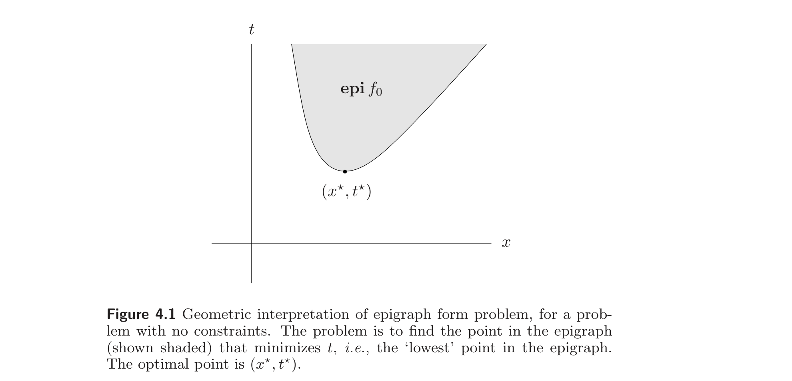
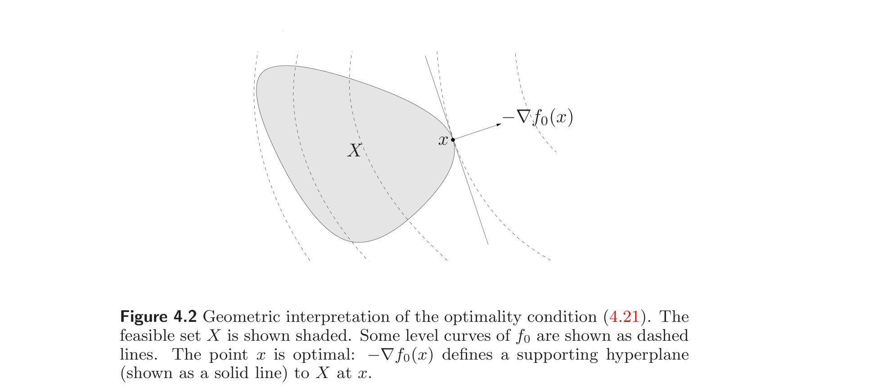
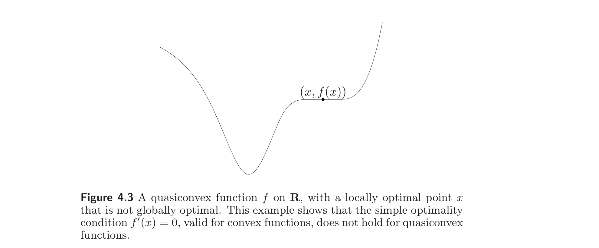
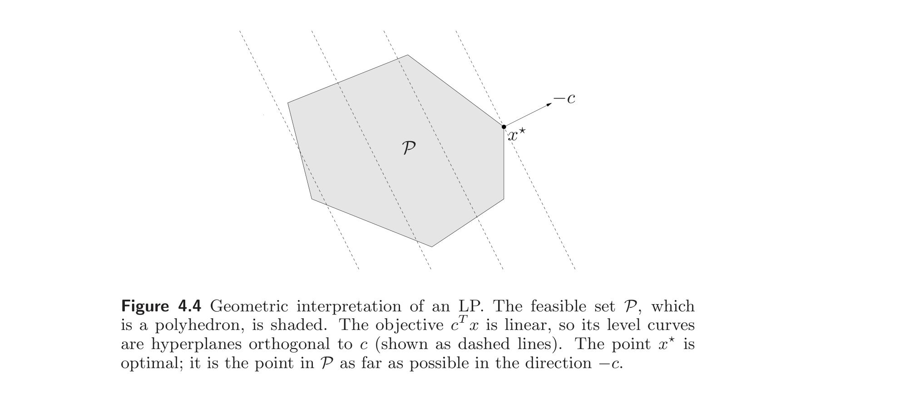
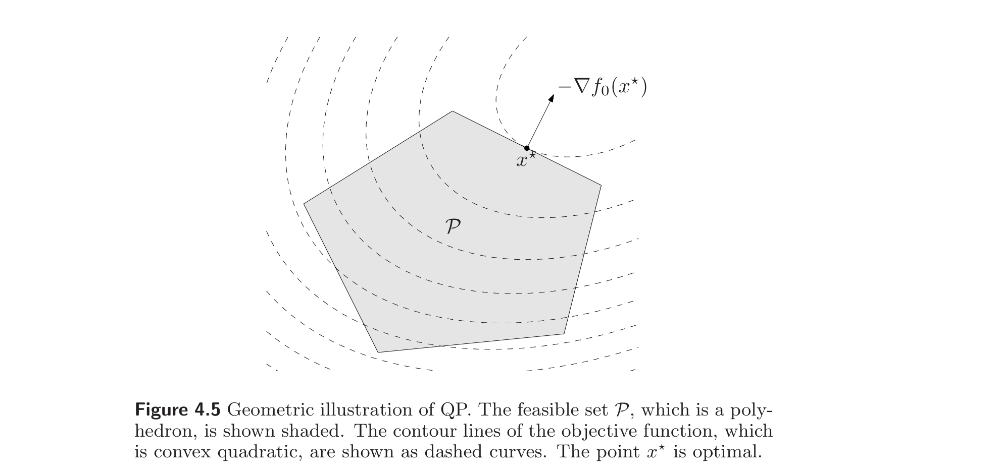
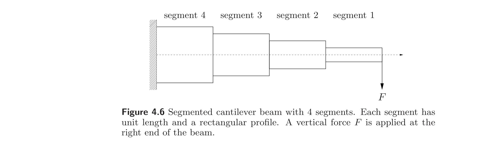

Chapter 4
凸优化问题 / Convex Optimization Problems
4.1 Optimization problems
4.1 优化问题
4.1.1 Basic terminology
4.1.1 基本术语
We use the notation
$$\begin{array}{ll} \text{minimize} & f_0(x) \ \text{subject to} & f_i(x) \le 0, \quad i = 1,\ldots,m \ & h_i(x) = 0, \quad i = 1,\ldots,p \end{array} \tag{4.1}$$
to describe the problem of finding an $x$ that minimizes $f_0(x)$ among all $x$ that satisfy the conditions $f_i(x) \le 0$, $i = 1,\ldots,m$, and $h_i(x) = 0$, $i = 1,\ldots,p$. We call $x \in \mathbb{R}^n$ the optimization variable and the function $f_0 : \mathbb{R}^n \to \mathbb{R}$ the objective function or cost function. The inequalities $f_i(x) \le 0$ are called inequality constraints, and the corresponding functions $f_i : \mathbb{R}^n \to \mathbb{R}$ are called the inequality constraint functions. The equations $h_i(x) = 0$ are called the equality constraints, and the functions $h_i : \mathbb{R}^n \to \mathbb{R}$ are the equality constraint functions. If there are no constraints (i.e., $m = p = 0$) we say the problem (4.1) is unconstrained.
我们用记号
$$\begin{array}{ll} \text{minimize} & f_0(x) \ \text{subject to} & f_i(x) \le 0, \quad i = 1,\ldots,m \ & h_i(x) = 0, \quad i = 1,\ldots,p \end{array} \tag{4.1}$$
来描述如下问题：在所有满足条件 $f_i(x) \le 0$（$i = 1,\ldots,m$）和 $h_i(x) = 0$（$i = 1,\ldots,p$）的 $x$ 中，寻找使 $f_0(x)$ 最小的 $x$。我们称 $x \in \mathbb{R}^n$ 为优化变量，称函数 $f_0 : \mathbb{R}^n \to \mathbb{R}$ 为目标函数或代价函数。不等式 $f_i(x) \le 0$ 称为不等式约束，对应的函数 $f_i : \mathbb{R}^n \to \mathbb{R}$ 称为不等式约束函数。方程 $h_i(x) = 0$ 称为等式约束，函数 $h_i : \mathbb{R}^n \to \mathbb{R}$ 为等式约束函数。若无约束（即 $m = p = 0$），则称问题 (4.1) 是无约束的。
The set of points for which the objective and all constraint functions are defined,
$$ \mathcal{D} = \bigcap_{i=0}^m \mathbf{dom}\, f_i \, \cap \, \bigcap_{i=1}^p \mathbf{dom}\, h_i, $$
is called the domain of the optimization problem (4.1). A point $x \in \mathcal{D}$ is feasible if it satisfies the constraints $f_i(x) \le 0$, $i = 1,\ldots,m$, and $h_i(x) = 0$, $i = 1,\ldots,p$. The problem (4.1) is said to be feasible if there exists at least one feasible point, and infeasible otherwise. The set of all feasible points is called the feasible set or the constraint set.
目标函数与所有约束函数均有定义的点集
$$ \mathcal{D} = \bigcap_{i=0}^m \mathbf{dom}\, f_i \, \cap \, \bigcap_{i=1}^p \mathbf{dom}\, h_i, $$
称为优化问题 (4.1) 的定义域。若点 $x \in \mathcal{D}$ 满足约束 $f_i(x) \le 0$（$i = 1,\ldots,m$）和 $h_i(x) = 0$（$i = 1,\ldots,p$），则称 $x$ 是可行的。若至少存在一个可行点，则称问题 (4.1) 是可行的，否则称为不可行的。所有可行点构成的集合称为可行集或约束集。
The optimal value $p^\star$ of the problem (4.1) is defined as
$$ p^\star = \inf \{f_0(x) \mid f_i(x) \le 0,\, i = 1,\ldots,m,\, h_i(x) = 0,\, i = 1,\ldots,p\}. $$
We allow $p^\star$ to take on the extended values $\pm \infty$. If the problem is infeasible, we have $p^\star = \infty$ (following the standard convention that the infimum of the empty set is $\infty$). If there are feasible points $x_k$ with $f_0(x_k) \to -\infty$ as $k \to \infty$, then $p^\star = -\infty$, and we say the problem (4.1) is unbounded below.
问题 (4.1) 的最优值 $p^\star$ 定义为
$$ p^\star = \inf \{f_0(x) \mid f_i(x) \le 0,\, i = 1,\ldots,m,\, h_i(x) = 0,\, i = 1,\ldots,p\}. $$
我们允许 $p^\star$ 取广义值 $\pm \infty$。若问题不可行，则 $p^\star = \infty$（按空集的下确界为 $\infty$ 的标准约定）。若存在可行点 $x_k$ 使得 $f_0(x_k) \to -\infty$（$k \to \infty$），则 $p^\star = -\infty$，此时称问题 (4.1) 下方无界。
Optimal and locally optimal points
最优点与局部最优点
We say $x^\star$ is an optimal point, or solves the problem (4.1), if $x^\star$ is feasible and $f_0(x^\star) = p^\star$. The set of all optimal points is the optimal set, denoted
$$ \mathcal{X}_{\mathrm{opt}} = \{x \mid f_i(x) \le 0,\, i = 1,\ldots,m,\, h_i(x) = 0,\, i = 1,\ldots,p,\, f_0(x) = p^\star\}. $$
If there exists an optimal point for the problem (4.1), we say the optimal value is attained or achieved, and the problem is solvable. If $\mathcal{X}_{\mathrm{opt}}$ is empty, we say the optimal value is not attained or not achieved. (This always occurs when the problem is unbounded below.)
若 $x^\star$ 可行且 $f_0(x^\star) = p^\star$，则称 $x^\star$ 为最优点，或称它求解了问题 (4.1)。所有最优点构成的集合称为最优集，记为
$$ \mathcal{X}_{\mathrm{opt}} = \{x \mid f_i(x) \le 0,\, i = 1,\ldots,m,\, h_i(x) = 0,\, i = 1,\ldots,p,\, f_0(x) = p^\star\}. $$
若问题 (4.1) 存在最优点，则称最优值被达到或实现，且该问题是可解的。若 $\mathcal{X}_{\mathrm{opt}}$ 为空，则称最优值未被达到或未被实现。（当问题下方无界时，必然出现此情形。）
A feasible point $x$ with $f_0(x) \le p^\star + \epsilon$ (where $\epsilon > 0$) is called $\epsilon$-suboptimal, and the set of all $\epsilon$-suboptimal points is called the $\epsilon$-suboptimal set for the problem (4.1).
We say a feasible point $x$ is locally optimal if there is an $R > 0$ such that
$$ f_0(x) = \inf\{f_0(z) \mid f_i(z) \le 0,\, i = 1,\ldots,m,\, h_i(z) = 0,\, i = 1,\ldots,p,\, \|z - x\|_2 \le R\}, $$
or, in other words, $x$ solves the optimization problem
$$\begin{array}{ll} \text{minimize} & f_0(z) \\ \text{subject to} & f_i(z) \le 0, \quad i = 1,\ldots,m \\ & h_i(z) = 0, \quad i = 1,\ldots,p \\ & \|z - x\|_2 \le R \end{array}$$
with variable $z$. Roughly speaking, this means $x$ minimizes $f_0$ over nearby points in the feasible set. The term ‘globally optimal’ is sometimes used for ‘optimal’ to distinguish between ‘locally optimal’ and ‘optimal’. Throughout this book, however, optimal will mean globally optimal.
满足 $f_0(x) \le p^\star + \epsilon$（其中 $\epsilon > 0$）的可行点 $x$ 称为 $\epsilon$-次优的，所有 $\epsilon$-次优点构成的集合称为问题 (4.1) 的 $\epsilon$-次优集。
若存在 $R > 0$ 使得
$$ f_0(x) = \inf\{f_0(z) \mid f_i(z) \le 0,\, i = 1,\ldots,m,\, h_i(z) = 0,\, i = 1,\ldots,p,\, \|z - x\|_2 \le R\}, $$
则称可行点 $x$ 是局部最优的。换言之，$x$ 求解了优化问题
$$\begin{array}{ll} \text{minimize} & f_0(z) \\ \text{subject to} & f_i(z) \le 0, \quad i = 1,\ldots,m \\ & h_i(z) = 0, \quad i = 1,\ldots,p \\ & \|z - x\|_2 \le R \end{array}$$
（变量为 $z$）。粗略地说，这意味着 $x$ 在可行集中邻近的点处最小化 $f_0$。“全局最优”一词有时用于指代“最优”，以区分“局部最优”与“最优”。但本书中，最优一律指全局最优。
If $x$ is feasible and $f_i(x) = 0$, we say the $i$th inequality constraint $f_i(x) \le 0$ is active at $x$. If $f_i(x) < 0$, we say the constraint $f_i(x) \le 0$ is inactive. (The equality constraints are active at all feasible points.) We say that a constraint is redundant if deleting it does not change the feasible set.
若 $x$ 可行且 $f_i(x) = 0$，则称第 $i$ 个不等式约束 $f_i(x) \le 0$ 在 $x$ 处起作用（active）。若 $f_i(x) < 0$，则称约束 $f_i(x) \le 0$ 不起作用（inactive）。（等式约束在所有可行点处都起作用。）若删去某一约束不改变可行集，则称该约束是冗余的。
Example 4.1 We illustrate these definitions with a few simple unconstrained optimization problems with variable $x \in \mathbb{R}$, and $\mathbf{dom}\, f_0 = \mathbb{R}_{++}$.
- $f_0(x) = 1/x$: $p^\star = 0$, but the optimal value is not achieved.
- $f_0(x) = -\log x$: $p^\star = -\infty$, so this problem is unbounded below.
- $f_0(x) = x \log x$: $p^\star = -1/e$, achieved at the (unique) optimal point $x^\star = 1/e$.
例 4.1 我们用几个简单的无约束优化问题（变量 $x \in \mathbb{R}$，$\mathbf{dom}\, f_0 = \mathbb{R}_{++}$）来说明上述定义。
- $f_0(x) = 1/x$：$p^\star = 0$，但最优值未被达到。
- $f_0(x) = -\log x$：$p^\star = -\infty$，故该问题下方无界。
- $f_0(x) = x \log x$：$p^\star = -1/e$，在（唯一的）最优点 $x^\star = 1/e$ 处达到。
Feasibility problems
可行性问题
If the objective function is identically zero, the optimal value is either zero (if the feasible set is nonempty) or $\infty$ (if the feasible set is empty). We call this the feasibility problem, and will sometimes write it as
$$\begin{array}{ll} \text{find} & x \\ \text{subject to} & f_i(x) \le 0, \quad i = 1,\ldots,m \\ & h_i(x) = 0, \quad i = 1,\ldots,p. \end{array}$$
The feasibility problem is thus to determine whether the constraints are consistent, and if so, find a point that satisfies them.
若目标函数恒为零，则最优值为零（当可行集非空时）或 $\infty$（当可行集为空时）。我们称之为可行性问题，有时写成
$$\begin{array}{ll} \text{find} & x \\ \text{subject to} & f_i(x) \le 0, \quad i = 1,\ldots,m \\ & h_i(x) = 0, \quad i = 1,\ldots,p. \end{array}$$
因此，可行性问题即判定约束是否相容；若相容，则求一个满足约束的点。
4.1.2 Expressing problems in standard form
4.1.2 问题的标准形式表示
We refer to (4.1) as an optimization problem in standard form. In the standard form problem we adopt the convention that the righthand side of the inequality and equality constraints are zero. This can always be arranged by subtracting any nonzero righthand side: we represent the equality constraint $g_i(x) = \tilde{g}_i(x)$, for example, as $h_i(x) = 0$, where $h_i(x) = g_i(x) - \tilde{g}_i(x)$. In a similar way we express inequalities of the form $f_i(x) \ge 0$ as $-f_i(x) \le 0$.
我们把 (4.1) 称为标准形式的优化问题。在标准形式问题中，我们约定不等式与等式约束的右端为零。这总能通过减去任意非零右端来实现：例如，把等式约束 $g_i(x) = \tilde{g}_i(x)$ 表示为 $h_i(x) = 0$，其中 $h_i(x) = g_i(x) - \tilde{g}_i(x)$。类似地，形如 $f_i(x) \ge 0$ 的不等式表示为 $-f_i(x) \le 0$。
Example 4.2 Box constraints. Consider the optimization problem
$$\begin{array}{ll} \text{minimize} & f_0(x) \\ \text{subject to} & l_i \le x_i \le u_i, \quad i = 1,\ldots,n, \end{array}$$
where $x \in \mathbb{R}^n$ is the variable. The constraints are called variable bounds (since they give lower and upper bounds for each $x_i$) or box constraints (since the feasible set is a box).
We can express this problem in standard form as
$$\begin{array}{ll} \text{minimize} & f_0(x) \\ \text{subject to} & l_i - x_i \le 0, \quad i = 1,\ldots,n \\ & x_i - u_i \le 0, \quad i = 1,\ldots,n. \end{array}$$
There are $2n$ inequality constraint functions:
$$ f_i(x) = l_i - x_i, \quad i = 1,\ldots,n, $$
and
$$ f_i(x) = x_{i-n} - u_{i-n}, \quad i = n+1,\ldots,2n. $$
例 4.2 盒约束。 考虑优化问题
$$\begin{array}{ll} \text{minimize} & f_0(x) \\ \text{subject to} & l_i \le x_i \le u_i, \quad i = 1,\ldots,n, \end{array}$$
其中 $x \in \mathbb{R}^n$ 为变量。这些约束称为变量界限（因它们给出每个 $x_i$ 的下界与上界）或盒约束（因可行集是一个盒子）。
该问题的标准形式为
$$\begin{array}{ll} \text{minimize} & f_0(x) \\ \text{subject to} & l_i - x_i \le 0, \quad i = 1,\ldots,n \\ & x_i - u_i \le 0, \quad i = 1,\ldots,n. \end{array}$$
共有 $2n$ 个不等式约束函数：
$$ f_i(x) = l_i - x_i, \quad i = 1,\ldots,n, $$
以及
$$ f_i(x) = x_{i-n} - u_{i-n}, \quad i = n+1,\ldots,2n. $$
Maximization problems
最大化问题
We concentrate on the minimization problem by convention. We can solve the maximization problem
$$\begin{array}{ll} \text{maximize} & f_0(x) \\ \text{subject to} & f_i(x) \le 0, \quad i = 1,\ldots,m \\ & h_i(x) = 0, \quad i = 1,\ldots,p \end{array} \tag{4.2}$$
by minimizing the function $-f_0$ subject to the constraints. By this correspondence we can define all the terms above for the maximization problem (4.2). For example the optimal value of (4.2) is defined as
$$ p^\star = \sup\{f_0(x) \mid f_i(x) \le 0,\, i = 1,\ldots,m,\, h_i(x) = 0,\, i = 1,\ldots,p\}, $$
and a feasible point $x$ is $\epsilon$-suboptimal if $f_0(x) \ge p^\star - \epsilon$. When the maximization problem is considered, the objective is sometimes called the utility or satisfaction level instead of the cost.
按惯例，我们集中讨论极小化问题。极大化问题
$$\begin{array}{ll} \text{maximize} & f_0(x) \\ \text{subject to} & f_i(x) \le 0, \quad i = 1,\ldots,m \\ & h_i(x) = 0, \quad i = 1,\ldots,p \end{array} \tag{4.2}$$
可通过在同样约束下极小化函数 $-f_0$ 来求解。据此对应关系，我们可为极大化问题 (4.2) 定义上述所有术语。例如，(4.2) 的最优值定义为
$$ p^\star = \sup\{f_0(x) \mid f_i(x) \le 0,\, i = 1,\ldots,m,\, h_i(x) = 0,\, i = 1,\ldots,p\}, $$
可行点 $x$ 若满足 $f_0(x) \ge p^\star - \epsilon$ 则为 $\epsilon$-次优的。考虑极大化问题时，目标有时称为效用或满意度，而非代价。
4.1.3 Equivalent problems
4.1.3 等价问题
In this book we will use the notion of equivalence of optimization problems in an informal way. We call two problems equivalent if from a solution of one, a solution of the other is readily found, and vice versa. (It is possible, but complicated, to give a formal definition of equivalence.)
本书中，我们将以非正式的方式使用优化问题的等价概念。若由一个问题之解可容易求得另一问题之解，反之亦然，则称两问题等价。（给出等价的形式化定义是可能的，但较为繁琐。）
As a simple example, consider the problem
$$\begin{array}{ll} \text{minimize} & \tilde{f}(x) = \alpha_0 f_0(x) \\ \text{subject to} & \tilde{f}_i(x) = \alpha_i f_i(x) \le 0, \quad i = 1,\ldots,m \\ & \tilde{h}_i(x) = \beta_i h_i(x) = 0, \quad i = 1,\ldots,p, \end{array} \tag{4.3}$$
where $\alpha_i > 0$, $i = 0,\ldots,m$, and $\beta_i \ne 0$, $i = 1,\ldots,p$. This problem is obtained from the standard form problem (4.1) by scaling the objective and inequality constraint functions by positive constants, and scaling the equality constraint functions by nonzero constants. As a result, the feasible sets of the problem (4.3) and the original problem (4.1) are identical. A point $x$ is optimal for the original problem (4.1) if and only if it is optimal for the scaled problem (4.3), so we say the two problems are equivalent. The two problems (4.1) and (4.3) are not, however, the same (unless $\alpha_i$ and $\beta_i$ are all equal to one), since the objective and constraint functions differ.
作为一个简单例子，考虑问题
$$\begin{array}{ll} \text{minimize} & \tilde{f}(x) = \alpha_0 f_0(x) \\ \text{subject to} & \tilde{f}_i(x) = \alpha_i f_i(x) \le 0, \quad i = 1,\ldots,m \\ & \tilde{h}_i(x) = \beta_i h_i(x) = 0, \quad i = 1,\ldots,p, \end{array} \tag{4.3}$$
其中 $\alpha_i > 0$（$i = 0,\ldots,m$），$\beta_i \ne 0$（$i = 1,\ldots,p$）。该问题是由标准形式问题 (4.1) 通过以正的常数缩放目标函数与不等式约束函数、以非零常数缩放等式约束函数而得到的。因此，问题 (4.3) 与原问题 (4.1) 的可行集相同。点 $x$ 对原问题 (4.1) 最优当且仅当它对缩放后的问题 (4.3) 最优，故称两问题等价。然而，问题 (4.1) 与 (4.3) 并不相同（除非 $\alpha_i$ 和 $\beta_i$ 全为 1），因为目标函数与约束函数不同。
We now describe some general transformations that yield equivalent problems.
下面描述一些产生等价问题的一般变换。
Change of variables
变量代换
Suppose $\phi : \mathbb{R}^n \to \mathbb{R}^n$ is one-to-one, with image covering the problem domain $\mathcal{D}$, i.e., $\phi(\mathbf{dom}\, \phi) \supseteq \mathcal{D}$. We define functions $\tilde{f}_i$ and $\tilde{h}_i$ as
$$ \tilde{f}_i(z) = f_i(\phi(z)), \quad i = 0,\ldots,m, \qquad \tilde{h}_i(z) = h_i(\phi(z)), \quad i = 1,\ldots,p. $$
Now consider the problem
$$\begin{array}{ll} \text{minimize} & \tilde{f}_0(z) \\ \text{subject to} & \tilde{f}_i(z) \le 0, \quad i = 1,\ldots,m \\ & \tilde{h}_i(z) = 0, \quad i = 1,\ldots,p, \end{array} \tag{4.4}$$
with variable $z$. We say that the standard form problem (4.1) and the problem (4.4) are related by the change of variable or substitution of variable $x = \phi(z)$.
The two problems are clearly equivalent: if $x$ solves the problem (4.1), then $z = \phi^{-1}(x)$ solves the problem (4.4); if $z$ solves the problem (4.4), then $x = \phi(z)$ solves the problem (4.1).
设 $\phi : \mathbb{R}^n \to \mathbb{R}^n$ 为单射，且其像覆盖问题定义域 $\mathcal{D}$，即 $\phi(\mathbf{dom}\, \phi) \supseteq \mathcal{D}$。定义函数 $\tilde{f}_i$ 和 $\tilde{h}_i$ 为
$$ \tilde{f}_i(z) = f_i(\phi(z)), \quad i = 0,\ldots,m, \qquad \tilde{h}_i(z) = h_i(\phi(z)), \quad i = 1,\ldots,p. $$
考虑问题
$$\begin{array}{ll} \text{minimize} & \tilde{f}_0(z) \\ \text{subject to} & \tilde{f}_i(z) \le 0, \quad i = 1,\ldots,m \\ & \tilde{h}_i(z) = 0, \quad i = 1,\ldots,p, \end{array} \tag{4.4}$$
变量为 $z$。我们称标准形式问题 (4.1) 与问题 (4.4) 通过变量代换（或变量替换）$x = \phi(z)$ 相关联。
两问题显然等价：若 $x$ 求解问题 (4.1)，则 $z = \phi^{-1}(x)$ 求解问题 (4.4)；若 $z$ 求解问题 (4.4)，则 $x = \phi(z)$ 求解问题 (4.1)。
Transformation of objective and constraint functions
目标函数与约束函数的变换
Suppose that $\psi_0 : \mathbb{R} \to \mathbb{R}$ is monotone increasing, $\psi_1,\ldots,\psi_m : \mathbb{R} \to \mathbb{R}$ satisfy $\psi_i(u) \le 0$ if and only if $u \le 0$, and $\psi_{m+1},\ldots,\psi_{m+p} : \mathbb{R} \to \mathbb{R}$ satisfy $\psi_i(u) = 0$ if and only if $u = 0$. We define functions $\tilde{f}_i$ and $\tilde{h}_i$ as the compositions
$$ \tilde{f}_i(x) = \psi_i(f_i(x)), \quad i = 0,\ldots,m, \qquad \tilde{h}_i(x) = \psi_{m+i}(h_i(x)), \quad i = 1,\ldots,p. $$
Evidently the associated problem
$$\begin{array}{ll} \text{minimize} & \tilde{f}_0(x) \\ \text{subject to} & \tilde{f}_i(x) \le 0, \quad i = 1,\ldots,m \\ & \tilde{h}_i(x) = 0, \quad i = 1,\ldots,p \end{array}$$
and the standard form problem (4.1) are equivalent; indeed, the feasible sets are identical, and the optimal points are identical. (The example (4.3) above, in which the objective and constraint functions are scaled by appropriate constants, is the special case when all $\psi_i$ are linear.)
设 $\psi_0 : \mathbb{R} \to \mathbb{R}$ 单调递增，$\psi_1,\ldots,\psi_m : \mathbb{R} \to \mathbb{R}$ 满足 $\psi_i(u) \le 0$ 当且仅当 $u \le 0$，$\psi_{m+1},\ldots,\psi_{m+p} : \mathbb{R} \to \mathbb{R}$ 满足 $\psi_i(u) = 0$ 当且仅当 $u = 0$。定义函数 $\tilde{f}_i$ 和 $\tilde{h}_i$ 为复合
$$ \tilde{f}_i(x) = \psi_i(f_i(x)), \quad i = 0,\ldots,m, \qquad \tilde{h}_i(x) = \psi_{m+i}(h_i(x)), \quad i = 1,\ldots,p. $$
显然，相应的问题
$$\begin{array}{ll} \text{minimize} & \tilde{f}_0(x) \\ \text{subject to} & \tilde{f}_i(x) \le 0, \quad i = 1,\ldots,m \\ & \tilde{h}_i(x) = 0, \quad i = 1,\ldots,p \end{array}$$
与标准形式问题 (4.1) 等价；事实上，可行集相同，最优集也相同。（上面的例子 (4.3) 中，目标与约束函数被适当的常数缩放，即所有 $\psi_i$ 均为线性这一特殊情形。）
Example 4.3 Least-norm and least-norm-squared problems. As a simple example consider the unconstrained Euclidean norm minimization problem
$$ \text{minimize} \quad \|Ax - b\|_2, \tag{4.5}$$
with variable $x \in \mathbb{R}^n$. Since the norm is always nonnegative, we can just as well solve the problem
$$ \text{minimize} \quad \|Ax - b\|_2^2 = (Ax - b)^T(Ax - b), \tag{4.6}$$
in which we minimize the square of the Euclidean norm. The problems (4.5) and (4.6) are clearly equivalent; the optimal points are the same. The two problems are not the same, however. For example, the objective in (4.5) is not differentiable at any $x$ with $Ax - b = 0$, whereas the objective in (4.6) is differentiable for all $x$ (in fact, quadratic).
例 4.3 最小范数与最小范数平方问题。 作为一个简单例子，考虑无约束的 Euclid 范数极小化问题
$$ \text{minimize} \quad \|Ax - b\|_2, \tag{4.5}$$
变量为 $x \in \mathbb{R}^n$。由于范数总是非负的，我们同样可以求解
$$ \text{minimize} \quad \|Ax - b\|_2^2 = (Ax - b)^T(Ax - b), \tag{4.6}$$
即极小化 Euclid 范数的平方。问题 (4.5) 与 (4.6) 显然等价；最优点相同。然而两问题并不相同。例如，(4.5) 的目标在满足 $Ax - b = 0$ 的任何 $x$ 处不可微，而 (4.6) 的目标对所有 $x$ 可微（事实上是二次的）。
Slack variables
松弛变量
One simple transformation is based on the observation that $f_i(x) \le 0$ if and only if there is an $s_i \ge 0$ that satisfies $f_i(x) + s_i = 0$. Using this transformation we obtain the problem
$$\begin{array}{ll} \text{minimize} & f_0(x) \\ \text{subject to} & s_i \ge 0, \quad i = 1,\ldots,m \\ & f_i(x) + s_i = 0, \quad i = 1,\ldots,m \\ & h_i(x) = 0, \quad i = 1,\ldots,p, \end{array} \tag{4.7}$$
where the variables are $x \in \mathbb{R}^n$ and $s \in \mathbb{R}^m$. This problem has $n + m$ variables, $m$ inequality constraints (the nonnegativity constraints on $s_i$), and $m + p$ equality constraints. The new variable $s_i$ is called the slack variable associated with the original inequality constraint $f_i(x) \le 0$. Introducing slack variables replaces each inequality constraint with an equality constraint, and a nonnegativity constraint.
The problem (4.7) is equivalent to the original standard form problem (4.1). Indeed, if $(x, s)$ is feasible for the problem (4.7), then $x$ is feasible for the original problem, since $s_i = -f_i(x) \ge 0$. Conversely, if $x$ is feasible for the original problem, then $(x, s)$ is feasible for the problem (4.7), where we take $s_i = -f_i(x)$. Similarly, $x$ is optimal for the original problem (4.1) if and only if $(x, s)$ is optimal for the problem (4.7), where $s_i = -f_i(x)$.
一种简单的变换基于如下观察：$f_i(x) \le 0$ 当且仅当存在 $s_i \ge 0$ 满足 $f_i(x) + s_i = 0$。利用此变换得到问题
$$\begin{array}{ll} \text{minimize} & f_0(x) \\ \text{subject to} & s_i \ge 0, \quad i = 1,\ldots,m \\ & f_i(x) + s_i = 0, \quad i = 1,\ldots,m \\ & h_i(x) = 0, \quad i = 1,\ldots,p, \end{array} \tag{4.7}$$
变量为 $x \in \mathbb{R}^n$ 和 $s \in \mathbb{R}^m$。该问题有 $n + m$ 个变量、$m$ 个不等式约束（对 $s_i$ 的非负约束）和 $m + p$ 个等式约束。新变量 $s_i$ 称为与原不等式约束 $f_i(x) \le 0$ 关联的松弛变量。引入松弛变量把每个不等式约束替换为一个等式约束和一个非负约束。
问题 (4.7) 与原标准形式问题 (4.1) 等价。事实上，若 $(x, s)$ 对问题 (4.7) 可行，则 $x$ 对原问题可行，因为 $s_i = -f_i(x) \ge 0$。反之，若 $x$ 对原问题可行，则 $(x, s)$ 对问题 (4.7) 可行，其中取 $s_i = -f_i(x)$。类似地，$x$ 对原问题 (4.1) 最优当且仅当 $(x, s)$ 对问题 (4.7) 最优，其中 $s_i = -f_i(x)$。
Eliminating equality constraints
消去等式约束
If we can explicitly parametrize all solutions of the equality constraints
$$ h_i(x) = 0, \quad i = 1,\ldots,p, \tag{4.8}$$
using some parameter $z \in \mathbb{R}^k$, then we can eliminate the equality constraints from the problem, as follows. Suppose the function $\phi : \mathbb{R}^k \to \mathbb{R}^n$ is such that $x$ satisfies (4.8) if and only if there is some $z \in \mathbb{R}^k$ such that $x = \phi(z)$. The optimization problem
$$\begin{array}{ll} \text{minimize} & \tilde{f}_0(z) = f_0(\phi(z)) \\ \text{subject to} & \tilde{f}_i(z) = f_i(\phi(z)) \le 0, \quad i = 1,\ldots,m \end{array}$$
is then equivalent to the original problem (4.1). This transformed problem has variable $z \in \mathbb{R}^k$, $m$ inequality constraints, and no equality constraints. If $z$ is optimal for the transformed problem, then $x = \phi(z)$ is optimal for the original problem. Conversely, if $x$ is optimal for the original problem, then (since $x$ is feasible) there is at least one $z$ such that $x = \phi(z)$. Any such $z$ is optimal for the transformed problem.
若能显式地参数化等式约束
$$ h_i(x) = 0, \quad i = 1,\ldots,p, \tag{4.8}$$
的所有解（用某个参数 $z \in \mathbb{R}^k$），则可如下消去问题中的等式约束。设函数 $\phi : \mathbb{R}^k \to \mathbb{R}^n$ 满足：$x$ 满足 (4.8) 当且仅当存在某个 $z \in \mathbb{R}^k$ 使 $x = \phi(z)$。则优化问题
$$\begin{array}{ll} \text{minimize} & \tilde{f}_0(z) = f_0(\phi(z)) \\ \text{subject to} & \tilde{f}_i(z) = f_i(\phi(z)) \le 0, \quad i = 1,\ldots,m \end{array}$$
与原问题 (4.1) 等价。该变换后的问题变量为 $z \in \mathbb{R}^k$，有 $m$ 个不等式约束且无等式约束。若 $z$ 对变换后的问题最优，则 $x = \phi(z)$ 对原问题最优。反之，若 $x$ 对原问题最优，则（因 $x$ 可行）至少存在一个 $z$ 使 $x = \phi(z)$，任何这样的 $z$ 对变换后的问题最优。
Eliminating linear equality constraints
消去线性等式约束
The process of eliminating variables can be described more explicitly, and easily carried out numerically, when the equality constraints are all linear, i.e., have the form $Ax = b$. If $Ax = b$ is inconsistent, i.e., $b \notin \mathcal{R}(A)$, then the original problem is infeasible. Assuming this is not the case, let $x_0$ denote any solution of the equality constraints. Let $F \in \mathbb{R}^{n \times k}$ be any matrix with $\mathcal{R}(F) = \mathcal{N}(A)$, so the general solution of the linear equations $Ax = b$ is given by $Fz + x_0$, where $z \in \mathbb{R}^k$. (We can choose $F$ to be full rank, in which case we have $k = n - \mathbf{rank}\, A$.)
Substituting $x = Fz + x_0$ into the original problem yields the problem
$$\begin{array}{ll} \text{minimize} & f_0(Fz + x_0) \\ \text{subject to} & f_i(Fz + x_0) \le 0, \quad i = 1,\ldots,m, \end{array}$$
with variable $z$, which is equivalent to the original problem, has no equality constraints, and $\mathbf{rank}\, A$ fewer variables.
当等式约束全为线性、即形如 $Ax = b$ 时，消去变量的过程可以更明确地描述，也容易数值实现。若 $Ax = b$ 不相容，即 $b \notin \mathcal{R}(A)$，则原问题不可行。设非如此，记 $x_0$ 为等式约束的任一解。取 $F \in \mathbb{R}^{n \times k}$ 为满足 $\mathcal{R}(F) = \mathcal{N}(A)$ 的任一矩阵，则线性方程组 $Ax = b$ 的通解为 $Fz + x_0$，其中 $z \in \mathbb{R}^k$。（可选 $F$ 列满秩，此时 $k = n - \mathbf{rank}\, A$。）
将 $x = Fz + x_0$ 代入原问题得到
$$\begin{array}{ll} \text{minimize} & f_0(Fz + x_0) \\ \text{subject to} & f_i(Fz + x_0) \le 0, \quad i = 1,\ldots,m, \end{array}$$
变量为 $z$，它与原问题等价，无等式约束，且少了 $\mathbf{rank}\, A$ 个变量。
Introducing equality constraints
引入等式约束
We can also introduce equality constraints and new variables into a problem. Instead of describing the general case, which is complicated and not very illuminating, we give a typical example that will be useful later. Consider the problem
$$\begin{array}{ll} \text{minimize} & f_0(A_0 x + b_0) \\ \text{subject to} & f_i(A_i x + b_i) \le 0, \quad i = 1,\ldots,m \\ & h_i(x) = 0, \quad i = 1,\ldots,p, \end{array}$$
where $x \in \mathbb{R}^n$, $A_i \in \mathbb{R}^{k_i \times n}$, and $f_i : \mathbb{R}^{k_i} \to \mathbb{R}$. In this problem the objective and constraint functions are given as compositions of the functions $f_i$ with affine transformations defined by $A_i x + b_i$.
We introduce new variables $y_i \in \mathbb{R}^{k_i}$, as well as new equality constraints $y_i = A_i x + b_i$, for $i = 0,\ldots,m$, and form the equivalent problem
$$\begin{array}{ll} \text{minimize} & f_0(y_0) \\ \text{subject to} & f_i(y_i) \le 0, \quad i = 1,\ldots,m \\ & y_i = A_i x + b_i, \quad i = 0,\ldots,m \\ & h_i(x) = 0, \quad i = 1,\ldots,p. \end{array}$$
This problem has $k_0 + \cdots + k_m$ new variables,
$$ y_0 \in \mathbb{R}^{k_0}, \quad \ldots, \quad y_m \in \mathbb{R}^{k_m}, $$
and $k_0 + \cdots + k_m$ new equality constraints,
$$ y_0 = A_0 x + b_0, \quad \ldots, \quad y_m = A_m x + b_m. $$
The objective and inequality constraints in this problem are independent, i.e., involve different optimization variables.
我们也可以向问题中引入等式约束与新变量。我们不描述一般情形（复杂且不甚明了），而是给出一个将在后文有用的典型例子。考虑问题
$$\begin{array}{ll} \text{minimize} & f_0(A_0 x + b_0) \\ \text{subject to} & f_i(A_i x + b_i) \le 0, \quad i = 1,\ldots,m \\ & h_i(x) = 0, \quad i = 1,\ldots,p, \end{array}$$
其中 $x \in \mathbb{R}^n$，$A_i \in \mathbb{R}^{k_i \times n}$，$f_i : \mathbb{R}^{k_i} \to \mathbb{R}$。该问题中，目标函数与约束函数是函数 $f_i$ 与由 $A_i x + b_i$ 定义的仿射变换的复合。
引入新变量 $y_i \in \mathbb{R}^{k_i}$ 以及新等式约束 $y_i = A_i x + b_i$（$i = 0,\ldots,m$），构成等价问题
$$\begin{array}{ll} \text{minimize} & f_0(y_0) \\ \text{subject to} & f_i(y_i) \le 0, \quad i = 1,\ldots,m \\ & y_i = A_i x + b_i, \quad i = 0,\ldots,m \\ & h_i(x) = 0, \quad i = 1,\ldots,p. \end{array}$$
该问题有 $k_0 + \cdots + k_m$ 个新变量
$$ y_0 \in \mathbb{R}^{k_0}, \quad \ldots, \quad y_m \in \mathbb{R}^{k_m}, $$
以及 $k_0 + \cdots + k_m$ 个新等式约束
$$ y_0 = A_0 x + b_0, \quad \ldots, \quad y_m = A_m x + b_m. $$
该问题中的目标与不等式约束是相互独立的，即涉及不同的优化变量。
Optimizing over some variables
对部分变量优化
We always have
$$ \inf_{x,y} f(x, y) = \inf_x \tilde{f}(x) $$
where $\tilde{f}(x) = \inf_y f(x, y)$. In other words, we can always minimize a function by first minimizing over some of the variables, and then minimizing over the remaining ones. This simple and general principle can be used to transform problems into equivalent forms. The general case is cumbersome to describe and not illuminating, so we describe instead an example.
Suppose the variable $x \in \mathbb{R}^n$ is partitioned as $x = (x_1, x_2)$, with $x_1 \in \mathbb{R}^{n_1}$, $x_2 \in \mathbb{R}^{n_2}$, and $n_1 + n_2 = n$. We consider the problem
$$\begin{array}{ll} \text{minimize} & f_0(x_1, x_2) \\ \text{subject to} & f_i(x_1) \le 0, \quad i = 1,\ldots,m_1 \\ & \tilde{f}_i(x_2) \le 0, \quad i = 1,\ldots,m_2, \end{array} \tag{4.9}$$
in which the constraints are independent, in the sense that each constraint function depends on $x_1$ or $x_2$. We first minimize over $x_2$. Define the function $\tilde{f}_0$ of $x_1$ by
$$ \tilde{f}_0(x_1) = \inf\{f_0(x_1, z) \mid \tilde{f}_i(z) \le 0,\, i = 1,\ldots,m_2\}. $$
The problem (4.9) is then equivalent to
$$\begin{array}{ll} \text{minimize} & \tilde{f}_0(x_1) \\ \text{subject to} & f_i(x_1) \le 0, \quad i = 1,\ldots,m_1. \end{array} \tag{4.10}$$
总有
$$ \inf_{x,y} f(x, y) = \inf_x \tilde{f}(x) $$
其中 $\tilde{f}(x) = \inf_y f(x, y)$。换言之，我们总可以先对部分变量取极小、再对其余变量取极小来极小化一个函数。这一简单而一般的原则可用于将问题变换为等价形式。一般情形的描述繁琐且不甚明了，故以一个例子说明。
设变量 $x \in \mathbb{R}^n$ 分块为 $x = (x_1, x_2)$，其中 $x_1 \in \mathbb{R}^{n_1}$，$x_2 \in \mathbb{R}^{n_2}$，$n_1 + n_2 = n$。考虑问题
$$\begin{array}{ll} \text{minimize} & f_0(x_1, x_2) \\ \text{subject to} & f_i(x_1) \le 0, \quad i = 1,\ldots,m_1 \\ & \tilde{f}_i(x_2) \le 0, \quad i = 1,\ldots,m_2, \end{array} \tag{4.9}$$
其中约束是独立的，即每个约束函数只依赖于 $x_1$ 或 $x_2$。先对 $x_2$ 取极小。定义 $x_1$ 的函数 $\tilde{f}_0$ 为
$$ \tilde{f}_0(x_1) = \inf\{f_0(x_1, z) \mid \tilde{f}_i(z) \le 0,\, i = 1,\ldots,m_2\}. $$
则问题 (4.9) 等价于
$$\begin{array}{ll} \text{minimize} & \tilde{f}_0(x_1) \\ \text{subject to} & f_i(x_1) \le 0, \quad i = 1,\ldots,m_1. \end{array} \tag{4.10}$$
Example 4.4 Minimizing a quadratic function with constraints on some variables. Consider a problem with strictly convex quadratic objective, with some of the variables unconstrained:
$$\begin{array}{ll} \text{minimize} & x_1^T P_{11} x_1 + 2 x_1^T P_{12} x_2 + x_2^T P_{22} x_2 \\ \text{subject to} & f_i(x_1) \le 0, \quad i = 1,\ldots,m, \end{array}$$
where $P_{11}$ and $P_{22}$ are symmetric. Here we can analytically minimize over $x_2$:
$$ \inf_{x_2} \left( x_1^T P_{11} x_1 + 2 x_1^T P_{12} x_2 + x_2^T P_{22} x_2 \right) = x_1^T \left( P_{11} - P_{12} P_{22}^{-1} P_{12}^T \right) x_1 $$
(see §A.5.5). Therefore the original problem is equivalent to
$$\begin{array}{ll} \text{minimize} & x_1^T \left( P_{11} - P_{12} P_{22}^{-1} P_{12}^T \right) x_1 \\ \text{subject to} & f_i(x_1) \le 0, \quad i = 1,\ldots,m. \end{array}$$
例 4.4 带部分变量约束的二次函数极小化。 考虑严格凸二次目标、部分变量不受约束的问题：
$$\begin{array}{ll} \text{minimize} & x_1^T P_{11} x_1 + 2 x_1^T P_{12} x_2 + x_2^T P_{22} x_2 \\ \text{subject to} & f_i(x_1) \le 0, \quad i = 1,\ldots,m, \end{array}$$
其中 $P_{11}$ 和 $P_{22}$ 对称。这里可解析地对 $x_2$ 取极小：
$$ \inf_{x_2} \left( x_1^T P_{11} x_1 + 2 x_1^T P_{12} x_2 + x_2^T P_{22} x_2 \right) = x_1^T \left( P_{11} - P_{12} P_{22}^{-1} P_{12}^T \right) x_1 $$
（见 §A.5.5）。因此原问题等价于
$$\begin{array}{ll} \text{minimize} & x_1^T \left( P_{11} - P_{12} P_{22}^{-1} P_{12}^T \right) x_1 \\ \text{subject to} & f_i(x_1) \le 0, \quad i = 1,\ldots,m. \end{array}$$
Epigraph problem form
上图问题形式
The epigraph form of the standard problem (4.1) is the problem
$$\begin{array}{ll} \text{minimize} & t \\ \text{subject to} & f_0(x) - t \le 0 \\ & f_i(x) \le 0, \quad i = 1,\ldots,m \\ & h_i(x) = 0, \quad i = 1,\ldots,p, \end{array} \tag{4.11}$$
with variables $x \in \mathbb{R}^n$ and $t \in \mathbb{R}$. We can easily see that it is equivalent to the original problem: $(x, t)$ is optimal for (4.11) if and only if $x$ is optimal for (4.1) and $t = f_0(x)$. Note that the objective function of the epigraph form problem is a linear function of the variables $x, t$.
The epigraph form problem (4.11) can be interpreted geometrically as an optimization problem in the ‘graph space’ $(x, t)$: we minimize $t$ over the epigraph of $f_0$, subject to the constraints on $x$. This is illustrated in figure 4.1.
标准问题 (4.1) 的上图形式为
$$\begin{array}{ll} \text{minimize} & t \\ \text{subject to} & f_0(x) - t \le 0 \\ & f_i(x) \le 0, \quad i = 1,\ldots,m \\ & h_i(x) = 0, \quad i = 1,\ldots,p, \end{array} \tag{4.11}$$
变量为 $x \in \mathbb{R}^n$ 和 $t \in \mathbb{R}$。容易看出它与原问题等价：$(x, t)$ 对 (4.11) 最优当且仅当 $x$ 对 (4.1) 最优且 $t = f_0(x)$。注意上图形式问题的目标函数是变量 $x, t$ 的线性函数。
上图形式问题 (4.11) 可几何地解释为“图空间”$(x, t)$ 中的优化问题：在上图（epigraph）$\mathbf{epi}\, f_0$ 上极小化 $t$，并满足对 $x$ 的约束。如图 4.1 所示。

Implicit and explicit constraints
隐式约束与显式约束
By a simple trick already mentioned in §3.1.2, we can include any of the constraints implicitly in the objective function, by redefining its domain. As an extreme example, the standard form problem can be expressed as the unconstrained problem
$$ \text{minimize} \quad F(x), \tag{4.12}$$
where we define the function $F$ as $f_0$, but with domain restricted to the feasible set:
$$ \mathbf{dom}\, F = \{x \in \mathbf{dom}\, f_0 \mid f_i(x) \le 0,\, i = 1,\ldots,m,\, h_i(x) = 0,\, i = 1,\ldots,p\}, $$
and $F(x) = f_0(x)$ for $x \in \mathbf{dom}\, F$. (Equivalently, we can define $F(x)$ to have value $\infty$ for $x$ not feasible.) The problems (4.1) and (4.12) are clearly equivalent: they have the same feasible set, optimal points, and optimal value.
Of course this transformation is nothing more than a notational trick. Making the constraints implicit has not made the problem any easier to analyze or solve, even though the problem (4.12) is, at least nominally, unconstrained. In some ways the transformation makes the problem more difficult. Suppose, for example, that the objective $f_0$ in the original problem is differentiable, so in particular its domain is open. The restricted objective function $F$ is probably not differentiable, since its domain is likely not to be open.
通过 §3.1.2 中已提及的一个简单技巧，可把任意约束隐含于目标函数中，即重新定义其定义域。作为一个极端例子，标准形式问题可表示为无约束问题
$$ \text{minimize} \quad F(x), \tag{4.12}$$
其中函数 $F$ 定义为 $f_0$，但定义域限制为可行集：
$$ \mathbf{dom}\, F = \{x \in \mathbf{dom}\, f_0 \mid f_i(x) \le 0,\, i = 1,\ldots,m,\, h_i(x) = 0,\, i = 1,\ldots,p\}, $$
且 $x \in \mathbf{dom}\, F$ 时 $F(x) = f_0(x)$。（等价地，可定义 $F(x)$ 在 $x$ 不可行时取 $\infty$。）问题 (4.1) 与 (4.12) 显然等价：可行集、最优集、最优值均相同。
当然，此变换不过是记号技巧。使约束隐式化并未使问题更易分析或求解，尽管问题 (4.12) 至少名义上是无约束的。在某些方面，该变换使问题更困难。例如，设原问题的目标 $f_0$ 可微，则其定义域为开集。限制后的目标函数 $F$ 可能不可微，因其定义域很可能不是开集。
Conversely, we will encounter problems with implicit constraints, which we can then make explicit. As a simple example, consider the unconstrained problem
$$ \text{minimize} \quad f(x) \tag{4.13}$$
where the function $f$ is given by
$$ f(x) = \begin{cases} x^T x & Ax = b \\ \infty & \text{otherwise.} \end{cases} $$
Thus, the objective function is equal to the quadratic form $x^T x$ on the affine set defined by $Ax = b$, and $\infty$ off the affine set. Since we can clearly restrict our attention to points that satisfy $Ax = b$, we say that the problem (4.13) has an implicit equality constraint $Ax = b$ hidden in the objective. We can make the implicit equality constraint explicit, by forming the equivalent problem
$$\begin{array}{ll} \text{minimize} & x^T x \\ \text{subject to} & Ax = b. \end{array} \tag{4.14}$$
While the problems (4.13) and (4.14) are clearly equivalent, they are not the same. The problem (4.13) is unconstrained, but its objective function is not differentiable. The problem (4.14), however, has an equality constraint, but its objective and constraint functions are differentiable.
反之，我们会遇到带隐式约束的问题，可将其显式化。作为一个简单例子，考虑无约束问题
$$ \text{minimize} \quad f(x) \tag{4.13}$$
其中函数 $f$ 为
$$ f(x) = \begin{cases} x^T x & Ax = b \\ \infty & \text{其他.} \end{cases} $$
因此，目标函数在 $Ax = b$ 定义的仿射集上等于二次型 $x^T x$，在该仿射集之外为 $\infty$。由于显然可只考虑满足 $Ax = b$ 的点，我们说问题 (4.13) 在目标中隐含一个等式约束 $Ax = b$。将该隐式等式约束显式化，得到等价问题
$$\begin{array}{ll} \text{minimize} & x^T x \\ \text{subject to} & Ax = b. \end{array} \tag{4.14}$$
问题 (4.13) 与 (4.14) 显然等价，但并不相同。问题 (4.13) 无约束，但其目标函数不可微。问题 (4.14) 有等式约束，但其目标函数与约束函数可微。
4.1.4 Parameter and oracle problem descriptions
4.1.4 参数描述与预言机描述
For a problem in the standard form (4.1), there is still the question of how the objective and constraint functions are specified. In many cases these functions have some analytical or closed form, i.e., are given by a formula or expression that involves the variable $x$ as well as some parameters. Suppose, for example, the objective is quadratic, so it has the form $f_0(x) = (1/2)x^T P x + q^T x + r$. To specify the objective function we give the coefficients (also called problem parameters or problem data) $P \in \mathbf{S}^n$, $q \in \mathbb{R}^n$, and $r \in \mathbb{R}$. We call this a parameter problem description, since the specific problem to be solved (i.e., the problem instance) is specified by giving the values of the parameters that appear in the expressions for the objective and constraint functions.
对于标准形式 (4.1) 的问题，目标函数与约束函数如何给定仍是一个问题。许多情形下，这些函数有某种解析或闭式表达，即由一个涉及变量 $x$ 与某些参数的公式或表达式给出。例如，设目标为二次的，即形如 $f_0(x) = (1/2)x^T P x + q^T x + r$。为给定目标函数，我们给出系数（也称问题参数或问题数据）$P \in \mathbf{S}^n$、$q \in \mathbb{R}^n$、$r \in \mathbb{R}$。这称为参数描述，因为具体待解的问题（即问题实例）由出现在目标与约束函数表达式中的参数的取值给定。
In other cases the objective and constraint functions are described by oracle models (which are also called black box or subroutine models). In an oracle model, we do not know $f$ explicitly, but can evaluate $f(x)$ (and usually also some derivatives) at any $x \in \mathbf{dom}\, f$. This is referred to as querying the oracle, and is usually associated with some cost, such as time. We are also given some prior information about the function, such as convexity and a bound on its values. As a concrete example of an oracle model, consider an unconstrained problem, in which we are to minimize the function $f$. The function value $f(x)$ and its gradient $\nabla f(x)$ are evaluated in a subroutine. We can call the subroutine at any $x \in \mathbf{dom}\, f$, but do not have access to its source code. Calling the subroutine with argument $x$ yields (when the subroutine returns) $f(x)$ and $\nabla f(x)$. Note that in the oracle model, we never really know the function; we only know the function value (and some derivatives) at the points where we have queried the oracle. (We also know some given prior information about the function, such as differentiability and convexity.)
其他情形下，目标与约束函数由预言机模型（也称黑箱模型或子程序模型）描述。在预言机模型中，我们并不显式地知道 $f$，但可在任意 $x \in \mathbf{dom}\, f$ 处计算 $f(x)$（通常也可计算某些导数）。这称为查询预言机，通常伴随某种代价（如时间）。我们还获得关于函数的一些先验信息，如凸性及其值的界。作为预言机模型的具体例子，考虑无约束问题——我们要极小化函数 $f$。函数值 $f(x)$ 及其梯度 $\nabla f(x)$ 在一个子程序中计算。我们可在任意 $x \in \mathbf{dom}\, f$ 调用该子程序，但无法访问其源代码。以参数 $x$ 调用子程序，返回时得到 $f(x)$ 和 $\nabla f(x)$。注意，在预言机模型中，我们并未真正知道函数本身，只知道在查询过预言机的点处的函数值（及某些导数）。（我们还知道所给定的关于函数的先验信息，如可微性与凸性。）
In practice the distinction between a parameter and oracle problem description is not so sharp. If we are given a parameter problem description, we can construct an oracle for it, which simply evaluates the required functions and derivatives when queried. Most of the algorithms we study in part III work with an oracle model, but can be made more efficient when they are restricted to solve a specific parametrized family of problems.
实践中，参数描述与预言机描述的区别并非如此鲜明。若给定参数描述，我们可以为之构造预言机，它在被查询时简单地计算所需的函数与导数。我们在第三部分研究的大多数算法都采用预言机模型，但当限定于求解某一特定的参数化问题族时，可使其更高效。
4.2 Convex optimization
4.2 凸优化
4.2.1 Convex optimization problems in standard form
4.2.1 标准形式的凸优化问题
A convex optimization problem is one of the form
$$\begin{array}{ll} \text{minimize} & f_0(x) \\ \text{subject to} & f_i(x) \le 0, \quad i = 1,\ldots,m \\ & a_i^T x = b_i, \quad i = 1,\ldots,p, \end{array} \tag{4.15}$$
where $f_0, \ldots, f_m$ are convex functions. Comparing (4.15) with the general standard form problem (4.1), the convex problem has three additional requirements:
- the objective function must be convex,
- the inequality constraint functions must be convex,
- the equality constraint functions $h_i(x) = a_i^T x - b_i$ must be affine.
凸优化问题是形如
$$\begin{array}{ll} \text{minimize} & f_0(x) \\ \text{subject to} & f_i(x) \le 0, \quad i = 1,\ldots,m \\ & a_i^T x = b_i, \quad i = 1,\ldots,p, \end{array} \tag{4.15}$$
其中 $f_0, \ldots, f_m$ 为凸函数。将 (4.15) 与一般标准形式问题 (4.1) 比较，凸问题有三个附加要求：
- 目标函数必须是凸的；
- 不等式约束函数必须是凸的；
- 等式约束函数 $h_i(x) = a_i^T x - b_i$ 必须是仿射的。
We immediately note an important property: The feasible set of a convex optimization problem is convex, since it is the intersection of the domain of the problem
$$ \mathcal{D} = \bigcap_{i=0}^m \mathbf{dom}\, f_i, $$
which is a convex set, with $m$ (convex) sublevel sets $\{x \mid f_i(x) \le 0\}$ and $p$ hyperplanes $\{x \mid a_i^T x = b_i\}$. (We can assume without loss of generality that $a_i \ne 0$: if $a_i = 0$ and $b_i = 0$ for some $i$, then the $i$th equality constraint can be deleted; if $a_i = 0$ and $b_i \ne 0$, the $i$th equality constraint is inconsistent, and the problem is infeasible.) Thus, in a convex optimization problem, we minimize a convex objective function over a convex set.
我们立即注意到一个重要性质：凸优化问题的可行集是凸的，因为它是问题定义域
$$ \mathcal{D} = \bigcap_{i=0}^m \mathbf{dom}\, f_i, $$
（凸集）与 $m$ 个（凸的）下水平集 $\{x \mid f_i(x) \le 0\}$ 和 $p$ 个超平面 $\{x \mid a_i^T x = b_i\}$ 的交集。（不失一般性可设 $a_i \ne 0$：若某 $i$ 满足 $a_i = 0$ 且 $b_i = 0$，则第 $i$ 个等式约束可删去；若 $a_i = 0$ 且 $b_i \ne 0$，则第 $i$ 个等式约束不相容，问题不可行。）因此，在凸优化问题中，我们在凸集上极小化凸目标函数。
If $f_0$ is quasiconvex instead of convex, we say the problem (4.15) is a (standard form) quasiconvex optimization problem. Since the sublevel sets of a convex or quasiconvex function are convex, we conclude that for a convex or quasiconvex optimization problem the $\epsilon$-suboptimal sets are convex. In particular, the optimal set is convex. If the objective is strictly convex, then the optimal set contains at most one point.
若 $f_0$ 是拟凸的（而非凸的），则称问题 (4.15) 为（标准形式）拟凸优化问题。由于凸函数或拟凸函数的下水平集是凸的，故对凸或拟凸优化问题，$\epsilon$-次优集是凸的。特别地，最优集是凸的。若目标严格凸，则最优集至多含一个点。
Concave maximization problems
凹最大化问题
With a slight abuse of notation, we will also refer to
$$\begin{array}{ll} \text{maximize} & f_0(x) \\ \text{subject to} & f_i(x) \le 0, \quad i = 1,\ldots,m \\ & a_i^T x = b_i, \quad i = 1,\ldots,p, \end{array} \tag{4.16}$$
as a convex optimization problem if the objective function $f_0$ is concave, and the inequality constraint functions $f_1, \ldots, f_m$ are convex. This concave maximization problem is readily solved by minimizing the convex objective function $-f_0$. All of the results, conclusions, and algorithms that we describe for the minimization problem are easily transposed to the maximization case. In a similar way the maximization problem (4.16) is called quasiconvex if $f_0$ is quasiconcave.
略加滥用记号，我们也将
$$\begin{array}{ll} \text{maximize} & f_0(x) \\ \text{subject to} & f_i(x) \le 0, \quad i = 1,\ldots,m \\ & a_i^T x = b_i, \quad i = 1,\ldots,p, \end{array} \tag{4.16}$$
称为凸优化问题，只要目标函数 $f_0$ 是凹的，且不等式约束函数 $f_1, \ldots, f_m$ 是凸的。该凹最大化问题可通过极小化凸目标函数 $-f_0$ 容易求解。我们对极小化问题所述的所有结果、结论与算法，都容易转用于极大化情形。类似地，若 $f_0$ 是拟凹的，则称极大化问题 (4.16) 为拟凸的。
Abstract form convex optimization problem
抽象形式凸优化问题
It is important to note a subtlety in our definition of convex optimization problem. Consider the example with $x \in \mathbb{R}^2$,
$$\begin{array}{ll} \text{minimize} & f_0(x) = x_1^2 + x_2^2 \\ \text{subject to} & f_1(x) = x_1/(1 + x_2^2) \le 0 \\ & h_1(x) = (x_1 + x_2)^2 = 0, \end{array} \tag{4.17}$$
which is in the standard form (4.1). This problem is not a convex optimization problem in standard form since the equality constraint function $h_1$ is not affine, and the inequality constraint function $f_1$ is not convex. Nevertheless the feasible set, which is $\{x \mid x_1 \le 0,\, x_1 + x_2 = 0\}$, is convex. So although in this problem we are minimizing a convex function $f_0$ over a convex set, it is not a convex optimization problem by our definition.
Of course, the problem is readily reformulated as
$$\begin{array}{ll} \text{minimize} & f_0(x) = x_1^2 + x_2^2 \\ \text{subject to} & \tilde{f}_1(x) = x_1 \le 0 \\ & \tilde{h}_1(x) = x_1 + x_2 = 0, \end{array} \tag{4.18}$$
which is in standard convex optimization form, since $f_0$ and $\tilde{f}_1$ are convex, and $\tilde{h}_1$ is affine.
注意凸优化问题定义中的一个微妙之处。考虑例子（$x \in \mathbb{R}^2$）
$$\begin{array}{ll} \text{minimize} & f_0(x) = x_1^2 + x_2^2 \\ \text{subject to} & f_1(x) = x_1/(1 + x_2^2) \le 0 \\ & h_1(x) = (x_1 + x_2)^2 = 0, \end{array} \tag{4.17}$$
它处于标准形式 (4.1)。但该问题不是标准形式的凸优化问题，因为等式约束函数 $h_1$ 不是仿射的，不等式约束函数 $f_1$ 不是凸的。然而可行集 $\{x \mid x_1 \le 0,\, x_1 + x_2 = 0\}$ 是凸的。所以尽管此问题是在凸集上极小化凸函数 $f_0$，按我们的定义它不是凸优化问题。
当然，该问题容易改写为
$$\begin{array}{ll} \text{minimize} & f_0(x) = x_1^2 + x_2^2 \\ \text{subject to} & \tilde{f}_1(x) = x_1 \le 0 \\ & \tilde{h}_1(x) = x_1 + x_2 = 0, \end{array} \tag{4.18}$$
它处于标准凸优化形式，因为 $f_0$ 和 $\tilde{f}_1$ 是凸的，$\tilde{h}_1$ 是仿射的。
Some authors use the term abstract convex optimization problem to describe the (abstract) problem of minimizing a convex function over a convex set. Using this terminology, the problem (4.17) is an abstract convex optimization problem. We will not use this terminology in this book. For us, a convex optimization problem is not just one of minimizing a convex function over a convex set; it is also required that the feasible set be described specifically by a set of inequalities involving convex functions, and a set of linear equality constraints. The problem (4.17) is not a convex optimization problem, but the problem (4.18) is a convex optimization problem. (The two problems are, however, equivalent.)
有些作者用抽象凸优化问题来描述在凸集上极小化凸函数这一（抽象）问题。用此术语，问题 (4.17) 是抽象凸优化问题。本书不采用此术语。对我们而言，凸优化问题不仅仅是在凸集上极小化凸函数，还要求可行集由涉及凸函数的一组不等式和一组线性等式约束具体地描述。问题 (4.17) 不是凸优化问题，但问题 (4.18) 是。（然而两问题是等价的。）
Our adoption of the stricter definition of convex optimization problem does not matter much in practice. To solve the abstract problem of minimizing a convex function over a convex set, we need to find a description of the set in terms of convex inequalities and linear equality constraints. As the example above suggests, this is usually straightforward.
我们采用更严格的凸优化问题定义在实践中影响不大。为求解在凸集上极小化凸函数这一抽象问题，需要找到该集合用凸不等式与线性等式约束表示的描述。如上例所示，这通常是直接的。
4.2.2 Local and global optima
4.2.2 局部最优与全局最优
A fundamental property of convex optimization problems is that any locally optimal point is also (globally) optimal. To see this, suppose that $x$ is locally optimal for a convex optimization problem, i.e., $x$ is feasible and
$$ f_0(x) = \inf\{f_0(z) \mid z \text{ feasible},\, \|z - x\|_2 \le R\}, \tag{4.19}$$
for some $R > 0$. Now suppose that $x$ is not globally optimal, i.e., there is a feasible $y$ such that $f_0(y) < f_0(x)$. Evidently $\|y - x\|_2 > R$, since otherwise $f_0(x) \le f_0(y)$. Consider the point $z$ given by
$$ z = (1 - \theta)x + \theta y, \qquad \theta = \frac{R}{2\|y - x\|_2}. $$
Then we have $\|z - x\|_2 = R/2 < R$, and by convexity of the feasible set, $z$ is feasible. By convexity of $f_0$ we have
$$ f_0(z) \le (1 - \theta)f_0(x) + \theta f_0(y) < f_0(x), $$
which contradicts (4.19). Hence there exists no feasible $y$ with $f_0(y) < f_0(x)$, i.e., $x$ is globally optimal.
凸优化问题的一个基本性质是：任何局部最优点也是（全局）最优的。为证之，设 $x$ 是凸优化问题的局部最优，即 $x$ 可行且
$$ f_0(x) = \inf\{f_0(z) \mid z \text{ 可行},\, \|z - x\|_2 \le R\}, \tag{4.19}$$
对某个 $R > 0$ 成立。设 $x$ 不是全局最优，即存在可行 $y$ 使 $f_0(y) < f_0(x)$。显然 $\|y - x\|_2 > R$，否则 $f_0(x) \le f_0(y)$。考虑点
$$ z = (1 - \theta)x + \theta y, \qquad \theta = \frac{R}{2\|y - x\|_2}. $$
则 $\|z - x\|_2 = R/2 < R$，且由可行集的凸性，$z$ 可行。由 $f_0$ 的凸性
$$ f_0(z) \le (1 - \theta)f_0(x) + \theta f_0(y) < f_0(x), $$
与 (4.19) 矛盾。故不存在可行 $y$ 使 $f_0(y) < f_0(x)$，即 $x$ 全局最优。

It is not true that locally optimal points of quasiconvex optimization problems are globally optimal; see §4.2.5.
拟凸优化问题的局部最优点未必全局最优；见 §4.2.5。
4.2.3 An optimality criterion for differentiable $f_0$
4.2.3 可微 $f_0$ 的最优性准则
Suppose that the objective $f_0$ in a convex optimization problem is differentiable, so that for all $x, y \in \mathbf{dom}\, f_0$,
$$ f_0(y) \ge f_0(x) + \nabla f_0(x)^T (y - x) \tag{4.20}$$
(see §3.1.3). Let $\mathcal{X}$ denote the feasible set, i.e.,
$$ \mathcal{X} = \{x \mid f_i(x) \le 0,\, i = 1,\ldots,m,\, h_i(x) = 0,\, i = 1,\ldots,p\}. $$
Then $x$ is optimal if and only if $x \in \mathcal{X}$ and
$$ \nabla f_0(x)^T (y - x) \ge 0 \quad \text{for all } y \in \mathcal{X}. \tag{4.21}$$
This optimality criterion can be understood geometrically: If $\nabla f_0(x) \ne 0$, it means that $-\nabla f_0(x)$ defines a supporting hyperplane to the feasible set at $x$ (see figure 4.2).
设凸优化问题的目标 $f_0$ 可微，则对所有 $x, y \in \mathbf{dom}\, f_0$，
$$ f_0(y) \ge f_0(x) + \nabla f_0(x)^T (y - x) \tag{4.20}$$
（见 §3.1.3）。记可行集为 $\mathcal{X}$，即
$$ \mathcal{X} = \{x \mid f_i(x) \le 0,\, i = 1,\ldots,m,\, h_i(x) = 0,\, i = 1,\ldots,p\}. $$
则 $x$ 最优当且仅当 $x \in \mathcal{X}$ 且
$$ \nabla f_0(x)^T (y - x) \ge 0 \quad \text{对所有 } y \in \mathcal{X}. \tag{4.21}$$
此最优性准则可几何地理解：若 $\nabla f_0(x) \ne 0$，它意味着 $-\nabla f_0(x)$ 在 $x$ 处定义了可行集的一个支撑超平面（见图 4.2）。
Proof of optimality condition
最优性条件的证明
First suppose $x \in \mathcal{X}$ and satisfies (4.21). Then if $y \in \mathcal{X}$ we have, by (4.20), $f_0(y) \ge f_0(x)$. This shows $x$ is an optimal point for (4.1).
Conversely, suppose $x$ is optimal, but the condition (4.21) does not hold, i.e., for some $y \in \mathcal{X}$ we have
$$ \nabla f_0(x)^T (y - x) < 0. $$
Consider the point $z(t) = ty + (1-t)x$, where $t \in [0, 1]$ is a parameter. Since $z(t)$ is on the line segment between $x$ and $y$, and the feasible set is convex, $z(t)$ is feasible. We claim that for small positive $t$ we have $f_0(z(t)) < f_0(x)$, which will prove that $x$ is not optimal. To show this, note that
$$ \left. \frac{d}{dt} f_0(z(t)) \right|_{t=0} = \nabla f_0(x)^T (y - x) < 0, $$
so for small positive $t$, we have $f_0(z(t)) < f_0(x)$.
先设 $x \in \mathcal{X}$ 且满足 (4.21)。则对 $y \in \mathcal{X}$，由 (4.20) 有 $f_0(y) \ge f_0(x)$。这表明 $x$ 是 (4.1) 的最优点。
反之，设 $x$ 最优但条件 (4.21) 不成立，即对某 $y \in \mathcal{X}$ 有
$$ \nabla f_0(x)^T (y - x) < 0. $$
考虑点 $z(t) = ty + (1-t)x$，其中 $t \in [0, 1]$ 为参数。因 $z(t)$ 在 $x$ 与 $y$ 的线段上，且可行集凸，故 $z(t)$ 可行。我们断言：对充分小的正 $t$ 有 $f_0(z(t)) < f_0(x)$，由此可证 $x$ 非最优。为此注意
$$ \left. \frac{d}{dt} f_0(z(t)) \right|_{t=0} = \nabla f_0(x)^T (y - x) < 0, $$
故对充分小的正 $t$，有 $f_0(z(t)) < f_0(x)$。
We will pursue the topic of optimality conditions in much more depth in chapter 5, but here we examine a few simple examples.
我们将在第 5 章更深入地讨论最优性条件，这里先考察几个简单例子。
Unconstrained problems
无约束问题
For an unconstrained problem (i.e., $m = p = 0$), the condition (4.21) reduces to the well known necessary and sufficient condition
$$ \nabla f_0(x) = 0 \tag{4.22}$$
for $x$ to be optimal. While we have already seen this optimality condition, it is useful to see how it follows from (4.21). Suppose $x$ is optimal, which means here that $x \in \mathbf{dom}\, f_0$, and for all feasible $y$ we have $\nabla f_0(x)^T (y - x) \ge 0$. Since $f_0$ is differentiable, its domain is (by definition) open, so all $y$ sufficiently close to $x$ are feasible. Let us take $y = x - t\nabla f_0(x)$, where $t \in \mathbb{R}$ is a parameter. For $t$ small and positive, $y$ is feasible, and so
$$ \nabla f_0(x)^T (y - x) = -t\|\nabla f_0(x)\|_2^2 \ge 0, $$
from which we conclude $\nabla f_0(x) = 0$.
对无约束问题（即 $m = p = 0$），条件 (4.21) 退化为熟知的 $x$ 最优的充要条件
$$ \nabla f_0(x) = 0 \tag{4.22}$$
虽然此前已见过此最优性条件，但了解它如何由 (4.21) 推出是有益的。设 $x$ 最优，即 $x \in \mathbf{dom}\, f_0$，且对所有可行 $y$ 有 $\nabla f_0(x)^T (y - x) \ge 0$。因 $f_0$ 可微，其定义域（由定义）为开集，故所有充分接近 $x$ 的 $y$ 都可行。取 $y = x - t\nabla f_0(x)$，其中 $t \in \mathbb{R}$ 为参数。对充分小的正 $t$，$y$ 可行，故
$$ \nabla f_0(x)^T (y - x) = -t\|\nabla f_0(x)\|_2^2 \ge 0, $$
由此得 $\nabla f_0(x) = 0$。
There are several possible situations, depending on the number of solutions of (4.22). If there are no solutions of (4.22), then there are no optimal points; the optimal value of the problem is not attained. Here we can distinguish between two cases: the problem is unbounded below, or the optimal value is finite, but not attained. On the other hand we can have multiple solutions of the equation (4.22), in which case each such solution is a minimizer of $f_0$.
视 (4.22) 的解的个数，有几种可能情形。若 (4.22) 无解，则无最优点，问题的最优值未被达到。此处又可分两种情形：问题下方无界，或最优值有限但未被达到。另一方面，(4.22) 可能有多个解，此时每个解都是 $f_0$ 的极小点。
Example 4.5 Unconstrained quadratic optimization. Consider the problem of minimizing the quadratic function
$$ f_0(x) = (1/2)x^T P x + q^T x + r, $$
where $P \in \mathbf{S}^n_+$ (which makes $f_0$ convex). The necessary and sufficient condition for $x$ to be a minimizer of $f_0$ is
$$ \nabla f_0(x) = Px + q = 0. $$
Several cases can occur, depending on whether this (linear) equation has no solutions, one solution, or many solutions.
- If $q \notin \mathcal{R}(P)$, then there is no solution. In this case $f_0$ is unbounded below.
- If $P \succ 0$ (which is the condition for $f_0$ to be strictly convex), then there is a unique minimizer, $x^\star = -P^{-1}q$.
- If $P$ is singular, but $q \in \mathcal{R}(P)$, then the set of optimal points is the (affine) set
$$ \mathcal{X}_{\mathrm{opt}} = -P^\dagger q + \mathcal{N}(P), $$
where $P^\dagger$ denotes the pseudo-inverse of $P$ (see §A.5.4).
例 4.5 无约束二次优化。 考虑极小化二次函数
$$ f_0(x) = (1/2)x^T P x + q^T x + r, $$
其中 $P \in \mathbf{S}^n_+$（使 $f_0$ 凸）。$x$ 为 $f_0$ 的极小点的充要条件为
$$ \nabla f_0(x) = Px + q = 0. $$
视此（线性）方程无解、唯一解或多解，有几种情形：
- 若 $q \notin \mathcal{R}(P)$，则无解。此时 $f_0$ 下方无界。
- 若 $P \succ 0$（即 $f_0$ 严格凸的条件），则有唯一极小点 $x^\star = -P^{-1}q$。
- 若 $P$ 奇异但 $q \in \mathcal{R}(P)$，则最优集为（仿射）集
$$ \mathcal{X}_{\mathrm{opt}} = -P^\dagger q + \mathcal{N}(P), $$
其中 $P^\dagger$ 为 $P$ 的伪逆（见 §A.5.4）。
Example 4.6 Analytic centering. Consider the (unconstrained) problem of minimizing the (convex) function $f_0 : \mathbb{R}^n \to \mathbb{R}$, defined as
$$ f_0(x) = -\sum_{i=1}^m \log(b_i - a_i^T x), \qquad \mathbf{dom}\, f_0 = \{x \mid Ax \prec b\}, $$
where $a_1^T, \ldots, a_m^T$ are the rows of $A$. The function $f_0$ is differentiable, so the necessary and sufficient conditions for $x$ to be optimal are
$$ Ax \prec b, \qquad \nabla f_0(x) = \sum_{i=1}^m \frac{1}{b_i - a_i^T x} a_i = 0. \tag{4.23}$$
(The condition $Ax \prec b$ is just $x \in \mathbf{dom}\, f_0$.) If $Ax \prec b$ is infeasible, then the domain of $f_0$ is empty. Assuming $Ax \prec b$ is feasible, there are still several possible cases (see exercise 4.2):
- There are no solutions of (4.23), and hence no optimal points for the problem. This occurs if and only if $f_0$ is unbounded below.
- There are many solutions of (4.23). In this case it can be shown that the solutions form an affine set.
- There is a unique solution of (4.23), i.e., a unique minimizer of $f_0$. This occurs if and only if the open polyhedron $\{x \mid Ax \prec b\}$ is nonempty and bounded.
例 4.6 解析中心化。 考虑极小化（凸）函数 $f_0 : \mathbb{R}^n \to \mathbb{R}$ 的（无约束）问题，
$$ f_0(x) = -\sum_{i=1}^m \log(b_i - a_i^T x), \qquad \mathbf{dom}\, f_0 = \{x \mid Ax \prec b\}, $$
其中 $a_1^T, \ldots, a_m^T$ 为 $A$ 的行。$f_0$ 可微，故 $x$ 最优的充要条件为
$$ Ax \prec b, \qquad \nabla f_0(x) = \sum_{i=1}^m \frac{1}{b_i - a_i^T x} a_i = 0. \tag{4.23}$$
（条件 $Ax \prec b$ 即 $x \in \mathbf{dom}\, f_0$。）若 $Ax \prec b$ 不可行，则 $f_0$ 的定义域为空。设 $Ax \prec b$ 可行，仍有几种可能情形（见习题 4.2）：
- (4.23) 无解，故问题无最优点。当且仅当 $f_0$ 下方无界时发生。
- (4.23) 有多解。此时可证解集为仿射集。
- (4.23) 有唯一解，即 $f_0$ 的唯一极小点。当且仅当开多面体 $\{x \mid Ax \prec b\}$ 非空且有界时发生。
Problems with equality constraints only
仅含等式约束的问题
Consider the case where there are equality constraints but no inequality constraints, i.e.,
$$\begin{array}{ll} \text{minimize} & f_0(x) \\ \text{subject to} & Ax = b. \end{array}$$
Here the feasible set is affine. We assume that it is nonempty; otherwise the problem is infeasible. The optimality condition for a feasible $x$ is that
$$ \nabla f_0(x)^T (y - x) \ge 0 $$
must hold for all $y$ satisfying $Ay = b$. Since $x$ is feasible, every feasible $y$ has the form $y = x + v$ for some $v \in \mathcal{N}(A)$. The optimality condition can therefore be expressed as:
$$ \nabla f_0(x)^T v \ge 0 \quad \text{for all } v \in \mathcal{N}(A). $$
If a linear function is nonnegative on a subspace, then it must be zero on the subspace, so it follows that $\nabla f_0(x)^T v = 0$ for all $v \in \mathcal{N}(A)$. In other words, $\nabla f_0(x) \perp \mathcal{N}(A)$.
考虑有等式约束但无不等式约束的情形，即
$$\begin{array}{ll} \text{minimize} & f_0(x) \\ \text{subject to} & Ax = b. \end{array}$$
此处可行集是仿射的。设其非空；否则问题不可行。可行 $x$ 的最优性条件为
$$ \nabla f_0(x)^T (y - x) \ge 0 $$
对所有满足 $Ay = b$ 的 $y$ 成立。因 $x$ 可行，每个可行 $y$ 形如 $y = x + v$，其中 $v \in \mathcal{N}(A)$。故最优性条件可表为：
$$ \nabla f_0(x)^T v \ge 0 \quad \text{对所有 } v \in \mathcal{N}(A). $$
若一线性函数在子空间上非负，则它在该子空间上必为零，故 $\nabla f_0(x)^T v = 0$ 对所有 $v \in \mathcal{N}(A)$ 成立。换言之，$\nabla f_0(x) \perp \mathcal{N}(A)$。
Using the fact that $\mathcal{N}(A)^\perp = \mathcal{R}(A^T)$, this optimality condition can be expressed as $\nabla f_0(x) \in \mathcal{R}(A^T)$, i.e., there exists a $\nu \in \mathbb{R}^p$ such that
$$ \nabla f_0(x) + A^T \nu = 0. $$
Together with the requirement $Ax = b$ (i.e., that $x$ is feasible), this is the classical Lagrange multiplier optimality condition, which we will study in greater detail in chapter 5.
利用 $\mathcal{N}(A)^\perp = \mathcal{R}(A^T)$，此最优性条件可表为 $\nabla f_0(x) \in \mathcal{R}(A^T)$，即存在 $\nu \in \mathbb{R}^p$ 使
$$ \nabla f_0(x) + A^T \nu = 0. $$
连同 $Ax = b$（即 $x$ 可行）的要求，这便是经典的 Lagrange 乘子最优性条件，我们将在第 5 章更详细地研究。
Minimization over the nonnegative orthant
在非负卦限上的极小化
As another example we consider the problem
$$\begin{array}{ll} \text{minimize} & f_0(x) \\ \text{subject to} & x \succeq 0, \end{array}$$
where the only inequality constraints are nonnegativity constraints on the variables. The optimality condition (4.21) is then
$$ x \succeq 0, \qquad \nabla f_0(x)^T (y - x) \ge 0 \quad \text{for all } y \succeq 0. $$
The term $\nabla f_0(x)^T y$, which is a linear function of $y$, is unbounded below on $y \succeq 0$, unless we have $\nabla f_0(x) \succeq 0$. The condition then reduces to $-\nabla f_0(x)^T x \ge 0$. But $x \succeq 0$ and $\nabla f_0(x) \succeq 0$, so we must have $\nabla f_0(x)^T x = 0$, i.e.,
$$ \sum_{i=1}^n (\nabla f_0(x))_i x_i = 0. $$
Now each of the terms in this sum is the product of two nonnegative numbers, so we conclude that each term must be zero, i.e., $(\nabla f_0(x))_i x_i = 0$ for $i = 1, \ldots, n$. The optimality condition can therefore be expressed as
$$ x \succeq 0, \qquad \nabla f_0(x) \succeq 0, \qquad x_i (\nabla f_0(x))_i = 0, \quad i = 1, \ldots, n. $$
The last condition is called complementarity, since it means that the sparsity patterns (i.e., the set of indices corresponding to nonzero components) of the vectors $x$ and $\nabla f_0(x)$ are complementary (i.e., have empty intersection). We will encounter complementarity conditions again in chapter 5.
作为另一个例子，考虑问题
$$\begin{array}{ll} \text{minimize} & f_0(x) \\ \text{subject to} & x \succeq 0, \end{array}$$
其中仅有的不等式约束为变量的非负约束。最优性条件 (4.21) 为
$$ x \succeq 0, \qquad \nabla f_0(x)^T (y - x) \ge 0 \quad \text{对所有 } y \succeq 0. $$
$\nabla f_0(x)^T y$ 作为 $y$ 的线性函数，在 $y \succeq 0$ 上下方无界，除非 $\nabla f_0(x) \succeq 0$。条件于是化为 $-\nabla f_0(x)^T x \ge 0$。但 $x \succeq 0$ 且 $\nabla f_0(x) \succeq 0$，故必有 $\nabla f_0(x)^T x = 0$，即
$$ \sum_{i=1}^n (\nabla f_0(x))_i x_i = 0. $$
该和式中每一项是两个非负数之积，故每一项必为零，即 $(\nabla f_0(x))_i x_i = 0$（$i = 1, \ldots, n$）。最优性条件因而可表为
$$ x \succeq 0, \qquad \nabla f_0(x) \succeq 0, \qquad x_i (\nabla f_0(x))_i = 0, \quad i = 1, \ldots, n. $$
最后一个条件称为互补性，因为它意味着向量 $x$ 与 $\nabla f_0(x)$ 的稀疏模式（即非零分量对应的下标集）互补（即交集为空）。我们将在第 5 章再次遇到互补性条件。
4.2.4 Equivalent convex problems
4.2.4 等价的凸问题
It is useful to see which of the transformations described in §4.1.3 preserve convexity.
了解 §4.1.3 中所述哪些变换保持凸性是有益的。
Eliminating equality constraints
消去等式约束
For a convex problem the equality constraints must be linear, i.e., of the form $Ax = b$. In this case they can be eliminated by finding a particular solution $x_0$ of $Ax = b$, and a matrix $F$ whose range is the nullspace of $A$, which results in the problem
$$\begin{array}{ll} \text{minimize} & f_0(Fz + x_0) \\ \text{subject to} & f_i(Fz + x_0) \le 0, \quad i = 1,\ldots,m, \end{array}$$
with variable $z$. Since the composition of a convex function with an affine function is convex, eliminating equality constraints preserves convexity of a problem. Moreover, the process of eliminating equality constraints (and reconstructing the solution of the original problem from the solution of the transformed problem) involves standard linear algebra operations.
对凸问题，等式约束必须为线性，即形如 $Ax = b$。此时可由 $Ax = b$ 的一个特解 $x_0$ 和一个像为 $A$ 的零空间的矩阵 $F$ 消去等式约束，得到问题
$$\begin{array}{ll} \text{minimize} & f_0(Fz + x_0) \\ \text{subject to} & f_i(Fz + x_0) \le 0, \quad i = 1,\ldots,m, \end{array}$$
变量为 $z$。由于凸函数与仿射函数的复合仍为凸，消去等式约束保持问题的凸性。此外，消去等式约束（并由变换后问题的解重构原问题的解）涉及标准的线性代数运算。
At least in principle, this means we can restrict our attention to convex optimization problems which have no equality constraints. In many cases, however, it is better to retain the equality constraints, since eliminating them can make the problem harder to understand and analyze, or ruin the efficiency of an algorithm that solves it. This is true, for example, when the variable $x$ has very large dimension, and eliminating the equality constraints would destroy sparsity or some other useful structure of the problem.
至少原则上，这意味着我们可限于关注无等式约束的凸优化问题。然而在许多情形下，保留等式约束更好，因为消去它们可能使问题更难理解与分析，或损害求解算法的效率。例如，当变量 $x$ 维数很大时，消去等式约束会破坏稀疏性或问题的其他有用结构。
Introducing equality constraints
引入等式约束
We can introduce new variables and equality constraints into a convex optimization problem, provided the equality constraints are linear, and the resulting problem will also be convex. For example, if an objective or constraint function has the form $f_i(A_i x + b_i)$, where $A_i \in \mathbb{R}^{k_i \times n}$, we can introduce a new variable $y_i \in \mathbb{R}^{k_i}$, replace $f_i(A_i x + b_i)$ with $f_i(y_i)$, and add the linear equality constraint $y_i = A_i x + b_i$.
只要等式约束是线性的，我们可向凸优化问题引入新变量与等式约束，所得问题仍为凸。例如，若目标或约束函数形如 $f_i(A_i x + b_i)$（$A_i \in \mathbb{R}^{k_i \times n}$），可引入新变量 $y_i \in \mathbb{R}^{k_i}$，将 $f_i(A_i x + b_i)$ 替换为 $f_i(y_i)$，并添加线性等式约束 $y_i = A_i x + b_i$。
Slack variables
松弛变量
By introducing slack variables we have the new constraints $f_i(x) + s_i = 0$. Since equality constraint functions must be affine in a convex problem, we must have $f_i$ affine. In other words: introducing slack variables for linear inequalities preserves convexity of a problem.
引入松弛变量后得到新约束 $f_i(x) + s_i = 0$。由于凸问题中等式约束函数必须仿射，故 $f_i$ 必须仿射。换言之：为线性不等式引入松弛变量保持问题的凸性。
Epigraph problem form
上图问题形式
The epigraph form of the convex optimization problem (4.15) is
$$\begin{array}{ll} \text{minimize} & t \\ \text{subject to} & f_0(x) - t \le 0 \\ & f_i(x) \le 0, \quad i = 1,\ldots,m \\ & a_i^T x = b_i, \quad i = 1,\ldots,p. \end{array}$$
The objective is linear (hence convex) and the new constraint function $f_0(x) - t$ is also convex in $(x, t)$, so the epigraph form problem is convex as well.
It is sometimes said that a linear objective is universal for convex optimization, since any convex optimization problem is readily transformed to one with linear objective. The epigraph form of a convex problem has several practical uses. By assuming the objective of a convex optimization problem is linear, we can simplify theoretical analysis. It can also simplify algorithm development, since an algorithm that solves convex optimization problems with linear objective can, using the transformation above, solve any convex optimization problem (provided it can handle the constraint $f_0(x) - t \le 0$).
凸优化问题 (4.15) 的上图形式为
$$\begin{array}{ll} \text{minimize} & t \\ \text{subject to} & f_0(x) - t \le 0 \\ & f_i(x) \le 0, \quad i = 1,\ldots,m \\ & a_i^T x = b_i, \quad i = 1,\ldots,p. \end{array}$$
目标是线性的（从而凸），新约束函数 $f_0(x) - t$ 在 $(x, t)$ 上也凸，故上图形式问题也是凸的。
有时说线性目标对凸优化是通用的，因为任何凸优化问题都容易变换为线性目标的问题。凸问题的上图形式有多种实际用途。通过假设凸优化问题的目标为线性，可简化理论分析。它也可简化算法开发，因为求解线性目标凸优化问题的算法，利用上述变换可求解任何凸优化问题（只要它能处理约束 $f_0(x) - t \le 0$）。
Minimizing over some variables
对部分变量极小化
Minimizing a convex function over some variables preserves convexity. Therefore, if $f_0$ in (4.9) is jointly convex in $x_1$ and $x_2$, and $f_i$, $i = 1, \ldots, m_1$, and $\tilde{f}_i$, $i = 1, \ldots, m_2$, are convex, then the equivalent problem (4.10) is convex.
对部分变量极小化凸函数保持凸性。因此，若 (4.9) 中的 $f_0$ 在 $x_1$ 与 $x_2$ 上联合凸，且 $f_i$（$i = 1, \ldots, m_1$）和 $\tilde{f}_i$（$i = 1, \ldots, m_2$）凸，则等价问题 (4.10) 凸。
4.2.5 Quasiconvex optimization
4.2.5 拟凸优化
Recall that a quasiconvex optimization problem has the standard form
$$\begin{array}{ll} \text{minimize} & f_0(x) \\ \text{subject to} & f_i(x) \le 0, \quad i = 1,\ldots,m \\ & Ax = b, \end{array} \tag{4.24}$$
where the inequality constraint functions $f_1, \ldots, f_m$ are convex, and the objective $f_0$ is quasiconvex (instead of convex, as in a convex optimization problem). (Quasiconvex constraint functions can be replaced with equivalent convex constraint functions, i.e., constraint functions that are convex and have the same 0-sublevel set, as in §3.4.5.)
回忆拟凸优化问题有标准形式
$$\begin{array}{ll} \text{minimize} & f_0(x) \\ \text{subject to} & f_i(x) \le 0, \quad i = 1,\ldots,m \\ & Ax = b, \end{array} \tag{4.24}$$
其中不等式约束函数 $f_1, \ldots, f_m$ 凸，目标 $f_0$ 拟凸（而非凸，如在凸优化问题中）。（拟凸约束函数可用等价的凸约束函数替换，即凸的且有相同 0-下水平集的约束函数，见 §3.4.5。）
In this section we point out some basic differences between convex and quasiconvex optimization problems, and also show how solving a quasiconvex optimization problem can be reduced to solving a sequence of convex optimization problems.
本节指出凸与拟凸优化问题之间的一些基本差异，并说明求解拟凸优化问题如何可归约为求解一列凸优化问题。
Locally optimal solutions and optimality conditions
局部最优解与最优性条件
The most important difference between convex and quasiconvex optimization is that a quasiconvex optimization problem can have locally optimal solutions that are not (globally) optimal. This phenomenon can be seen even in the simple case of unconstrained minimization of a quasiconvex function on $\mathbb{R}$, such as the one shown in figure 4.3.
Nevertheless, a variation of the optimality condition (4.21) given in §4.2.3 does hold for quasiconvex optimization problems with differentiable objective function. Let $\mathcal{X}$ denote the feasible set for the quasiconvex optimization problem (4.24). It follows from the first-order condition for quasiconvexity (3.20) that $x$ is optimal if
$$ x \in \mathcal{X}, \qquad \nabla f_0(x)^T (y - x) > 0 \quad \text{for all } y \in \mathcal{X} \setminus \{x\}. \tag{4.25}$$
凸与拟凸优化最重要的差异在于：拟凸优化问题可能有非（全局）最优的局部最优解。即使在 $\mathbb{R}$ 上无约束地极小化一个拟凸函数这种简单情形中也能看到此现象，如图 4.3 所示。
尽管如此，§4.2.3 中给出的最优性条件 (4.21) 的一种变体对可微目标的拟凸优化问题仍成立。记拟凸优化问题 (4.24) 的可行集为 $\mathcal{X}$。由拟凸性的一阶条件 (3.20) 可得 $x$ 最优若
$$ x \in \mathcal{X}, \qquad \nabla f_0(x)^T (y - x) > 0 \quad \text{对所有 } y \in \mathcal{X} \setminus \{x\}. \tag{4.25}$$

There are two important differences between this criterion and the analogous one (4.21) for convex optimization:
- The condition (4.25) is only sufficient for optimality; simple examples show that it need not hold for an optimal point. In contrast, the condition (4.21) is necessary and sufficient for $x$ to solve the convex problem.
- The condition (4.25) requires the gradient of $f_0$ to be nonzero, whereas the condition (4.21) does not. Indeed, when $\nabla f_0(x) = 0$ in the convex case, the condition (4.21) is satisfied, and $x$ is optimal.
此准则与凸优化的相应准则 (4.21) 有两点重要差异：
- 条件 (4.25) 仅为最优性的充分条件；简单例子表明它对最优点不一定成立。相反，条件 (4.21) 是 $x$ 求解凸问题的充要条件。
- 条件 (4.25) 要求 $f_0$ 的梯度非零，而条件 (4.21) 不要求。事实上，凸情形中当 $\nabla f_0(x) = 0$ 时，条件 (4.21) 成立，$x$ 最优。
Quasiconvex optimization via convex feasibility problems
通过凸可行性问题求解拟凸优化
One general approach to quasiconvex optimization relies on the representation of the sublevel sets of a quasiconvex function via a family of convex inequalities, as described in §3.4.5. Let $\phi_t : \mathbb{R}^n \to \mathbb{R}$, $t \in \mathbb{R}$, be a family of convex functions that satisfy
$$ f_0(x) \le t \quad \Longleftrightarrow \quad \phi_t(x) \le 0, $$
and also, for each $x$, $\phi_t(x)$ is a nonincreasing function of $t$, i.e., $\phi_s(x) \le \phi_t(x)$ whenever $s \ge t$.
Let $p^\star$ denote the optimal value of the quasiconvex optimization problem (4.24). If the feasibility problem
$$\begin{array}{ll} \text{find} & x \\ \text{subject to} & \phi_t(x) \le 0 \\ & f_i(x) \le 0, \quad i = 1,\ldots,m \\ & Ax = b, \end{array} \tag{4.26}$$
is feasible, then we have $p^\star \le t$. Conversely, if the problem (4.26) is infeasible, then we can conclude $p^\star \ge t$. The problem (4.26) is a convex feasibility problem, since the inequality constraint functions are all convex, and the equality constraints are linear. Thus, we can check whether the optimal value $p^\star$ of a quasiconvex optimization problem is less than or more than a given value $t$ by solving the convex feasibility problem (4.26). If the convex feasibility problem is feasible then we have $p^\star \le t$, and any feasible point $x$ is feasible for the quasiconvex problem and satisfies $f_0(x) \le t$. If the convex feasibility problem is infeasible, then we know that $p^\star \ge t$.
求解拟凸优化的一种一般方法依赖于 §3.4.5 中所述的、用一族凸不等式表示拟凸函数下水平集的方法。设 $\phi_t : \mathbb{R}^n \to \mathbb{R}$（$t \in \mathbb{R}$）为一族凸函数，满足
$$ f_0(x) \le t \quad \Longleftrightarrow \quad \phi_t(x) \le 0, $$
且对每个 $x$，$\phi_t(x)$ 是 $t$ 的非增函数，即 $s \ge t$ 时 $\phi_s(x) \le \phi_t(x)$。
记拟凸优化问题 (4.24) 的最优值为 $p^\star$。若可行性问题
$$\begin{array}{ll} \text{find} & x \\ \text{subject to} & \phi_t(x) \le 0 \\ & f_i(x) \le 0, \quad i = 1,\ldots,m \\ & Ax = b, \end{array} \tag{4.26}$$
可行，则 $p^\star \le t$。反之，若问题 (4.26) 不可行，则可断言 $p^\star \ge t$。问题 (4.26) 是凸可行性问题，因为不等式约束函数全凸，等式约束线性。于是，通过求解凸可行性问题 (4.26)，可判定拟凸优化问题的最优值 $p^\star$ 小于还是大于给定值 $t$。若凸可行性问题可行，则 $p^\star \le t$，且任一可行点 $x$ 对拟凸问题可行并满足 $f_0(x) \le t$。若凸可行性问题不可行，则 $p^\star \ge t$。
This observation can be used as the basis of a simple algorithm for solving the quasiconvex optimization problem (4.24) using bisection, solving a convex feasibility problem at each step. We assume that the problem is feasible, and start with an interval $[l, u]$ known to contain the optimal value $p^\star$. We then solve the convex feasibility problem at its midpoint $t = (l + u)/2$, to determine whether the optimal value is in the lower or upper half of the interval, and update the interval accordingly. This produces a new interval, which also contains the optimal value, but has half the width of the initial interval. This is repeated until the width of the interval is small enough:
此观察可作为用二分法求解拟凸优化问题 (4.24) 的简单算法的基础，每步求解一个凸可行性问题。设问题可行，并从一个已知包含最优值 $p^\star$ 的区间 $[l, u]$ 开始。然后在中点 $t = (l + u)/2$ 处求解凸可行性问题，以判定最优值在区间的下半部分还是上半部分，并相应更新区间。这产生一个同样包含最优值、但宽度为初始区间一半的新区间。重复直至区间宽度足够小：
Algorithm 4.1 Bisection method for quasiconvex optimization.
given $l \le p^\star$, $u \ge p^\star$, tolerance $\epsilon > 0$.
repeat
1. $t := (l + u)/2$.
2. Solve the convex feasibility problem (4.26).
3. if (4.26) is feasible, $u := t$; else $l := t$.
until $u - l \le \epsilon$.
算法 4.1 拟凸优化的二分法。
给定 $l \le p^\star$，$u \ge p^\star$，容差 $\epsilon > 0$。
重复
1. $t := (l + u)/2$。
2. 求解凸可行性问题 (4.26)。
3. 若 (4.26) 可行，$u := t$；否则 $l := t$。
直到 $u - l \le \epsilon$。
The interval $[l, u]$ is guaranteed to contain $p^\star$, i.e., we have $l \le p^\star \le u$ at each step. In each iteration the interval is divided in two, i.e., bisected, so the length of the interval after $k$ iterations is $2^{-k}(u - l)$, where $u - l$ is the length of the initial interval. It follows that exactly $\lceil \log_2((u - l)/\epsilon) \rceil$ iterations are required before the algorithm terminates. Each step involves solving the convex feasibility problem (4.26).
区间 $[l, u]$ 保证包含 $p^\star$，即每步有 $l \le p^\star \le u$。每次迭代区间一分为二（即二分），故 $k$ 次迭代后区间长度为 $2^{-k}(u - l)$，其中 $u - l$ 为初始区间长度。因此算法终止前恰好需要 $\lceil \log_2((u - l)/\epsilon) \rceil$ 次迭代。每步涉及求解凸可行性问题 (4.26)。
4.3 Linear optimization problems
4.3 线性优化问题
When the objective and constraint functions are all affine, the problem is called a linear program (LP). A general linear program has the form
$$\begin{array}{ll} \text{minimize} & c^T x + d \\ \text{subject to} & Gx \preceq h \\ & Ax = b, \end{array} \tag{4.27}$$
where $G \in \mathbb{R}^{m \times n}$ and $A \in \mathbb{R}^{p \times n}$. Linear programs are, of course, convex optimization problems.
It is common to omit the constant $d$ in the objective function, since it does not affect the optimal (or feasible) set. Since we can maximize an affine objective $c^T x + d$, by minimizing $-c^T x - d$ (which is still convex), we also refer to a maximization problem with affine objective and constraint functions as an LP.
The geometric interpretation of an LP is illustrated in figure 4.4. The feasible set of the LP (4.27) is a polyhedron $P$; the problem is to minimize the affine function $c^T x + d$ (or, equivalently, the linear function $c^T x$) over $P$.
当目标函数与约束函数全为仿射时，该问题称为线性规划（LP）。一般线性规划形如
$$\begin{array}{ll} \text{minimize} & c^T x + d \\ \text{subject to} & Gx \preceq h \\ & Ax = b, \end{array} \tag{4.27}$$
其中 $G \in \mathbb{R}^{m \times n}$，$A \in \mathbb{R}^{p \times n}$。线性规划当然是凸优化问题。
目标函数中的常数 $d$ 常被省略，因为它不影响最优集（或可行集）。由于可通过极小化 $-c^T x - d$（仍凸）来极大化仿射目标 $c^T x + d$，我们也把仿射目标与约束函数的极大化问题称为 LP。
LP 的几何解释如图 4.4 所示。LP (4.27) 的可行集是多面体 $P$；问题即在 $P$ 上极小化仿射函数 $c^T x + d$（或等价地，线性函数 $c^T x$）。
Standard and inequality form linear programs
标准形式与不等式形式的线性规划
Two special cases of the LP (4.27) are so widely encountered that they have been given separate names. In a standard form LP the only inequalities are componentwise nonnegativity constraints $x \succeq 0$:
$$\begin{array}{ll} \text{minimize} & c^T x \\ \text{subject to} & Ax = b \\ & x \succeq 0. \end{array} \tag{4.28}$$
If the LP has no equality constraints, it is called an inequality form LP, usually written as
$$\begin{array}{ll} \text{minimize} & c^T x \\ \text{subject to} & Ax \preceq b. \end{array} \tag{4.29}$$
LP (4.27) 的两个特殊情形如此常见，以至于有专门的名称。在标准形式 LP 中，仅有的不等式是逐分量非负约束 $x \succeq 0$：
$$\begin{array}{ll} \text{minimize} & c^T x \\ \text{subject to} & Ax = b \\ & x \succeq 0. \end{array} \tag{4.28}$$
若 LP 无等式约束，则称为不等式形式 LP，通常写为
$$\begin{array}{ll} \text{minimize} & c^T x \\ \text{subject to} & Ax \preceq b. \end{array} \tag{4.29}$$
Converting LPs to standard form
将 LP 转换为标准形式
It is sometimes useful to transform a general LP (4.27) to one in standard form (4.28) (for example in order to use an algorithm for standard form LPs). The first step is to introduce slack variables $s_i$ for the inequalities, which results in
$$\begin{array}{ll} \text{minimize} & c^T x + d \\ \text{subject to} & Gx + s = h \\ & Ax = b \\ & s \succeq 0. \end{array}$$
The second step is to express the variable $x$ as the difference of two nonnegative variables $x^+$ and $x^-$, i.e., $x = x^+ - x^-$, $x^+, x^- \succeq 0$. This yields the problem
$$\begin{array}{ll} \text{minimize} & c^T x^+ - c^T x^- + d \\ \text{subject to} & Gx^+ - Gx^- + s = h \\ & Ax^+ - Ax^- = b \\ & x^+ \succeq 0, \quad x^- \succeq 0, \quad s \succeq 0, \end{array}$$
which is an LP in standard form, with variables $x^+$, $x^-$, and $s$. (For equivalence of this problem and the original one (4.27), see exercise 4.10.)
These techniques for manipulating problems (along with many others we will see in the examples and exercises) can be used to formulate many problems as linear programs. With some abuse of terminology, it is common to refer to a problem that can be formulated as an LP as an LP, even if it does not have the form (4.27).
有时需将一般 LP (4.27) 变换为标准形式 (4.28)（例如为使用针对标准形式 LP 的算法）。第一步为不等式引入松弛变量 $s_i$，得
$$\begin{array}{ll} \text{minimize} & c^T x + d \\ \text{subject to} & Gx + s = h \\ & Ax = b \\ & s \succeq 0. \end{array}$$
第二步将变量 $x$ 表示为两个非负变量 $x^+$ 与 $x^-$ 之差，即 $x = x^+ - x^-$，$x^+, x^- \succeq 0$。由此得问题
$$\begin{array}{ll} \text{minimize} & c^T x^+ - c^T x^- + d \\ \text{subject to} & Gx^+ - Gx^- + s = h \\ & Ax^+ - Ax^- = b \\ & x^+ \succeq 0, \quad x^- \succeq 0, \quad s \succeq 0, \end{array}$$
这是标准形式的 LP，变量为 $x^+$、$x^-$、$s$。（此问题与原问题 (4.27) 的等价性见习题 4.10。）
这些处理问题的技巧（连同我们将在例子和习题中看到的许多其他技巧）可用于将许多问题表述为线性规划。略加滥用术语，可表述为 LP 的问题通常也称为 LP，即使它不具有 (4.27) 的形式。

4.3.1 Examples
4.3.1 例子
LPs arise in a vast number of fields and applications; here we give a few typical examples.
LP 出现在众多领域与应用中；这里给出几个典型例子。
Diet problem
饮食问题
A healthy diet contains $m$ different nutrients in quantities at least equal to $b_1, \ldots, b_m$. We can compose such a diet by choosing nonnegative quantities $x_1, \ldots, x_n$ of $n$ different foods. One unit quantity of food $j$ contains an amount $a_{ij}$ of nutrient $i$, and has a cost of $c_j$. We want to determine the cheapest diet that satisfies the nutritional requirements. This problem can be formulated as the LP
$$\begin{array}{ll} \text{minimize} & c^T x \\ \text{subject to} & Ax \succeq b \\ & x \succeq 0. \end{array}$$
Several variations on this problem can also be formulated as LPs. For example, we can insist on an exact amount of a nutrient in the diet (which gives a linear equality constraint), or we can impose an upper bound on the amount of a nutrient, in addition to the lower bound as above.
健康饮食含 $m$ 种营养素，数量至少为 $b_1, \ldots, b_m$。我们可通过选择 $n$ 种食物的非负数量 $x_1, \ldots, x_n$ 来组成这样的饮食。一个单位食物 $j$ 含营养素 $i$ 的量为 $a_{ij}$，成本为 $c_j$。我们要确定满足营养需求的最廉饮食。此问题可表述为 LP
$$\begin{array}{ll} \text{minimize} & c^T x \\ \text{subject to} & Ax \succeq b \\ & x \succeq 0. \end{array}$$
此问题的若干变体也可表述为 LP。例如，可要求某营养素的精确数量（给出线性等式约束），或在上述下界之外对某营养素的量加上界。
Chebyshev center of a polyhedron
多面体的 Chebyshev 中心
We consider the problem of finding the largest Euclidean ball that lies in a polyhedron described by linear inequalities,
$$ P = \{x \in \mathbb{R}^n \mid a_i^T x \le b_i,\, i = 1,\ldots,m\}. $$
(The center of the optimal ball is called the Chebyshev center of the polyhedron; it is the point deepest inside the polyhedron, i.e., farthest from the boundary; see §8.5.1.) We represent the ball as
$$ B = \{x_c + u \mid \|u\|_2 \le r\}. $$
The variables in the problem are the center $x_c \in \mathbb{R}^n$ and the radius $r$; we wish to maximize $r$ subject to the constraint $B \subseteq P$.
We start by considering the simpler constraint that $B$ lies in one halfspace $a_i^T x \le b_i$, i.e.,
$$ \|u\|_2 \le r \;\Longrightarrow\; a_i^T(x_c + u) \le b_i. \tag{4.30}$$
Since
$$ \sup\{a_i^T u \mid \|u\|_2 \le r\} = r\|a_i\|_2 $$
we can write (4.30) as
$$ a_i^T x_c + r\|a_i\|_2 \le b_i, \tag{4.31}$$
which is a linear inequality in $x_c$ and $r$. In other words, the constraint that the ball lies in the halfspace determined by the inequality $a_i^T x \le b_i$ can be written as a linear inequality.
Therefore $B \subseteq P$ if and only if (4.31) holds for all $i = 1, \ldots, m$. Hence the Chebyshev center can be determined by solving the LP
$$\begin{array}{ll} \text{maximize} & r \\ \text{subject to} & a_i^T x_c + r\|a_i\|_2 \le b_i, \quad i = 1,\ldots,m, \end{array}$$
with variables $r$ and $x_c$. (For more on the Chebyshev center, see §8.5.1.)
考虑求含于由线性不等式描述的多面体中的最大 Euclid 球的问题，
$$ P = \{x \in \mathbb{R}^n \mid a_i^T x \le b_i,\, i = 1,\ldots,m\}. $$
（最优球的中心称为多面体的Chebyshev 中心；它是多面体内部最深的点，即离边界最远的点；见 §8.5.1。）将球表示为
$$ B = \{x_c + u \mid \|u\|_2 \le r\}. $$
问题变量为中心 $x_c \in \mathbb{R}^n$ 和半径 $r$；我们要在约束 $B \subseteq P$ 下极大化 $r$。
先考虑较简单的约束：$B$ 含于一个半空间 $a_i^T x \le b_i$，即
$$ \|u\|_2 \le r \;\Longrightarrow\; a_i^T(x_c + u) \le b_i. \tag{4.30}$$
由于
$$ \sup\{a_i^T u \mid \|u\|_2 \le r\} = r\|a_i\|_2 $$
可把 (4.30) 写为
$$ a_i^T x_c + r\|a_i\|_2 \le b_i, \tag{4.31}$$
这是关于 $x_c$ 与 $r$ 的线性不等式。换言之，球含于由不等式 $a_i^T x \le b_i$ 确定的半空间这一约束可写为线性不等式。
因此 $B \subseteq P$ 当且仅当 (4.31) 对所有 $i = 1, \ldots, m$ 成立。故 Chebyshev 中心可通过求解 LP 确定：
$$\begin{array}{ll} \text{maximize} & r \\ \text{subject to} & a_i^T x_c + r\|a_i\|_2 \le b_i, \quad i = 1,\ldots,m, \end{array}$$
变量为 $r$ 与 $x_c$。（关于 Chebyshev 中心的更多内容见 §8.5.1。）
Dynamic activity planning
动态活动规划
We consider the problem of choosing, or planning, the activity levels of $n$ activities, or sectors of an economy, over $N$ time periods. We let $x_j(t) \ge 0$, $t = 1, \ldots, N$, denote the activity level of sector $j$, in period $t$. The activities both consume and produce products or goods in proportion to their activity levels. The amount of good $i$ produced per unit of activity $j$ is given by $a_{ij}$. Similarly, the amount of good $i$ consumed per unit of activity $j$ is $b_{ij}$. The total amount of goods produced in period $t$ is given by $Ax(t) \in \mathbb{R}^m$, and the amount of goods consumed is $Bx(t) \in \mathbb{R}^m$. (Although we refer to these products as ‘goods’, they can also include unwanted products such as pollutants.)
考虑在 $N$ 个时间段内选择或规划 $n$ 项活动（或经济部门）的活动水平的问题。设 $x_j(t) \ge 0$（$t = 1, \ldots, N$）为第 $t$ 段部门 $j$ 的活动水平。活动按其活动水平比例地消耗和产出产品或商品。每单位活动 $j$ 产出商品 $i$ 的量为 $a_{ij}$；类似地，每单位活动 $j$ 消耗商品 $i$ 的量为 $b_{ij}$。第 $t$ 段产出商品总量为 $Ax(t) \in \mathbb{R}^m$，消耗商品量为 $Bx(t) \in \mathbb{R}^m$。（虽然称这些产品为“商品”，它们也可包括污染物等不受欢迎的产品。）
The goods consumed in a period cannot exceed those produced in the previous period: we must have $Bx(t+1) \preceq Ax(t)$ for $t = 1, \ldots, N$. A vector $g_0 \in \mathbb{R}^m$ of initial goods is given, which constrains the first period activity levels: $Bx(1) \preceq g_0$. The (vectors of) excess goods not consumed by the activities are given by
$$ s(0) = g_0 - Bx(1) $$
$$ s(t) = Ax(t) - Bx(t+1), \quad t = 1, \ldots, N-1 $$
$$ s(N) = Ax(N). $$
The objective is to maximize a discounted total value of excess goods:
$$ c^T s(0) + \gamma c^T s(1) + \cdots + \gamma^N c^T s(N), $$
where $c \in \mathbb{R}^m$ gives the values of the goods, and $\gamma > 0$ is a discount factor. (The value $c_i$ is negative if the $i$th product is unwanted, e.g., a pollutant; $|c_i|$ is then the cost of disposal per unit.)
Putting it all together we arrive at the LP
$$\begin{array}{ll} \text{maximize} & c^T s(0) + \gamma c^T s(1) + \cdots + \gamma^N c^T s(N) \\ \text{subject to} & x(t) \succeq 0, \quad t = 1,\ldots,N \\ & s(t) \succeq 0, \quad t = 0,\ldots,N \\ & s(0) = g_0 - Bx(1) \\ & s(t) = Ax(t) - Bx(t+1), \quad t = 1,\ldots,N-1 \\ & s(N) = Ax(N), \end{array}$$
with variables $x(1), \ldots, x(N), s(0), \ldots, s(N)$. This problem is a standard form LP; the variables $s(t)$ are the slack variables associated with the constraints $Bx(t+1) \preceq Ax(t)$.
某段消耗的商品不能超过前一段产出的商品：须有 $Bx(t+1) \preceq Ax(t)$（$t = 1, \ldots, N$）。给定初始商品向量 $g_0 \in \mathbb{R}^m$，它约束第一段活动水平：$Bx(1) \preceq g_0$。未被活动消耗的剩余商品（向量）为
$$ s(0) = g_0 - Bx(1) $$
$$ s(t) = Ax(t) - Bx(t+1), \quad t = 1, \ldots, N-1 $$
$$ s(N) = Ax(N). $$
目标是极大化剩余商品的折扣总价值：
$$ c^T s(0) + \gamma c^T s(1) + \cdots + \gamma^N c^T s(N), $$
其中 $c \in \mathbb{R}^m$ 给出商品价值，$\gamma > 0$ 为折扣因子。（若第 $i$ 种产品不受欢迎，如污染物，则 $c_i$ 为负；$|c_i|$ 即每单位的处置成本。）
综合起来得到 LP
$$\begin{array}{ll} \text{maximize} & c^T s(0) + \gamma c^T s(1) + \cdots + \gamma^N c^T s(N) \\ \text{subject to} & x(t) \succeq 0, \quad t = 1,\ldots,N \\ & s(t) \succeq 0, \quad t = 0,\ldots,N \\ & s(0) = g_0 - Bx(1) \\ & s(t) = Ax(t) - Bx(t+1), \quad t = 1,\ldots,N-1 \\ & s(N) = Ax(N), \end{array}$$
变量为 $x(1), \ldots, x(N), s(0), \ldots, s(N)$。这是标准形式 LP；变量 $s(t)$ 是与约束 $Bx(t+1) \preceq Ax(t)$ 关联的松弛变量。
Chebyshev inequalities
Chebyshev 不等式
We consider a probability distribution for a discrete random variable $x$ on a set $\{u_1, \ldots, u_n\} \subseteq \mathbb{R}$ with $n$ elements. We describe the distribution of $x$ by a vector $p \in \mathbb{R}^n$, where
$$ p_i = \mathbf{prob}(x = u_i), $$
so $p$ satisfies $p \succeq 0$ and $\mathbf{1}^T p = 1$. Conversely, if $p$ satisfies $p \succeq 0$ and $\mathbf{1}^T p = 1$, then it defines a probability distribution for $x$. We assume that $u_i$ are known and fixed, but the distribution $p$ is not known.
If $f$ is any function of $x$, then
$$ \mathbf{E}\, f = \sum_{i=1}^n p_i f(u_i) $$
is a linear function of $p$. If $S$ is any subset of $\mathbb{R}$, then
$$ \mathbf{prob}(x \in S) = \sum_{u_i \in S} p_i $$
is a linear function of $p$.
Although we do not know $p$, we are given prior knowledge of the following form: We know upper and lower bounds on expected values of some functions of $x$, and probabilities of some subsets of $\mathbb{R}$. This prior knowledge can be expressed as linear inequality constraints on $p$,
$$ \alpha_i \le a_i^T p \le \beta_i, \quad i = 1,\ldots,m. $$
The problem is to give lower and upper bounds on $\mathbf{E}\, f_0(x) = a_0^T p$, where $f_0$ is some function of $x$.
To find a lower bound we solve the LP
$$\begin{array}{ll} \text{minimize} & a_0^T p \\ \text{subject to} & p \succeq 0, \quad \mathbf{1}^T p = 1 \\ & \alpha_i \le a_i^T p \le \beta_i, \quad i = 1,\ldots,m, \end{array}$$
with variable $p$. The optimal value of this LP gives the lowest possible value of $\mathbf{E}\, f_0(X)$ for any distribution that is consistent with the prior information. Moreover, the bound is sharp: the optimal solution gives a distribution that is consistent with the prior information and achieves the lower bound. In a similar way, we can find the best upper bound by maximizing $a_0^T p$ subject to the same constraints. (We will consider Chebyshev inequalities in more detail in §7.4.1.)
考虑离散随机变量 $x$ 在含 $n$ 个元素的集合 $\{u_1, \ldots, u_n\} \subseteq \mathbb{R}$ 上的概率分布。我们用向量 $p \in \mathbb{R}^n$ 描述 $x$ 的分布，其中
$$ p_i = \mathbf{prob}(x = u_i), $$
故 $p$ 满足 $p \succeq 0$ 且 $\mathbf{1}^T p = 1$。反之，若 $p$ 满足 $p \succeq 0$ 且 $\mathbf{1}^T p = 1$，则它定义了 $x$ 的一个概率分布。设 $u_i$ 已知且固定，但分布 $p$ 未知。
若 $f$ 是 $x$ 的任一函数，则
$$ \mathbf{E}\, f = \sum_{i=1}^n p_i f(u_i) $$
是 $p$ 的线性函数。若 $S$ 是 $\mathbb{R}$ 的任一子集，则
$$ \mathbf{prob}(x \in S) = \sum_{u_i \in S} p_i $$
是 $p$ 的线性函数。
虽然不知 $p$，但我们有如下形式的先验知识：$x$ 的某些函数的期望值、$\mathbb{R}$ 的某些子集的概率的上下界。此先验知识可表为对 $p$ 的线性不等式约束：
$$ \alpha_i \le a_i^T p \le \beta_i, \quad i = 1,\ldots,m. $$
问题是对 $\mathbf{E}\, f_0(x) = a_0^T p$（$f_0$ 为 $x$ 的某函数）给出下界与上界。
求下界即解 LP
$$\begin{array}{ll} \text{minimize} & a_0^T p \\ \text{subject to} & p \succeq 0, \quad \mathbf{1}^T p = 1 \\ & \alpha_i \le a_i^T p \le \beta_i, \quad i = 1,\ldots,m, \end{array}$$
变量为 $p$。该 LP 的最优值给出在与先验信息相容的所有分布中 $\mathbf{E}\, f_0(X)$ 的最小可能值。且该界是紧的：最优解给出一个与先验信息相容并达到下界的分布。类似地，在同样约束下极大化 $a_0^T p$ 可得最佳上界。（我们将在 §7.4.1 更详细地讨论 Chebyshev 不等式。）
Piecewise-linear minimization
分段线性极小化
Consider the (unconstrained) problem of minimizing the piecewise-linear, convex function
$$ f(x) = \max_{i=1,\ldots,m}(a_i^T x + b_i). $$
This problem can be transformed to an equivalent LP by first forming the epigraph problem,
$$\begin{array}{ll} \text{minimize} & t \\ \text{subject to} & \max_{i=1,\ldots,m}(a_i^T x + b_i) \le t, \end{array}$$
and then expressing the inequality as a set of $m$ separate inequalities:
$$\begin{array}{ll} \text{minimize} & t \\ \text{subject to} & a_i^T x + b_i \le t, \quad i = 1,\ldots,m. \end{array}$$
This is an LP (in inequality form), with variables $x$ and $t$.
考虑极小化分段线性凸函数的（无约束）问题
$$ f(x) = \max_{i=1,\ldots,m}(a_i^T x + b_i). $$
此问题可先取上图问题变换为等价 LP：
$$\begin{array}{ll} \text{minimize} & t \\ \text{subject to} & \max_{i=1,\ldots,m}(a_i^T x + b_i) \le t, \end{array}$$
然后将不等式表为 $m$ 个独立不等式：
$$\begin{array}{ll} \text{minimize} & t \\ \text{subject to} & a_i^T x + b_i \le t, \quad i = 1,\ldots,m. \end{array}$$
这是（不等式形式的）LP，变量为 $x$ 与 $t$。
4.3.2 Linear-fractional programming
4.3.2 线性分式规划
The problem of minimizing a ratio of affine functions over a polyhedron is called a linear-fractional program:
$$\begin{array}{ll} \text{minimize} & f_0(x) \\ \text{subject to} & Gx \preceq h \\ & Ax = b \end{array} \tag{4.32}$$
where the objective function is given by
$$ f_0(x) = \frac{c^T x + d}{e^T x + f}, \qquad \mathbf{dom}\, f_0 = \{x \mid e^T x + f > 0\}. $$
The objective function is quasiconvex (in fact, quasilinear) so linear-fractional programs are quasiconvex optimization problems.
在多面体上极小化两个仿射函数之比的问题称为线性分式规划：
$$\begin{array}{ll} \text{minimize} & f_0(x) \\ \text{subject to} & Gx \preceq h \\ & Ax = b \end{array} \tag{4.32}$$
其中目标函数为
$$ f_0(x) = \frac{c^T x + d}{e^T x + f}, \qquad \mathbf{dom}\, f_0 = \{x \mid e^T x + f > 0\}. $$
目标函数是拟凸的（实际上是拟线性的），故线性分式规划是拟凸优化问题。
Transforming to a linear program
变换为线性规划
If the feasible set
$$ \{x \mid Gx \preceq h,\, Ax = b,\, e^T x + f > 0\} $$
is nonempty, the linear-fractional program (4.32) can be transformed to an equivalent linear program
$$\begin{array}{ll} \text{minimize} & c^T y + dz \\ \text{subject to} & Gy - hz \preceq 0 \\ & Ay - bz = 0 \\ & e^T y + fz = 1 \\ & z \ge 0 \end{array} \tag{4.33}$$
with variables $y, z$.
To show the equivalence, we first note that if $x$ is feasible in (4.32) then the pair
$$ y = \frac{x}{e^T x + f}, \qquad z = \frac{1}{e^T x + f} $$
is feasible in (4.33), with the same objective value $c^T y + dz = f_0(x)$. It follows that the optimal value of (4.32) is greater than or equal to the optimal value of (4.33).
Conversely, if $(y, z)$ is feasible in (4.33), with $z \ne 0$, then $x = y/z$ is feasible in (4.32), with the same objective value $f_0(x) = c^T y + dz$. If $(y, z)$ is feasible in (4.33) with $z = 0$, and $x_0$ is feasible for (4.32), then $x = x_0 + ty$ is feasible in (4.32) for all $t \ge 0$. Moreover, $\lim_{t \to \infty} f_0(x_0 + ty) = c^T y + dz$, so we can find feasible points in (4.32) with objective values arbitrarily close to the objective value of $(y, z)$. We conclude that the optimal value of (4.32) is less than or equal to the optimal value of (4.33).
若可行集
$$ \{x \mid Gx \preceq h,\, Ax = b,\, e^T x + f > 0\} $$
非空，则线性分式规划 (4.32) 可变换为等价线性规划
$$\begin{array}{ll} \text{minimize} & c^T y + dz \\ \text{subject to} & Gy - hz \preceq 0 \\ & Ay - bz = 0 \\ & e^T y + fz = 1 \\ & z \ge 0 \end{array} \tag{4.33}$$
变量为 $y, z$。
为证等价性，先注意若 $x$ 在 (4.32) 中可行，则对
$$ y = \frac{x}{e^T x + f}, \qquad z = \frac{1}{e^T x + f} $$
在 (4.33) 中可行，且目标值相同 $c^T y + dz = f_0(x)$。故 (4.32) 的最优值大于等于 (4.33) 的最优值。
反之，若 $(y, z)$ 在 (4.33) 中可行且 $z \ne 0$，则 $x = y/z$ 在 (4.32) 中可行，且目标值相同 $f_0(x) = c^T y + dz$。若 $(y, z)$ 在 (4.33) 中可行且 $z = 0$，而 $x_0$ 对 (4.32) 可行，则 $x = x_0 + ty$ 对所有 $t \ge 0$ 在 (4.32) 中可行。且 $\lim_{t \to \infty} f_0(x_0 + ty) = c^T y + dz$，故可在 (4.32) 中找到目标值任意接近 $(y, z)$ 目标值的可行点。因此 (4.32) 的最优值小于等于 (4.33) 的最优值。
Generalized linear-fractional programming
广义线性分式规划
A generalization of the linear-fractional program (4.32) is the generalized linear-fractional program in which
$$ f_0(x) = \max_{i=1,\ldots,r} \frac{c_i^T x + d_i}{e_i^T x + f_i}, \qquad \mathbf{dom}\, f_0 = \{x \mid e_i^T x + f_i > 0,\, i = 1,\ldots,r\}. $$
The objective function is the pointwise maximum of $r$ quasiconvex functions, and therefore quasiconvex, so this problem is quasiconvex. When $r = 1$ it reduces to the standard linear-fractional program.
线性分式规划 (4.32) 的一种推广是广义线性分式规划，其中
$$ f_0(x) = \max_{i=1,\ldots,r} \frac{c_i^T x + d_i}{e_i^T x + f_i}, \qquad \mathbf{dom}\, f_0 = \{x \mid e_i^T x + f_i > 0,\, i = 1,\ldots,r\}. $$
目标是 $r$ 个拟凸函数的逐点极大，故拟凸，此问题为拟凸的。$r = 1$ 时退化为标准线性分式规划。
Example 4.7 Von Neumann growth problem. We consider an economy with $n$ sectors, and activity levels $x_i > 0$ in the current period, and activity levels $x_i^+ > 0$ in the next period. (In this problem we only consider one period.) There are $m$ goods which are consumed, and also produced, by the activity: An activity level $x$ consumes goods $Bx \in \mathbb{R}^m$, and produces goods $Ax$. The goods consumed in the next period cannot exceed the goods produced in the current period, i.e., $Bx^+ \preceq Ax$. The growth rate in sector $i$, over the period, is given by $x_i^+/x_i$.
Von Neumann’s growth problem is to find an activity level vector $x$ that maximizes the minimum growth rate across all sectors of the economy. This problem can be expressed as a generalized linear-fractional problem
$$\begin{array}{ll} \text{maximize} & \min_{i=1,\ldots,n} x_i^+/x_i \\ \text{subject to} & x^+ \succeq 0 \\ & Bx^+ \preceq Ax \end{array}$$
with domain $\{(x, x^+) \mid x \succ 0\}$. Note that this problem is homogeneous in $x$ and $x^+$, so we can replace the implicit constraint $x \succ 0$ by the explicit constraint $x \succeq \mathbf{1}$.
例 4.7 Von Neumann 增长问题。 考虑一个有 $n$ 个部门的经济体，当期活动水平 $x_i > 0$，下期活动水平 $x_i^+ > 0$。（此问题只考虑一个时期。）有 $m$ 种商品被活动消耗并产出：活动水平 $x$ 消耗商品 $Bx \in \mathbb{R}^m$，产出商品 $Ax$。下期消耗的商品不能超过当期产出的商品，即 $Bx^+ \preceq Ax$。部门 $i$ 在该时期的增长率为 $x_i^+/x_i$。
Von Neumann 增长问题是求使经济所有部门最小增长率最大的活动水平向量 $x$。此问题可表为广义线性分式问题
$$\begin{array}{ll} \text{maximize} & \min_{i=1,\ldots,n} x_i^+/x_i \\ \text{subject to} & x^+ \succeq 0 \\ & Bx^+ \preceq Ax \end{array}$$
定义域为 $\{(x, x^+) \mid x \succ 0\}$。注意此问题对 $x$ 和 $x^+$ 齐次，故可用显式约束 $x \succeq \mathbf{1}$ 替代隐式约束 $x \succ 0$。
4.4 Quadratic optimization problems
4.4 二次优化问题
The convex optimization problem (4.15) is called a quadratic program (QP) if the objective function is (convex) quadratic, and the constraint functions are affine. A quadratic program can be expressed in the form
$$\begin{array}{ll} \text{minimize} & (1/2)x^T P x + q^T x + r \\ \text{subject to} & Gx \preceq h \\ & Ax = b, \end{array} \tag{4.34}$$
where $P \in \mathbf{S}^n_+$, $G \in \mathbb{R}^{m \times n}$, and $A \in \mathbb{R}^{p \times n}$. In a quadratic program, we minimize a convex quadratic function over a polyhedron, as illustrated in figure 4.5.
If the objective in (4.15) as well as the inequality constraint functions are (convex) quadratic, as in
$$\begin{array}{ll} \text{minimize} & (1/2)x^T P_0 x + q_0^T x + r_0 \\ \text{subject to} & (1/2)x^T P_i x + q_i^T x + r_i \le 0, \quad i = 1,\ldots,m \\ & Ax = b, \end{array} \tag{4.35}$$
where $P_i \in \mathbf{S}^n_+$, $i = 0, 1 \ldots, m$, the problem is called a quadratically constrained quadratic program (QCQP). In a QCQP, we minimize a convex quadratic function over a feasible region that is the intersection of ellipsoids (when $P_i \succ 0$).
Quadratic programs include linear programs as a special case, by taking $P = 0$ in (4.34). Quadratically constrained quadratic programs include quadratic programs (and therefore also linear programs) as a special case, by taking $P_i = 0$ in (4.35), for $i = 1, \ldots, m$.
若目标函数为（凸）二次、约束函数为仿射，则凸优化问题 (4.15) 称为二次规划（QP）。二次规划可表为
$$\begin{array}{ll} \text{minimize} & (1/2)x^T P x + q^T x + r \\ \text{subject to} & Gx \preceq h \\ & Ax = b, \end{array} \tag{4.34}$$
其中 $P \in \mathbf{S}^n_+$，$G \in \mathbb{R}^{m \times n}$，$A \in \mathbb{R}^{p \times n}$。在二次规划中，我们在多面体上极小化凸二次函数，如图 4.5 所示。
若 (4.15) 中的目标与不等式约束函数均为（凸）二次，如
$$\begin{array}{ll} \text{minimize} & (1/2)x^T P_0 x + q_0^T x + r_0 \\ \text{subject to} & (1/2)x^T P_i x + q_i^T x + r_i \le 0, \quad i = 1,\ldots,m \\ & Ax = b, \end{array} \tag{4.35}$$
其中 $P_i \in \mathbf{S}^n_+$（$i = 0, 1 \ldots, m$），则称为二次约束二次规划（QCQP）。在 QCQP 中，我们在由椭球（$P_i \succ 0$ 时）交集构成的可行区域上极小化凸二次函数。
在 (4.34) 中取 $P = 0$，二次规划以线性规划为特殊情形。在 (4.35) 中取 $P_i = 0$（$i = 1, \ldots, m$），二次约束二次规划以二次规划（进而线性规划）为特殊情形。

4.4.1 Examples
4.4.1 例子
Least-squares and regression
最小二乘与回归
The problem of minimizing the convex quadratic function
$$ \|Ax - b\|_2^2 = x^T A^T A x - 2b^T A x + b^T b $$
is an (unconstrained) QP. It arises in many fields and has many names, e.g., regression analysis or least-squares approximation. This problem is simple enough to have the well known analytical solution $x = A^\dagger b$, where $A^\dagger$ is the pseudo-inverse of $A$ (see §A.5.4).
When linear inequality constraints are added, the problem is called constrained regression or constrained least-squares, and there is no longer a simple analytical solution. As an example we can consider regression with lower and upper bounds on the variables, i.e.,
$$\begin{array}{ll} \text{minimize} & \|Ax - b\|_2^2 \\ \text{subject to} & l_i \le x_i \le u_i, \quad i = 1,\ldots,n, \end{array}$$
which is a QP. (We will study least-squares and regression problems in far more depth in chapters 6 and 7.)
极小化凸二次函数
$$ \|Ax - b\|_2^2 = x^T A^T A x - 2b^T A x + b^T b $$
是（无约束）QP。它出现在众多领域并有多种名称，如回归分析或最小二乘逼近。此问题足够简单，有熟知的解析解 $x = A^\dagger b$，其中 $A^\dagger$ 为 $A$ 的伪逆（见 §A.5.4）。
加入线性不等式约束后，问题称为约束回归或约束最小二乘，不再有简单解析解。例如考虑带变量上下界的回归，即
$$\begin{array}{ll} \text{minimize} & \|Ax - b\|_2^2 \\ \text{subject to} & l_i \le x_i \le u_i, \quad i = 1,\ldots,n, \end{array}$$
这是 QP。（我们将在第 6、7 章更深入地研究最小二乘与回归问题。）
Distance between polyhedra
多面体之间的距离
The (Euclidean) distance between the polyhedra $\mathcal{P}_1 = \{x \mid A_1 x \preceq b_1\}$ and $\mathcal{P}_2 = \{x \mid A_2 x \preceq b_2\}$ in $\mathbb{R}^n$ is defined as
$$ \mathbf{dist}(\mathcal{P}_1, \mathcal{P}_2) = \inf\{\|x_1 - x_2\|_2 \mid x_1 \in \mathcal{P}_1,\, x_2 \in \mathcal{P}_2\}. $$
If the polyhedra intersect, the distance is zero.
To find the distance between $\mathcal{P}_1$ and $\mathcal{P}_2$, we can solve the QP
$$\begin{array}{ll} \text{minimize} & \|x_1 - x_2\|_2^2 \\ \text{subject to} & A_1 x_1 \preceq b_1, \quad A_2 x_2 \preceq b_2, \end{array}$$
with variables $x_1, x_2 \in \mathbb{R}^n$. This problem is infeasible if and only if one of the polyhedra is empty. The optimal value is zero if and only if the polyhedra intersect, in which case the optimal $x_1$ and $x_2$ are equal (and is a point in the intersection $\mathcal{P}_1 \cap \mathcal{P}_2$). Otherwise the optimal $x_1$ and $x_2$ are the points in $\mathcal{P}_1$ and $\mathcal{P}_2$, respectively, that are closest to each other. (We will study geometric problems involving distance in more detail in chapter 8.)
$\mathbb{R}^n$ 中多面体 $\mathcal{P}_1 = \{x \mid A_1 x \preceq b_1\}$ 与 $\mathcal{P}_2 = \{x \mid A_2 x \preceq b_2\}$ 之间的（Euclid）距离定义为
$$ \mathbf{dist}(\mathcal{P}_1, \mathcal{P}_2) = \inf\{\|x_1 - x_2\|_2 \mid x_1 \in \mathcal{P}_1,\, x_2 \in \mathcal{P}_2\}. $$
若多面体相交，距离为零。
求 $\mathcal{P}_1$ 与 $\mathcal{P}_2$ 的距离可解 QP
$$\begin{array}{ll} \text{minimize} & \|x_1 - x_2\|_2^2 \\ \text{subject to} & A_1 x_1 \preceq b_1, \quad A_2 x_2 \preceq b_2, \end{array}$$
变量为 $x_1, x_2 \in \mathbb{R}^n$。当且仅当某多面体为空时该问题不可行。当且仅当多面体相交时最优值为零，此时最优 $x_1$ 与 $x_2$ 相等（为交集 $\mathcal{P}_1 \cap \mathcal{P}_2$ 中一点）。否则最优 $x_1$ 与 $x_2$ 分别为 $\mathcal{P}_1$ 与 $\mathcal{P}_2$ 中彼此最接近的点。（我们将在第 8 章更详细地研究涉及距离的几何问题。）
Bounding variance
方差的界
We consider again the Chebyshev inequalities example (page 150), where the variable is an unknown probability distribution given by $p \in \mathbb{R}^n$, about which we have some prior information. The variance of a random variable $f(x)$ is given by
$$ \mathbf{E}\, f^2 - (\mathbf{E}\, f)^2 = \sum_{i=1}^n f_i^2 p_i - \left(\sum_{i=1}^n f_i p_i\right)^2, $$
(where $f_i = f(u_i)$), which is a concave quadratic function of $p$.
It follows that we can maximize the variance of $f(x)$, subject to the given prior information, by solving the QP
$$\begin{array}{ll} \text{maximize} & \sum_{i=1}^n f_i^2 p_i - \left(\sum_{i=1}^n f_i p_i\right)^2 \\ \text{subject to} & p \succeq 0, \quad \mathbf{1}^T p = 1 \\ & \alpha_i \le a_i^T p \le \beta_i, \quad i = 1,\ldots,m. \end{array}$$
The optimal value gives the maximum possible variance of $f(x)$, over all distributions that are consistent with the prior information; the optimal $p$ gives a distribution that achieves this maximum variance.
再考虑 Chebyshev 不等式的例子（第 150 页），其中变量为未知的概率分布 $p \in \mathbb{R}^n$，对其有某些先验信息。随机变量 $f(x)$ 的方差为
$$ \mathbf{E}\, f^2 - (\mathbf{E}\, f)^2 = \sum_{i=1}^n f_i^2 p_i - \left(\sum_{i=1}^n f_i p_i\right)^2, $$
（其中 $f_i = f(u_i)$），这是 $p$ 的凹二次函数。
因此可在给定先验信息下通过求解 QP 极大化 $f(x)$ 的方差：
$$\begin{array}{ll} \text{maximize} & \sum_{i=1}^n f_i^2 p_i - \left(\sum_{i=1}^n f_i p_i\right)^2 \\ \text{subject to} & p \succeq 0, \quad \mathbf{1}^T p = 1 \\ & \alpha_i \le a_i^T p \le \beta_i, \quad i = 1,\ldots,m. \end{array}$$
最优值给出在与先验信息相容的所有分布中 $f(x)$ 的最大可能方差；最优 $p$ 给出达到此最大方差的分布。
Linear program with random cost
随机成本的线性规划
We consider an LP,
$$\begin{array}{ll} \text{minimize} & c^T x \\ \text{subject to} & Gx \preceq h \\ & Ax = b, \end{array}$$
with variable $x \in \mathbb{R}^n$. We suppose that the cost function (vector) $c \in \mathbb{R}^n$ is random, with mean value $\bar c$ and covariance $\mathbf{E}(c - \bar c)(c - \bar c)^T = \Sigma$. (We assume for simplicity that the other problem parameters are deterministic.) For a given $x \in \mathbb{R}^n$, the cost $c^T x$ is a (scalar) random variable with mean $\mathbf{E}\, c^T x = \bar c^T x$ and variance
$$ \mathbf{var}(c^T x) = \mathbf{E}(c^T x - \mathbf{E}\, c^T x)^2 = x^T \Sigma x. $$
In general there is a trade-off between small expected cost and small cost variance. One way to take variance into account is to minimize a linear combination of the expected value and the variance of the cost, i.e.,
$$ \mathbf{E}\, c^T x + \gamma\, \mathbf{var}(c^T x), $$
which is called the risk-sensitive cost. The parameter $\gamma \ge 0$ is called the risk-aversion parameter, since it sets the relative values of cost variance and expected value. (For $\gamma > 0$, we are willing to trade off an increase in expected cost for a sufficiently large decrease in cost variance).
To minimize the risk-sensitive cost we solve the QP
$$\begin{array}{ll} \text{minimize} & \bar c^T x + \gamma x^T \Sigma x \\ \text{subject to} & Gx \preceq h \\ & Ax = b. \end{array}$$
考虑 LP
$$\begin{array}{ll} \text{minimize} & c^T x \\ \text{subject to} & Gx \preceq h \\ & Ax = b, \end{array}$$
变量为 $x \in \mathbb{R}^n$。设成本函数（向量）$c \in \mathbb{R}^n$ 随机，均值 $\bar c$，协方差 $\mathbf{E}(c - \bar c)(c - \bar c)^T = \Sigma$。（为简单设其他问题参数确定。）对给定 $x \in \mathbb{R}^n$，成本 $c^T x$ 是（标量）随机变量，均值 $\mathbf{E}\, c^T x = \bar c^T x$，方差
$$ \mathbf{var}(c^T x) = \mathbf{E}(c^T x - \mathbf{E}\, c^T x)^2 = x^T \Sigma x. $$
一般地，小期望成本与小成本方差之间存在权衡。纳入方差的一种方式是极小化期望值与方差的线性组合，即
$$ \mathbf{E}\, c^T x + \gamma\, \mathbf{var}(c^T x), $$
称为风险敏感成本。参数 $\gamma \ge 0$ 称为风险厌恶参数，它设定成本方差与期望值的相对权重。（$\gamma > 0$ 时，我们愿意以期望成本的增加换取足够大的方差降低。）
极小化风险敏感成本即解 QP
$$\begin{array}{ll} \text{minimize} & \bar c^T x + \gamma x^T \Sigma x \\ \text{subject to} & Gx \preceq h \\ & Ax = b. \end{array}$$
Markowitz portfolio optimization
Markowitz 投资组合优化
We consider a classical portfolio problem with $n$ assets or stocks held over a period of time. We let $x_i$ denote the amount of asset $i$ held throughout the period, with $x_i$ in dollars, at the price at the beginning of the period. A normal long position in asset $i$ corresponds to $x_i > 0$; a short position in asset $i$ (i.e., the obligation to buy the asset at the end of the period) corresponds to $x_i < 0$. We let $p_i$ denote the relative price change of asset $i$ over the period, i.e., its change in price over the period divided by its price at the beginning of the period. The overall return on the portfolio is $r = p^T x$ (given in dollars). The optimization variable is the portfolio vector $x \in \mathbb{R}^n$.
A wide variety of constraints on the portfolio can be considered. The simplest set of constraints is that $x_i \ge 0$ (i.e., no short positions) and $\mathbf{1}^T x = B$ (i.e., the total budget to be invested is $B$, which is often taken to be one).
We take a stochastic model for price changes: $p \in \mathbb{R}^n$ is a random vector, with known mean $\bar p$ and covariance $\Sigma$. Therefore with portfolio $x \in \mathbb{R}^n$, the return $r$ is a (scalar) random variable with mean $\bar p^T x$ and variance $x^T \Sigma x$. The choice of portfolio $x$ involves a trade-off between the mean of the return, and its variance.
The classical portfolio optimization problem, introduced by Markowitz, is the QP
$$\begin{array}{ll} \text{minimize} & x^T \Sigma x \\ \text{subject to} & \bar p^T x \ge r_{\min} \\ & \mathbf{1}^T x = 1, \quad x \succeq 0, \end{array}$$
where $x$, the portfolio, is the variable. Here we find the portfolio that minimizes the return variance (which is associated with the risk of the portfolio) subject to achieving a minimum acceptable mean return $r_{\min}$, and satisfying the portfolio budget and no-shorting constraints.
考虑经典的投资组合问题：在一段时期内持有 $n$ 种资产或股票。设 $x_i$ 为该时期内持有资产 $i$ 的金额（以期初价格计）。资产 $i$ 的正常多头对应 $x_i > 0$；空头（即期末买入资产的义务）对应 $x_i < 0$。设 $p_i$ 为资产 $i$ 在该时期的相对价格变化，即价格变化除以期初价格。组合的总收益为 $r = p^T x$（以美元计）。优化变量为组合向量 $x \in \mathbb{R}^n$。
可考虑对组合的多种约束。最简单的一组约束为 $x_i \ge 0$（即不允许做空）和 $\mathbf{1}^T x = B$（即总投资预算为 $B$，常取为 1）。
对价格变化取随机模型：$p \in \mathbb{R}^n$ 为随机向量，已知均值 $\bar p$ 和协方差 $\Sigma$。因此对组合 $x \in \mathbb{R}^n$，收益 $r$ 是（标量）随机变量，均值 $\bar p^T x$，方差 $x^T \Sigma x$。组合 $x$ 的选择涉及收益均值与方差之间的权衡。
由 Markowitz 提出的经典投资组合优化问题是 QP
$$\begin{array}{ll} \text{minimize} & x^T \Sigma x \\ \text{subject to} & \bar p^T x \ge r_{\min} \\ & \mathbf{1}^T x = 1, \quad x \succeq 0, \end{array}$$
变量为 $x$（组合）。此处我们在满足最低可接受均值收益 $r_{\min}$、组合预算与不做空约束下，求使收益方差（与组合风险相关）最小的组合。
Many extensions are possible. One standard extension, for example, is to allow short positions, i.e., $x_i < 0$. To do this we introduce variables $x_{\mathrm{long}}$ and $x_{\mathrm{short}}$, with
$$ x_{\mathrm{long}} \succeq 0, \quad x_{\mathrm{short}} \succeq 0, \quad x = x_{\mathrm{long}} - x_{\mathrm{short}}, \quad \mathbf{1}^T x_{\mathrm{short}} \le \eta\, \mathbf{1}^T x_{\mathrm{long}}. $$
The last constraint limits the total short position at the beginning of the period to some fraction $\eta$ of the total long position at the beginning of the period.
As another extension we can include linear transaction costs in the portfolio optimization problem. Starting from a given initial portfolio $x_{\mathrm{init}}$ we buy and sell assets to achieve the portfolio $x$, which we then hold over the period as described above. We are charged a transaction fee for buying and selling assets, which is proportional to the amount bought or sold. To handle this, we introduce variables $u_{\mathrm{buy}}$ and $u_{\mathrm{sell}}$, which determine the amount of each asset we buy and sell before the holding period. We have the constraints
$$ x = x_{\mathrm{init}} + u_{\mathrm{buy}} - u_{\mathrm{sell}}, \quad u_{\mathrm{buy}} \succeq 0, \quad u_{\mathrm{sell}} \succeq 0. $$
We replace the simple budget constraint $\mathbf{1}^T x = 1$ with the condition that the initial buying and selling, including transaction fees, involves zero net cash:
$$ (1 - f_{\mathrm{sell}})\mathbf{1}^T u_{\mathrm{sell}} = (1 + f_{\mathrm{buy}})\mathbf{1}^T u_{\mathrm{buy}} $$
Here the lefthand side is the total proceeds from selling assets, less the selling transaction fee, and the righthand side is the total cost, including transaction fee, of buying assets. The constants $f_{\mathrm{buy}} \ge 0$ and $f_{\mathrm{sell}} \ge 0$ are the transaction fee rates for buying and selling (assumed the same across assets, for simplicity).
The problem of minimizing return variance, subject to a minimum mean return, and the budget and trading constraints, is a QP with variables $x$, $u_{\mathrm{buy}}$, $u_{\mathrm{sell}}$.
可作多种推广。例如，一种标准推广是允许做空，即 $x_i < 0$。为此引入变量 $x_{\mathrm{long}}$ 与 $x_{\mathrm{short}}$，
$$ x_{\mathrm{long}} \succeq 0, \quad x_{\mathrm{short}} \succeq 0, \quad x = x_{\mathrm{long}} - x_{\mathrm{short}}, \quad \mathbf{1}^T x_{\mathrm{short}} \le \eta\, \mathbf{1}^T x_{\mathrm{long}}. $$
最后一个约束将期初总空头头寸限制为期初总多头头寸的某个比例 $\eta$。
作为另一种推广，可在投资组合优化问题中加入线性交易成本。从给定初始组合 $x_{\mathrm{init}}$ 出发，买卖资产以达到组合 $x$，然后如上持有。买卖资产收取与买卖量成比例的交易费。为此引入变量 $u_{\mathrm{buy}}$ 与 $u_{\mathrm{sell}}$，决定持有期前各资产的买卖量。约束为
$$ x = x_{\mathrm{init}} + u_{\mathrm{buy}} - u_{\mathrm{sell}}, \quad u_{\mathrm{buy}} \succeq 0, \quad u_{\mathrm{sell}} \succeq 0. $$
用“期初买卖（含交易费）净现金为零”的条件替换简单预算约束 $\mathbf{1}^T x = 1$：
$$ (1 - f_{\mathrm{sell}})\mathbf{1}^T u_{\mathrm{sell}} = (1 + f_{\mathrm{buy}})\mathbf{1}^T u_{\mathrm{buy}} $$
左端为卖出资产的总收入减卖出交易费，右端为买入资产的总成本含交易费。常数 $f_{\mathrm{buy}} \ge 0$ 与 $f_{\mathrm{sell}} \ge 0$ 为买入与卖出的交易费率（为简单设各资产相同）。
在最低均值收益与预算及交易约束下极小化收益方差的问题，是变量为 $x$、$u_{\mathrm{buy}}$、$u_{\mathrm{sell}}$ 的 QP。
4.4.2 Second-order cone programming
4.4.2 二阶锥规划
A problem that is closely related to quadratic programming is the second-order cone program (SOCP):
$$\begin{array}{ll} \text{minimize} & f^T x \\ \text{subject to} & \|A_i x + b_i\|_2 \le c_i^T x + d_i, \quad i = 1,\ldots,m \\ & Fx = g, \end{array} \tag{4.36}$$
where $x \in \mathbb{R}^n$ is the optimization variable, $A_i \in \mathbb{R}^{n_i \times n}$, and $F \in \mathbb{R}^{p \times n}$. We call a constraint of the form
$$ \|Ax + b\|_2 \le c^T x + d, $$
where $A \in \mathbb{R}^{k \times n}$, a second-order cone constraint, since it is the same as requiring the affine function $(Ax + b, c^T x + d)$ to lie in the second-order cone in $\mathbb{R}^{k+1}$.
When $c_i = 0$, $i = 1, \ldots, m$, the SOCP (4.36) is equivalent to a QCQP (which is obtained by squaring each of the constraints). Similarly, if $A_i = 0$, $i = 1, \ldots, m$, then the SOCP (4.36) reduces to a (general) LP. Second-order cone programs are, however, more general than QCQPs (and of course, LPs).
与二次规划密切相关的问题是二阶锥规划（SOCP）：
$$\begin{array}{ll} \text{minimize} & f^T x \\ \text{subject to} & \|A_i x + b_i\|_2 \le c_i^T x + d_i, \quad i = 1,\ldots,m \\ & Fx = g, \end{array} \tag{4.36}$$
其中 $x \in \mathbb{R}^n$ 为优化变量，$A_i \in \mathbb{R}^{n_i \times n}$，$F \in \mathbb{R}^{p \times n}$。我们称形如
$$ \|Ax + b\|_2 \le c^T x + d, $$
（$A \in \mathbb{R}^{k \times n}$）的约束为二阶锥约束，因为它等价于要求仿射函数 $(Ax + b, c^T x + d)$ 位于 $\mathbb{R}^{k+1}$ 的二阶锥中。
当 $c_i = 0$（$i = 1, \ldots, m$）时，SOCP (4.36) 等价于 QCQP（将各约束平方即得）。类似地，若 $A_i = 0$（$i = 1, \ldots, m$），则 SOCP (4.36) 退化为（一般）LP。然而二阶锥规划比 QCQP（当然也比 LP）更一般。
Robust linear programming
鲁棒线性规划
We consider a linear program in inequality form,
$$\begin{array}{ll} \text{minimize} & c^T x \\ \text{subject to} & a_i^T x \le b_i, \quad i = 1,\ldots,m, \end{array}$$
in which there is some uncertainty or variation in the parameters $c, a_i, b_i$. To simplify the exposition we assume that $c$ and $b_i$ are fixed, and that $a_i$ are known to lie in given ellipsoids:
$$ a_i \in \mathcal{E}_i = \{\bar a_i + P_i u \mid \|u\|_2 \le 1\}, $$
where $P_i \in \mathbb{R}^{n \times n}$. (If $P_i$ is singular we obtain ‘flat’ ellipsoids, of dimension $\mathbf{rank}\, P_i$; $P_i = 0$ means that $a_i$ is known perfectly.)
We will require that the constraints be satisfied for all possible values of the parameters $a_i$, which leads us to the robust linear program
$$\begin{array}{ll} \text{minimize} & c^T x \\ \text{subject to} & a_i^T x \le b_i \text{ for all } a_i \in \mathcal{E}_i, \quad i = 1,\ldots,m. \end{array} \tag{4.37}$$
The robust linear constraint, $a_i^T x \le b_i$ for all $a_i \in \mathcal{E}_i$, can be expressed as
$$ \sup\{a_i^T x \mid a_i \in \mathcal{E}_i\} \le b_i, $$
the lefthand side of which can be expressed as
$$ \sup\{a_i^T x \mid a_i \in \mathcal{E}_i\} = \bar a_i^T x + \sup\{u^T P_i^T x \mid \|u\|_2 \le 1\} = \bar a_i^T x + \|P_i^T x\|_2. $$
Thus, the robust linear constraint can be expressed as
$$ \bar a_i^T x + \|P_i^T x\|_2 \le b_i, $$
which is evidently a second-order cone constraint. Hence the robust LP (4.37) can be expressed as the SOCP
$$\begin{array}{ll} \text{minimize} & c^T x \\ \text{subject to} & \bar a_i^T x + \|P_i^T x\|_2 \le b_i, \quad i = 1,\ldots,m. \end{array}$$
Note that the additional norm terms act as regularization terms; they prevent $x$ from being large in directions with considerable uncertainty in the parameters $a_i$.
考虑不等式形式的线性规划
$$\begin{array}{ll} \text{minimize} & c^T x \\ \text{subject to} & a_i^T x \le b_i, \quad i = 1,\ldots,m, \end{array}$$
其中参数 $c, a_i, b_i$ 存在不确定性或变化。为简化叙述，设 $c$ 和 $b_i$ 固定，$a_i$ 已知位于给定椭球中：
$$ a_i \in \mathcal{E}_i = \{\bar a_i + P_i u \mid \|u\|_2 \le 1\}, $$
其中 $P_i \in \mathbb{R}^{n \times n}$。（若 $P_i$ 奇异，则得维数为 $\mathbf{rank}\, P_i$ 的“扁平”椭球；$P_i = 0$ 表示 $a_i$ 完全已知。）
我们要求约束对所有可能的 $a_i$ 值成立，由此得到鲁棒线性规划
$$\begin{array}{ll} \text{minimize} & c^T x \\ \text{subject to} & a_i^T x \le b_i \text{ 对所有 } a_i \in \mathcal{E}_i, \quad i = 1,\ldots,m. \end{array} \tag{4.37}$$
鲁棒线性约束“$a_i^T x \le b_i$ 对所有 $a_i \in \mathcal{E}_i$”可表为
$$ \sup\{a_i^T x \mid a_i \in \mathcal{E}_i\} \le b_i, $$
其左端可表为
$$ \sup\{a_i^T x \mid a_i \in \mathcal{E}_i\} = \bar a_i^T x + \sup\{u^T P_i^T x \mid \|u\|_2 \le 1\} = \bar a_i^T x + \|P_i^T x\|_2. $$
故鲁棒线性约束可表为
$$ \bar a_i^T x + \|P_i^T x\|_2 \le b_i, $$
这显然是二阶锥约束。因此鲁棒 LP (4.37) 可表为 SOCP
$$\begin{array}{ll} \text{minimize} & c^T x \\ \text{subject to} & \bar a_i^T x + \|P_i^T x\|_2 \le b_i, \quad i = 1,\ldots,m. \end{array}$$
注意附加的范数项起正则化作用；它们阻止 $x$ 在 $a_i$ 不确定性较大的方向上取大值。
Linear programming with random constraints
带随机约束的线性规划
The robust LP described above can also be considered in a statistical framework. Here we suppose that the parameters $a_i$ are independent Gaussian random vectors, with mean $\bar a_i$ and covariance $\Sigma_i$. We require that each constraint $a_i^T x \le b_i$ should hold with a probability (or confidence) exceeding $\eta$, where $\eta \ge 0.5$, i.e.,
$$ \mathbf{prob}(a_i^T x \le b_i) \ge \eta. \tag{4.38}$$
We will show that this probability constraint can be expressed as a second-order cone constraint.
Letting $u = a_i^T x$, with $\sigma^2$ denoting its variance, this constraint can be written as
$$ \mathbf{prob}\left(\frac{u - \bar u}{\sigma} \le \frac{b_i - \bar u}{\sigma}\right) \ge \eta. $$
Since $(u - \bar u)/\sigma$ is a zero mean unit variance Gaussian variable, the probability above is simply $\Phi((b_i - \bar u)/\sigma)$, where
$$ \Phi(z) = \frac{1}{\sqrt{2\pi}} \int_{-\infty}^{z} e^{-t^2/2}\, dt $$
is the cumulative distribution function of a zero mean unit variance Gaussian random variable. Thus the probability constraint (4.38) can be expressed as
$$ \frac{b_i - \bar u}{\sigma} \ge \Phi^{-1}(\eta), $$
or, equivalently,
$$ \bar u + \Phi^{-1}(\eta)\sigma \le b_i. $$
From $\bar u = \bar a_i^T x$ and $\sigma = (x^T \Sigma_i x)^{1/2}$ we obtain
$$ \bar a_i^T x + \Phi^{-1}(\eta)\|\Sigma_i^{1/2} x\|_2 \le b_i. $$
By our assumption that $\eta \ge 1/2$, we have $\Phi^{-1}(\eta) \ge 0$, so this constraint is a second-order cone constraint.
In summary, the problem
$$\begin{array}{ll} \text{minimize} & c^T x \\ \text{subject to} & \mathbf{prob}(a_i^T x \le b_i) \ge \eta, \quad i = 1,\ldots,m \end{array}$$
can be expressed as the SOCP
$$\begin{array}{ll} \text{minimize} & c^T x \\ \text{subject to} & \bar a_i^T x + \Phi^{-1}(\eta)\|\Sigma_i^{1/2} x\|_2 \le b_i, \quad i = 1,\ldots,m. \end{array}$$
(We will consider robust convex optimization problems in more depth in chapter 6. See also exercises 4.13, 4.28, and 4.59.)
上述鲁棒 LP 也可在统计框架下考虑。设参数 $a_i$ 为独立 Gauss 随机向量，均值 $\bar a_i$，协方差 $\Sigma_i$。要求每个约束 $a_i^T x \le b_i$ 以超过 $\eta$（$\eta \ge 0.5$）的概率（置信度）成立，即
$$ \mathbf{prob}(a_i^T x \le b_i) \ge \eta. \tag{4.38}$$
我们将证明此概率约束可表为二阶锥约束。
令 $u = a_i^T x$，$\sigma^2$ 为其方差，此约束可写为
$$ \mathbf{prob}\left(\frac{u - \bar u}{\sigma} \le \frac{b_i - \bar u}{\sigma}\right) \ge \eta. $$
因 $(u - \bar u)/\sigma$ 为零均值单位方差 Gauss 变量，上述概率即 $\Phi((b_i - \bar u)/\sigma)$，其中
$$ \Phi(z) = \frac{1}{\sqrt{2\pi}} \int_{-\infty}^{z} e^{-t^2/2}\, dt $$
为零均值单位方差 Gauss 随机变量的累积分布函数。故概率约束 (4.38) 可表为
$$ \frac{b_i - \bar u}{\sigma} \ge \Phi^{-1}(\eta), $$
或等价地
$$ \bar u + \Phi^{-1}(\eta)\sigma \le b_i. $$
由 $\bar u = \bar a_i^T x$ 和 $\sigma = (x^T \Sigma_i x)^{1/2}$ 得
$$ \bar a_i^T x + \Phi^{-1}(\eta)\|\Sigma_i^{1/2} x\|_2 \le b_i. $$
由假设 $\eta \ge 1/2$，有 $\Phi^{-1}(\eta) \ge 0$，故此约束为二阶锥约束。
综上，问题
$$\begin{array}{ll} \text{minimize} & c^T x \\ \text{subject to} & \mathbf{prob}(a_i^T x \le b_i) \ge \eta, \quad i = 1,\ldots,m \end{array}$$
可表为 SOCP
$$\begin{array}{ll} \text{minimize} & c^T x \\ \text{subject to} & \bar a_i^T x + \Phi^{-1}(\eta)\|\Sigma_i^{1/2} x\|_2 \le b_i, \quad i = 1,\ldots,m. \end{array}$$
（我们将在第 6 章更深入地考虑鲁棒凸优化问题。另见习题 4.13、4.28、4.59。）
Example 4.8 Portfolio optimization with loss risk constraints. We consider again the classical Markowitz portfolio problem described above (page 155). We assume here that the price change vector $p \in \mathbb{R}^n$ is a Gaussian random variable, with mean $\bar p$ and covariance $\Sigma$. Therefore the return $r$ is a Gaussian random variable with mean $\bar r = \bar p^T x$ and variance $\sigma_r^2 = x^T \Sigma x$.
Consider a loss risk constraint of the form
$$ \mathbf{prob}(r \le \alpha) \le \beta, \tag{4.39}$$
where $\alpha$ is a given unwanted return level (e.g., a large loss) and $\beta$ is a given maximum probability.
As in the stochastic interpretation of the robust LP given above, we can express this constraint using the cumulative distribution function $\Phi$ of a unit Gaussian random variable. The inequality (4.39) is equivalent to
$$ \bar p^T x + \Phi^{-1}(\beta) \|\Sigma^{1/2} x\|_2 \ge \alpha. $$
Provided $\beta \le 1/2$ (i.e., $\Phi^{-1}(\beta) \le 0$), this loss risk constraint is a second-order cone constraint. (If $\beta > 1/2$, the loss risk constraint becomes nonconvex in $x$.)
The problem of maximizing the expected return subject to a bound on the loss risk (with $\beta \le 1/2$), can therefore be cast as an SOCP with one second-order cone constraint:
$$\begin{array}{ll} \text{maximize} & \bar p^T x \\ \text{subject to} & \bar p^T x + \Phi^{-1}(\beta) \|\Sigma^{1/2} x\|_2 \ge \alpha \\ & x \succeq 0, \quad \mathbf{1}^T x = 1. \end{array}$$
There are many extensions of this problem. For example, we can impose several loss risk constraints, i.e.,
$$ \mathbf{prob}(r \le \alpha_i) \le \beta_i, \quad i = 1,\ldots,k, $$
(where $\beta_i \le 1/2$), which expresses the risks ($\beta_i$) we are willing to accept for various levels of loss ($\alpha_i$).
例 4.8 带损失风险约束的投资组合优化。 再考虑上述经典 Markowitz 投资组合问题（第 155 页）。此处设价格变化向量 $p \in \mathbb{R}^n$ 为 Gauss 随机变量，均值 $\bar p$，协方差 $\Sigma$。故收益 $r$ 为 Gauss 随机变量，均值 $\bar r = \bar p^T x$，方差 $\sigma_r^2 = x^T \Sigma x$。
考虑形如
$$ \mathbf{prob}(r \le \alpha) \le \beta, \tag{4.39}$$
的损失风险约束，其中 $\alpha$ 为给定的不希望收益水平（如大损失），$\beta$ 为给定最大概率。
如上述鲁棒 LP 的随机解释，可用单位 Gauss 随机变量的累积分布函数 $\Phi$ 表此约束。不等式 (4.39) 等价于
$$ \bar p^T x + \Phi^{-1}(\beta) \|\Sigma^{1/2} x\|_2 \ge \alpha. $$
当 $\beta \le 1/2$（即 $\Phi^{-1}(\beta) \le 0$）时，此损失风险约束为二阶锥约束。（若 $\beta > 1/2$，损失风险约束在 $x$ 上非凸。）
因此在损失风险有界（$\beta \le 1/2$）下极大化期望收益的问题，可表为含一个二阶锥约束的 SOCP：
$$\begin{array}{ll} \text{maximize} & \bar p^T x \\ \text{subject to} & \bar p^T x + \Phi^{-1}(\beta) \|\Sigma^{1/2} x\|_2 \ge \alpha \\ & x \succeq 0, \quad \mathbf{1}^T x = 1. \end{array}$$
此问题有多种推广。例如可施加多个损失风险约束，即
$$ \mathbf{prob}(r \le \alpha_i) \le \beta_i, \quad i = 1,\ldots,k, $$
（其中 $\beta_i \le 1/2$），表示我们愿意为各种损失水平（$\alpha_i$）接受的风险（$\beta_i$）。
Minimal surface
极小曲面
Consider a differentiable function $f : \mathbb{R}^2 \to \mathbb{R}$ with $\mathbf{dom}\, f = C$. The surface area of its graph is given by
$$ A = \int_C \sqrt{1 + \|\nabla f(x)\|_2^2}\, dx = \int_C \left\|(\nabla f(x), 1)\right\|_2\, dx, $$
which is a convex functional of $f$. The minimal surface problem is to find the function $f$ that minimizes $A$ subject to some constraints, for example, some given values of $f$ on the boundary of $C$.
We will approximate this problem by discretizing the function $f$. Let $C = [0, 1] \times [0, 1]$, and let $f_{ij}$ denote the value of $f$ at the point $(i/K, j/K)$, for $i, j = 0, \ldots, K$. An approximate expression for the gradient of $f$ at the point $x = (i/K, j/K)$ can be found using forward differences:
$$ \nabla f(x) \approx K \left[\begin{array}{c} f_{i+1,j} - f_{i,j} \\ f_{i,j+1} - f_{i,j} \end{array}\right]. $$
Substituting this into the expression for the area of the graph, and approximating the integral as a sum, we obtain an approximation for the area of the graph:
$$ A \approx A_{\mathrm{disc}} = \frac{1}{K^2} \sum_{i,j=0}^{K-1} \left\|\left[\begin{array}{c} K(f_{i+1,j} - f_{i,j}) \\ K(f_{i,j+1} - f_{i,j}) \\ 1 \end{array}\right]\right\|_2. $$
The discretized area approximation $A_{\mathrm{disc}}$ is a convex function of $f_{ij}$.
We can consider a wide variety of constraints on $f_{ij}$, such as equality or inequality constraints on any of its entries (for example, on the boundary values), or on its moments. As an example, we consider the problem of finding the minimal area surface with fixed boundary values on the left and right edges of the square:
$$\begin{array}{ll} \text{minimize} & A_{\mathrm{disc}} \\ \text{subject to} & f_{0j} = l_j, \quad j = 0,\ldots,K \\ & f_{Kj} = r_j, \quad j = 0,\ldots,K \end{array} \tag{4.40}$$
where $f_{ij}$, $i, j = 0, \ldots, K$, are the variables, and $l_j, r_j$ are the given boundary values on the left and right sides of the square.
We can transform the problem (4.40) into an SOCP by introducing new variables $t_{ij}$, $i, j = 0, \ldots, K-1$:
$$\begin{array}{ll} \text{minimize} & (1/K^2) \sum_{i,j=0}^{K-1} t_{ij} \\ \text{subject to} & \left\|\left[\begin{array}{c} K(f_{i+1,j} - f_{i,j}) \\ K(f_{i,j+1} - f_{i,j}) \\ 1 \end{array}\right]\right\|_2 \le t_{ij}, \quad i, j = 0,\ldots,K-1 \\ & f_{0j} = l_j, \quad j = 0,\ldots,K \\ & f_{Kj} = r_j, \quad j = 0,\ldots,K. \end{array}$$
考虑可微函数 $f : \mathbb{R}^2 \to \mathbb{R}$，$\mathbf{dom}\, f = C$。其图的表面积为
$$ A = \int_C \sqrt{1 + \|\nabla f(x)\|_2^2}\, dx = \int_C \left\|(\nabla f(x), 1)\right\|_2\, dx, $$
这是 $f$ 的凸泛函。极小曲面问题即在某些约束下（如 $f$ 在 $C$ 边界上的给定值）求使 $A$ 最小的函数 $f$。
我们将通过离散化函数 $f$ 来逼近此问题。设 $C = [0, 1] \times [0, 1]$，$f_{ij}$ 为 $f$ 在点 $(i/K, j/K)$（$i, j = 0, \ldots, K$）的值。用前向差分可得 $f$ 在 $x = (i/K, j/K)$ 处梯度的近似：
$$ \nabla f(x) \approx K \left[\begin{array}{c} f_{i+1,j} - f_{i,j} \\ f_{i,j+1} - f_{i,j} \end{array}\right]. $$
将其代入图面积表达式，并将积分近似为求和，得图面积的近似：
$$ A \approx A_{\mathrm{disc}} = \frac{1}{K^2} \sum_{i,j=0}^{K-1} \left\|\left[\begin{array}{c} K(f_{i+1,j} - f_{i,j}) \\ K(f_{i,j+1} - f_{i,j}) \\ 1 \end{array}\right]\right\|_2. $$
离散面积近似 $A_{\mathrm{disc}}$ 是 $f_{ij}$ 的凸函数。
可考虑对 $f_{ij}$ 的多种约束，如对任一项的等式或不等式约束（例如边界值），或对其矩的约束。作为例子，考虑在方形左右边界固定边界值下求极小面积曲面的问题：
$$\begin{array}{ll} \text{minimize} & A_{\mathrm{disc}} \\ \text{subject to} & f_{0j} = l_j, \quad j = 0,\ldots,K \\ & f_{Kj} = r_j, \quad j = 0,\ldots,K \end{array} \tag{4.40}$$
其中 $f_{ij}$（$i, j = 0, \ldots, K$）为变量，$l_j, r_j$ 为方形左右边界上的给定边界值。
引入新变量 $t_{ij}$（$i, j = 0, \ldots, K-1$），可将问题 (4.40) 变换为 SOCP：
$$\begin{array}{ll} \text{minimize} & (1/K^2) \sum_{i,j=0}^{K-1} t_{ij} \\ \text{subject to} & \left\|\left[\begin{array}{c} K(f_{i+1,j} - f_{i,j}) \\ K(f_{i,j+1} - f_{i,j}) \\ 1 \end{array}\right]\right\|_2 \le t_{ij}, \quad i, j = 0,\ldots,K-1 \\ & f_{0j} = l_j, \quad j = 0,\ldots,K \\ & f_{Kj} = r_j, \quad j = 0,\ldots,K. \end{array}$$
4.5 Geometric programming
4.5 几何规划
In this section we describe a family of optimization problems that are not convex in their natural form. These problems can, however, be transformed to convex optimization problems, by a change of variables and a transformation of the objective and constraint functions.
本节描述一族在其自然形式下非凸的优化问题。然而，通过变量代换和目标与约束函数的变换，这些问题可变换为凸优化问题。
4.5.1 Monomials and posynomials
4.5.1 单项式与正项式
A function $f : \mathbb{R}^n \to \mathbb{R}$ with $\mathbf{dom}\, f = \mathbb{R}^n_{++}$, defined as
$$ f(x) = c x_1^{a_1} x_2^{a_2} \cdots x_n^{a_n}, \tag{4.41}$$
where $c > 0$ and $a_i \in \mathbb{R}$, is called a monomial function, or simply, a monomial. The exponents $a_i$ of a monomial can be any real numbers, including fractional or negative, but the coefficient $c$ can only be positive. (The term ‘monomial’ conflicts with the standard definition from algebra, in which the exponents must be non-negative integers, but this should not cause any confusion.) A sum of monomials, i.e., a function of the form
$$ f(x) = \sum_{k=1}^K c_k x_1^{a_{1k}} x_2^{a_{2k}} \cdots x_n^{a_{nk}}, \tag{4.42}$$
where $c_k > 0$, is called a posynomial function (with $K$ terms), or simply, a posynomial.
函数 $f : \mathbb{R}^n \to \mathbb{R}$，$\mathbf{dom}\, f = \mathbb{R}^n_{++}$，定义为
$$ f(x) = c x_1^{a_1} x_2^{a_2} \cdots x_n^{a_n}, \tag{4.41}$$
其中 $c > 0$，$a_i \in \mathbb{R}$，称为单项式函数，简称单项式。单项式的指数 $a_i$ 可为任意实数，包括分数或负数，但系数 $c$ 只能为正。（“单项式”一词与代数中指数须为非负整数的标准定义冲突，但不应引起混淆。）单项式之和，即形如
$$ f(x) = \sum_{k=1}^K c_k x_1^{a_{1k}} x_2^{a_{2k}} \cdots x_n^{a_{nk}}, \tag{4.42}$$
（$c_k > 0$）的函数，称为正项式函数（含 $K$ 项），简称正项式。
Posynomials are closed under addition, multiplication, and nonnegative scaling. Monomials are closed under multiplication and division. If a posynomial is multiplied by a monomial, the result is a posynomial; similarly, a posynomial can be divided by a monomial, with the result a posynomial.
正项式在加法、乘法和非负数乘下封闭。单项式在乘法和除法下封闭。正项式乘以单项式仍为正项式；类似地，正项式除以单项式仍为正项式。
4.5.2 Geometric programming
4.5.2 几何规划
An optimization problem of the form
$$\begin{array}{ll} \text{minimize} & f_0(x) \\ \text{subject to} & f_i(x) \le 1, \quad i = 1,\ldots,m \\ & h_i(x) = 1, \quad i = 1,\ldots,p \end{array} \tag{4.43}$$
where $f_0, \ldots, f_m$ are posynomials and $h_1, \ldots, h_p$ are monomials, is called a geometric program (GP). The domain of this problem is $\mathcal{D} = \mathbb{R}^n_{++}$; the constraint $x \succ 0$ is implicit.
形如
$$\begin{array}{ll} \text{minimize} & f_0(x) \\ \text{subject to} & f_i(x) \le 1, \quad i = 1,\ldots,m \\ & h_i(x) = 1, \quad i = 1,\ldots,p \end{array} \tag{4.43}$$
其中 $f_0, \ldots, f_m$ 为正项式，$h_1, \ldots, h_p$ 为单项式，称为几何规划（GP）。该问题的定义域为 $\mathcal{D} = \mathbb{R}^n_{++}$；约束 $x \succ 0$ 是隐式的。
Extensions of geometric programming
几何规划的推广
Several extensions are readily handled. If $f$ is a posynomial and $h$ is a monomial, then the constraint $f(x) \le h(x)$ can be handled by expressing it as $f(x)/h(x) \le 1$ (since $f/h$ is posynomial). This includes as a special case a constraint of the form $f(x) \le a$, where $f$ is posynomial and $a > 0$. In a similar way if $h_1$ and $h_2$ are both nonzero monomial functions, then we can handle the equality constraint $h_1(x) = h_2(x)$ by expressing it as $h_1(x)/h_2(x) = 1$ (since $h_1/h_2$ is monomial). We can maximize a nonzero monomial objective function, by minimizing its inverse (which is also a monomial).
For example, consider the problem
$$\begin{array}{ll} \text{maximize} & x/y \\ \text{subject to} & 2 \le x \le 3 \\ & x^2 + 3y/z \le \sqrt{y} \\ & x/y = z^2, \end{array}$$
with variables $x, y, z \in \mathbb{R}$ (and the implicit constraint $x, y, z > 0$). Using the simple transformations described above, we obtain the equivalent standard form GP
$$\begin{array}{ll} \text{minimize} & x^{-1}y \\ \text{subject to} & 2x^{-1} \le 1, \quad (1/3)x \le 1 \\ & x^2 y^{-1/2} + 3y^{1/2} z^{-1} \le 1 \\ & xy^{-1} z^{-2} = 1. \end{array}$$
We will refer to a problem like this one, that is easily transformed to an equivalent GP in the standard form (4.43), also as a GP. (In the same way that we refer to a problem easily transformed to an LP as an LP.)
若干推广容易处理。若 $f$ 为正项式、$h$ 为单项式，则约束 $f(x) \le h(x)$ 可表为 $f(x)/h(x) \le 1$（因 $f/h$ 为正项式）。这包括 $f(x) \le a$（$f$ 正项式，$a > 0$）作为特殊情形。类似地，若 $h_1$ 与 $h_2$ 均为非零单项式函数，则等式约束 $h_1(x) = h_2(x)$ 可表为 $h_1(x)/h_2(x) = 1$（因 $h_1/h_2$ 为单项式）。可极大化非零单项式目标函数，即极小化其倒数（仍为单项式）。
例如，考虑问题
$$\begin{array}{ll} \text{maximize} & x/y \\ \text{subject to} & 2 \le x \le 3 \\ & x^2 + 3y/z \le \sqrt{y} \\ & x/y = z^2, \end{array}$$
变量 $x, y, z \in \mathbb{R}$（含隐式约束 $x, y, z > 0$）。用上述简单变换得等价的标准形式 GP
$$\begin{array}{ll} \text{minimize} & x^{-1}y \\ \text{subject to} & 2x^{-1} \le 1, \quad (1/3)x \le 1 \\ & x^2 y^{-1/2} + 3y^{1/2} z^{-1} \le 1 \\ & xy^{-1} z^{-2} = 1. \end{array}$$
我们将此类容易变换为标准形式 (4.43) 的等价 GP 的问题也称为 GP。（正如我们把容易变换为 LP 的问题称为 LP。）
4.5.3 Geometric program in convex form
4.5.3 凸形式的几何规划
Geometric programs are not (in general) convex optimization problems, but they can be transformed to convex problems by a change of variables and a transformation of the objective and constraint functions.
We will use the variables defined as $y_i = \log x_i$, so $x_i = e^{y_i}$. If $f$ is the monomial function of $x$ given in (4.41), i.e.,
$$ f(x) = c x_1^{a_1} x_2^{a_2} \cdots x_n^{a_n}, $$
then
$$ f(x) = f(e^{y_1}, \ldots, e^{y_n}) = c(e^{y_1})^{a_1} \cdots (e^{y_n})^{a_n} = e^{a^T y + b}, $$
where $b = \log c$. The change of variables $y_i = \log x_i$ turns a monomial function into the exponential of an affine function.
Similarly, if $f$ is the posynomial given by (4.42), i.e.,
$$ f(x) = \sum_{k=1}^K c_k x_1^{a_{1k}} x_2^{a_{2k}} \cdots x_n^{a_{nk}}, $$
then
$$ f(x) = \sum_{k=1}^K e^{a_k^T y + b_k}, $$
where $a_k = (a_{1k}, \ldots, a_{nk})$ and $b_k = \log c_k$. After the change of variables, a posynomial becomes a sum of exponentials of affine functions.
The geometric program (4.43) can be expressed in terms of the new variable $y$ as
$$\begin{array}{ll} \text{minimize} & \sum_{k=1}^{K_0} e^{a_{0k}^T y + b_{0k}} \\ \text{subject to} & \sum_{k=1}^{K_i} e^{a_{ik}^T y + b_{ik}} \le 1, \quad i = 1,\ldots,m \\ & e^{g_i^T y + h_i} = 1, \quad i = 1,\ldots,p, \end{array}$$
where $a_{ik} \in \mathbb{R}^n$, $i = 0, \ldots, m$, contain the exponents of the posynomial inequality constraints, and $g_i \in \mathbb{R}^n$, $i = 1, \ldots, p$, contain the exponents of the monomial equality constraints of the original geometric program.
Now we transform the objective and constraint functions, by taking the logarithm. This results in the problem
$$\begin{array}{ll} \text{minimize} & \tilde{f}_0(y) = \log\left(\sum_{k=1}^{K_0} e^{a_{0k}^T y + b_{0k}}\right) \\ \text{subject to} & \tilde{f}_i(y) = \log\left(\sum_{k=1}^{K_i} e^{a_{ik}^T y + b_{ik}}\right) \le 0, \quad i = 1,\ldots,m \\ & \tilde{h}_i(y) = g_i^T y + h_i = 0, \quad i = 1,\ldots,p. \end{array} \tag{4.44}$$
Since the functions $\tilde{f}_i$ are convex, and $\tilde{h}_i$ are affine, this problem is a convex optimization problem. We refer to it as a geometric program in convex form. To distinguish it from the original geometric program, we refer to (4.43) as a geometric program in posynomial form.
几何规划一般不是凸优化问题，但可通过变量代换和目标与约束函数的变换变为凸问题。
用变量 $y_i = \log x_i$，故 $x_i = e^{y_i}$。若 $f$ 为 (4.41) 给出的 $x$ 的单项式函数，即
$$ f(x) = c x_1^{a_1} x_2^{a_2} \cdots x_n^{a_n}, $$
则
$$ f(x) = f(e^{y_1}, \ldots, e^{y_n}) = c(e^{y_1})^{a_1} \cdots (e^{y_n})^{a_n} = e^{a^T y + b}, $$
其中 $b = \log c$。变量代换 $y_i = \log x_i$ 把单项式函数变为仿射函数的指数。
类似地，若 $f$ 为 (4.42) 给出的正项式，即
$$ f(x) = \sum_{k=1}^K c_k x_1^{a_{1k}} x_2^{a_{2k}} \cdots x_n^{a_{nk}}, $$
则
$$ f(x) = \sum_{k=1}^K e^{a_k^T y + b_k}, $$
其中 $a_k = (a_{1k}, \ldots, a_{nk})$，$b_k = \log c_k$。变量代换后，正项式变为仿射函数指数之和。
几何规划 (4.43) 可用新变量 $y$ 表为
$$\begin{array}{ll} \text{minimize} & \sum_{k=1}^{K_0} e^{a_{0k}^T y + b_{0k}} \\ \text{subject to} & \sum_{k=1}^{K_i} e^{a_{ik}^T y + b_{ik}} \le 1, \quad i = 1,\ldots,m \\ & e^{g_i^T y + h_i} = 1, \quad i = 1,\ldots,p, \end{array}$$
其中 $a_{ik} \in \mathbb{R}^n$（$i = 0, \ldots, m$）含正项式不等式约束的指数，$g_i \in \mathbb{R}^n$（$i = 1, \ldots, p$）含原几何规划单项式等式约束的指数。
现在对目标与约束函数取对数变换，得问题
$$\begin{array}{ll} \text{minimize} & \tilde{f}_0(y) = \log\left(\sum_{k=1}^{K_0} e^{a_{0k}^T y + b_{0k}}\right) \\ \text{subject to} & \tilde{f}_i(y) = \log\left(\sum_{k=1}^{K_i} e^{a_{ik}^T y + b_{ik}}\right) \le 0, \quad i = 1,\ldots,m \\ & \tilde{h}_i(y) = g_i^T y + h_i = 0, \quad i = 1,\ldots,p. \end{array} \tag{4.44}$$
由于函数 $\tilde{f}_i$ 凸，$\tilde{h}_i$ 仿射，此问题为凸优化问题。我们称之为凸形式的几何规划。为与原几何规划区分，称 (4.43) 为正项式形式的几何规划。
Note that the transformation between the posynomial form geometric program (4.43) and the convex form geometric program (4.44) does not involve any computation; the problem data for the two problems are the same. It simply changes the form of the objective and constraint functions.
If the posynomial objective and constraint functions all have only one term, i.e., are monomials, then the convex form geometric program (4.44) reduces to a (general) linear program. We can therefore consider geometric programming to be a generalization, or extension, of linear programming.
注意，正项式形式几何规划 (4.43) 与凸形式几何规划 (4.44) 之间的变换不涉及任何计算；两问题的问题数据相同。它只是改变了目标与约束函数的形式。
若正项式目标与约束函数都只有一项，即为单项式，则凸形式几何规划 (4.44) 退化为（一般）线性规划。因此可把几何规划视为线性规划的推广或扩展。
4.5.4 Examples
4.5.4 例子
Frobenius norm diagonal scaling
Frobenius 范数对角缩放
Consider a matrix $M \in \mathbb{R}^{n \times n}$, and the associated linear function that maps $u$ into $y = Mu$. Suppose we scale the coordinates, i.e., change variables to $\tilde{u} = Du$, $\tilde{y} = Dy$, where $D$ is diagonal, with $D_{ii} > 0$. In the new coordinates the linear function is given by $\tilde{y} = D M D^{-1} \tilde{u}$.
Now suppose we want to choose the scaling in such a way that the resulting matrix, $D M D^{-1}$, is small. We will use the Frobenius norm (squared) to measure the size of the matrix:
$$ \|D M D^{-1}\|_F^2 = \mathbf{tr}\left((D M D^{-1})^T (D M D^{-1})\right) = \sum_{i,j=1}^n (D M D^{-1})_{ij}^2 = \sum_{i,j=1}^n M_{ij}^2 d_i^2/d_j^2, $$
where $D = \mathbf{diag}(d)$. Since this is a posynomial in $d$, the problem of choosing the scaling $d$ to minimize the Frobenius norm is an unconstrained geometric program,
$$ \text{minimize} \quad \sum_{i,j=1}^n M_{ij}^2 d_i^2/d_j^2, $$
with variable $d$. The only exponents in this geometric program are $0$, $2$, and $-2$.
考虑矩阵 $M \in \mathbb{R}^{n \times n}$ 及将 $u$ 映为 $y = Mu$ 的关联线性函数。设我们对坐标作缩放，即令 $\tilde{u} = Du$、$\tilde{y} = Dy$，其中 $D$ 对角且 $D_{ii} > 0$。新坐标下线性函数为 $\tilde{y} = D M D^{-1} \tilde{u}$。
设要选择缩放使所得矩阵 $D M D^{-1}$ 尺度小。用 Frobenius 范数（平方）度量矩阵大小：
$$ \|D M D^{-1}\|_F^2 = \mathbf{tr}\left((D M D^{-1})^T (D M D^{-1})\right) = \sum_{i,j=1}^n (D M D^{-1})_{ij}^2 = \sum_{i,j=1}^n M_{ij}^2 d_i^2/d_j^2, $$
其中 $D = \mathbf{diag}(d)$。由于这是 $d$ 的正项式，选择缩放 $d$ 极小化 Frobenius 范数的问题是无约束几何规划：
$$ \text{minimize} \quad \sum_{i,j=1}^n M_{ij}^2 d_i^2/d_j^2, $$
变量为 $d$。该几何规划中仅有的指数为 $0$、$2$、$-2$。
Design of a cantilever beam
悬臂梁设计
We consider the design of a cantilever beam, which consists of $N$ segments, numbered from right to left as $1, \ldots, N$, as shown in figure 4.6. Each segment has unit length and a uniform rectangular cross-section with width $w_i$ and height $h_i$. A vertical load (force) $F$ is applied at the right end of the beam. This load causes the beam to deflect (downward), and induces stress in each segment of the beam. We assume that the deflections are small, and that the material is linearly elastic, with Young’s modulus $E$.
考虑悬臂梁的设计，它由 $N$ 段组成，从右到左编号为 $1, \ldots, N$，如图 4.6 所示。每段单位长度，均匀矩形截面，宽 $w_i$，高 $h_i$。右端施加竖向载荷（力）$F$。该载荷使梁（向下）挠曲，并在各段引起应力。设挠度很小，材料为线弹性，Young 模量为 $E$。

The design variables in the problem are the widths $w_i$ and heights $h_i$ of the $N$ segments. We seek to minimize the total volume of the beam (which is proportional to its weight),
$$ w_1 h_1 + \cdots + w_N h_N, $$
subject to some design constraints. We impose upper and lower bounds on width and height of the segments,
$$ w_{\min} \le w_i \le w_{\max}, \quad h_{\min} \le h_i \le h_{\max}, \quad i = 1, \ldots, N, $$
as well as the aspect ratios,
$$ S_{\min} \le h_i/w_i \le S_{\max}. $$
In addition, we have a limit on the maximum allowable stress in the material, and on the vertical deflection at the end of the beam.
We first consider the maximum stress constraint. The maximum stress in segment $i$, which we denote $\sigma_i$, is given by $\sigma_i = 6iF/(w_i h_i^2)$. We impose the constraints
$$ \frac{6iF}{w_i h_i^2} \le \sigma_{\max}, \quad i = 1, \ldots, N, $$
to ensure that the stress does not exceed the maximum allowable value $\sigma_{\max}$ anywhere in the beam.
The last constraint is a limit on the vertical deflection at the end of the beam, which we will denote $y_1$:
$$ y_1 \le y_{\max}. $$
The deflection $y_1$ can be found by a recursion that involves the deflection and slope of the beam segments:
$$ v_i = \frac{12(i - 1/2)F}{E w_i h_i^3} + v_{i+1}, \qquad y_i = \frac{6(i - 1/3)F}{E w_i h_i^3} + v_{i+1} + y_{i+1}, \tag{4.45}$$
for $i = N, N-1, \ldots, 1$, with starting values $v_{N+1} = y_{N+1} = 0$. In this recursion, $y_i$ is the deflection at the right end of segment $i$, and $v_i$ is the slope at that point.
We can use the recursion (4.45) to show that these deflection and slope quantities are in fact posynomial functions of the variables $w$ and $h$. We first note that $v_{N+1}$ and $y_{N+1}$ are zero, and therefore posynomials. Now assume that $v_{i+1}$ and $y_{i+1}$ are posynomial functions of $w$ and $h$. The lefthand equation in (4.45) shows that $v_i$ is the sum of a monomial and a posynomial (i.e., $v_{i+1}$), and therefore is a posynomial. From the righthand equation in (4.45), we see that the deflection $y_i$ is the sum of a monomial and two posynomials ($v_{i+1}$ and $y_{i+1}$), and so is a posynomial. In particular, the deflection at the end of the beam, $y_1$, is a posynomial.
The problem is then
$$\begin{array}{ll} \text{minimize} & \sum_{i=1}^N w_i h_i \\ \text{subject to} & w_{\min} \le w_i \le w_{\max}, \quad i = 1,\ldots,N \\ & h_{\min} \le h_i \le h_{\max}, \quad i = 1,\ldots,N \\ & S_{\min} \le h_i/w_i \le S_{\max}, \quad i = 1,\ldots,N \\ & 6iF/(w_i h_i^2) \le \sigma_{\max}, \quad i = 1,\ldots,N \\ & y_1 \le y_{\max}, \end{array} \tag{4.46}$$
with variables $w$ and $h$. This is a GP, since the objective is a posynomial, and the constraints can all be expressed as posynomial inequalities. (In fact, the constraints can all be expressed as monomial inequalities, with the exception of the deflection limit, which is a complicated posynomial inequality.)
When the number of segments $N$ is large, the number of monomial terms appearing in the posynomial $y_1$ grows approximately as $N^2$. Another formulation of this problem, explored in exercise 4.31, is obtained by introducing $v_1, \ldots, v_N$ and $y_1, \ldots, y_N$ as variables, and including a modified version of the recursion as a set of constraints. This formulation avoids this growth in the number of monomial terms.
问题的设计变量为 $N$ 段的宽度 $w_i$ 与高度 $h_i$。我们要极小化梁的总体积（与其重量成正比），
$$ w_1 h_1 + \cdots + w_N h_N, $$
并满足某些设计约束。对各段宽高施加上下界：
$$ w_{\min} \le w_i \le w_{\max}, \quad h_{\min} \le h_i \le h_{\max}, \quad i = 1, \ldots, N, $$
以及长宽比：
$$ S_{\min} \le h_i/w_i \le S_{\max}. $$
此外，对材料最大容许应力和梁末端竖向挠度有限制。
先考虑最大应力约束。第 $i$ 段的最大应力记为 $\sigma_i$，由 $\sigma_i = 6iF/(w_i h_i^2)$ 给出。施加约束
$$ \frac{6iF}{w_i h_i^2} \le \sigma_{\max}, \quad i = 1, \ldots, N, $$
以确保梁中任何位置的应力不超过最大容许值 $\sigma_{\max}$。
最后一个约束是梁末端竖向挠度（记为 $y_1$）的限值：
$$ y_1 \le y_{\max}. $$
挠度 $y_1$ 可通过涉及各段挠度与斜率的递推求得：
$$ v_i = \frac{12(i - 1/2)F}{E w_i h_i^3} + v_{i+1}, \qquad y_i = \frac{6(i - 1/3)F}{E w_i h_i^3} + v_{i+1} + y_{i+1}, \tag{4.45}$$
对 $i = N, N-1, \ldots, 1$，初始值 $v_{N+1} = y_{N+1} = 0$。此递推中，$y_i$ 为第 $i$ 段右端挠度，$v_i$ 为该点斜率。
用递推 (4.45) 可证这些挠度与斜率量实为变量 $w$ 和 $h$ 的正项式函数。先注意 $v_{N+1}$ 与 $y_{N+1}$ 为零，从而是正项式。设 $v_{i+1}$ 与 $y_{i+1}$ 为 $w$ 和 $h$ 的正项式函数。(4.45) 左式表明 $v_i$ 是一个单项式与一个正项式（即 $v_{i+1}$）之和，故为正项式。由 (4.45) 右式，挠度 $y_i$ 是一个单项式与两个正项式（$v_{i+1}$ 与 $y_{i+1}$）之和，故为正项式。特别地，梁末端挠度 $y_1$ 是正项式。
问题即
$$\begin{array}{ll} \text{minimize} & \sum_{i=1}^N w_i h_i \\ \text{subject to} & w_{\min} \le w_i \le w_{\max}, \quad i = 1,\ldots,N \\ & h_{\min} \le h_i \le h_{\max}, \quad i = 1,\ldots,N \\ & S_{\min} \le h_i/w_i \le S_{\max}, \quad i = 1,\ldots,N \\ & 6iF/(w_i h_i^2) \le \sigma_{\max}, \quad i = 1,\ldots,N \\ & y_1 \le y_{\max}, \end{array} \tag{4.46}$$
变量为 $w$ 与 $h$。这是 GP，因为目标是正项式，约束都可表为正项式不等式。（事实上，除挠度限值这一复杂正项式不等式外，约束都可表为单项式不等式。）
当段数 $N$ 较大时，正项式 $y_1$ 中的单项式项数约以 $N^2$ 增长。习题 4.31 探讨了此问题的另一种表述：引入 $v_1, \ldots, v_N$ 与 $y_1, \ldots, y_N$ 作为变量，并将递推的修改版本作为一组约束。此表述避免了单项式项数的这种增长。
Minimizing spectral radius via Perron-Frobenius theory
通过 Perron-Frobenius 理论极小化谱半径
Suppose the matrix $A \in \mathbb{R}^{n \times n}$ is elementwise nonnegative, i.e., $A_{ij} \ge 0$ for $i, j = 1, \ldots, n$, and irreducible, which means that the matrix $(I + A)^{n-1}$ is elementwise positive. The Perron-Frobenius theorem states that $A$ has a positive real eigenvalue $\lambda_{\mathrm{pf}}$ equal to its spectral radius, i.e., the largest magnitude of its eigenvalues. The Perron-Frobenius eigenvalue $\lambda_{\mathrm{pf}}$ determines the asymptotic rate of growth or decay of $A^k$, as $k \to \infty$; in fact, the matrix $((1/\lambda_{\mathrm{pf}})A)^k$ converges. Roughly speaking, this means that as $k \to \infty$, $A^k$ grows like $\lambda_{\mathrm{pf}}^k$, if $\lambda_{\mathrm{pf}} > 1$, or decays like $\lambda_{\mathrm{pf}}^k$, if $\lambda_{\mathrm{pf}} < 1$.
A basic result in the theory of nonnegative matrices states that the Perron-Frobenius eigenvalue is given by
$$ \lambda_{\mathrm{pf}} = \inf\{\lambda \mid Av \preceq \lambda v \text{ for some } v \succ 0\} $$
(and moreover, that the infimum is achieved). The inequality $Av \preceq \lambda v$ can be expressed as
$$ \sum_{j=1}^n A_{ij} v_j / (\lambda v_i) \le 1, \quad i = 1, \ldots, n, \tag{4.47}$$
which is a set of posynomial inequalities in the variables $A_{ij}$, $v_i$, and $\lambda$. Thus, the condition that $\lambda_{\mathrm{pf}} \le \lambda$ can be expressed as a set of posynomial inequalities in $A$, $v$, and $\lambda$. This allows us to solve some optimization problems involving the Perron-Frobenius eigenvalue using geometric programming.
Suppose that the entries of the matrix $A$ are posynomial functions of some underlying variable $x \in \mathbb{R}^k$. In this case the inequalities (4.47) are posynomial inequalities in the variables $x \in \mathbb{R}^k$, $v \in \mathbb{R}^n$, and $\lambda \in \mathbb{R}$. We consider the problem of choosing $x$ to minimize the Perron-Frobenius eigenvalue (or spectral radius) of $A$, possibly subject to posynomial inequalities on $x$,
$$\begin{array}{ll} \text{minimize} & \lambda_{\mathrm{pf}}(A(x)) \\ \text{subject to} & f_i(x) \le 1, \quad i = 1,\ldots,p, \end{array}$$
where $f_i$ are posynomials. Using the characterization above, we can express this problem as the GP
$$\begin{array}{ll} \text{minimize} & \lambda \\ \text{subject to} & \sum_{j=1}^n A_{ij} v_j/(\lambda v_i) \le 1, \quad i = 1,\ldots,n \\ & f_i(x) \le 1, \quad i = 1,\ldots,p, \end{array}$$
where the variables are $x$, $v$, and $\lambda$.
设矩阵 $A \in \mathbb{R}^{n \times n}$ 逐元素非负，即 $A_{ij} \ge 0$（$i, j = 1, \ldots, n$），且不可约，即矩阵 $(I + A)^{n-1}$ 逐元素为正。Perron-Frobenius 定理指出：$A$ 有一个正实特征值 $\lambda_{\mathrm{pf}}$ 等于其谱半径（即特征值模的最大值）。Perron-Frobenius 特征值 $\lambda_{\mathrm{pf}}$ 决定 $A^k$ 当 $k \to \infty$ 时的渐近增长或衰减率；事实上，矩阵 $((1/\lambda_{\mathrm{pf}})A)^k$ 收敛。粗略地说，$k \to \infty$ 时，若 $\lambda_{\mathrm{pf}} > 1$，$A^k$ 如 $\lambda_{\mathrm{pf}}^k$ 增长；若 $\lambda_{\mathrm{pf}} < 1$，如 $\lambda_{\mathrm{pf}}^k$ 衰减。
非负矩阵理论的一个基本结果是 Perron-Frobenius 特征值由
$$ \lambda_{\mathrm{pf}} = \inf\{\lambda \mid Av \preceq \lambda v \text{ 对某 } v \succ 0\} $$
给出（且下确界可达）。不等式 $Av \preceq \lambda v$ 可表为
$$ \sum_{j=1}^n A_{ij} v_j / (\lambda v_i) \le 1, \quad i = 1, \ldots, n, \tag{4.47}$$
这是关于变量 $A_{ij}$、$v_i$、$\lambda$ 的一组正项式不等式。因此，条件 $\lambda_{\mathrm{pf}} \le \lambda$ 可表为关于 $A$、$v$、$\lambda$ 的一组正项式不等式。这使我们能用几何规划求解涉及 Perron-Frobenius 特征值的某些优化问题。
设矩阵 $A$ 的项为某基础变量 $x \in \mathbb{R}^k$ 的正项式函数。此时不等式 (4.47) 为关于变量 $x \in \mathbb{R}^k$、$v \in \mathbb{R}^n$、$\lambda \in \mathbb{R}$ 的正项式不等式。考虑选择 $x$ 极小化 $A$ 的 Perron-Frobenius 特征值（谱半径）、可能受对 $x$ 的正项式不等式约束的问题：
$$\begin{array}{ll} \text{minimize} & \lambda_{\mathrm{pf}}(A(x)) \\ \text{subject to} & f_i(x) \le 1, \quad i = 1,\ldots,p, \end{array}$$
其中 $f_i$ 为正项式。用上述刻画，此问题可表为 GP
$$\begin{array}{ll} \text{minimize} & \lambda \\ \text{subject to} & \sum_{j=1}^n A_{ij} v_j/(\lambda v_i) \le 1, \quad i = 1,\ldots,n \\ & f_i(x) \le 1, \quad i = 1,\ldots,p, \end{array}$$
变量为 $x$、$v$、$\lambda$。
As a specific example, we consider a simple model for the population dynamics for a bacterium, with time or period denoted by $t = 0, 1, 2, \ldots$, in hours. The vector $p(t) \in \mathbb{R}^4_+$ characterizes the population age distribution at period $t$: $p_1(t)$ is the total population between 0 and 1 hours old; $p_2(t)$ is the total population between 1 and 2 hours old; and so on. We (arbitrarily) assume that no bacteria live more than 4 hours. The population propagates in time as $p(t+1) = Ap(t)$, where
$$ A = \begin{bmatrix} b_1 & b_2 & b_3 & b_4 \\ s_1 & 0 & 0 & 0 \\ 0 & s_2 & 0 & 0 \\ 0 & 0 & s_3 & 0 \end{bmatrix}. $$
Here $b_i$ is the birth rate among bacteria in age group $i$, and $s_i$ is the survival rate from age group $i$ into age group $i+1$. We assume that $b_i > 0$ and $0 < s_i < 1$, which implies that the matrix $A$ is irreducible.
The Perron-Frobenius eigenvalue of $A$ determines the asymptotic growth or decay rate of the population. If $\lambda_{\mathrm{pf}} < 1$, the population converges to zero like $\lambda_{\mathrm{pf}}^t$, and so has a half-life of $-1/\log_2 \lambda_{\mathrm{pf}}$ hours. If $\lambda_{\mathrm{pf}} > 1$ the population grows geometrically like $\lambda_{\mathrm{pf}}^t$, with a doubling time of $1/\log_2 \lambda_{\mathrm{pf}}$ hours. Minimizing the spectral radius of $A$ corresponds to finding the fastest decay rate, or slowest growth rate, for the population.
As our underlying variables, on which the matrix $A$ depends, we take $c_1$ and $c_2$, the concentrations of two chemicals in the environment that affect the birth and survival rates of the bacteria. We model the birth and survival rates as monomial functions of the two concentrations:
$$ b_i = b_i^{\mathrm{nom}}(c_1/c_1^{\mathrm{nom}})^{\alpha_i}(c_2/c_2^{\mathrm{nom}})^{\beta_i}, \quad i = 1, \ldots, 4 $$
$$ s_i = s_i^{\mathrm{nom}}(c_1/c_1^{\mathrm{nom}})^{\gamma_i}(c_2/c_2^{\mathrm{nom}})^{\delta_i}, \quad i = 1, \ldots, 3. $$
Here, $b_i^{\mathrm{nom}}$ is nominal birth rate, $s_i^{\mathrm{nom}}$ is nominal survival rate, and $c_i^{\mathrm{nom}}$ is nominal concentration of chemical $i$. The constants $\alpha_i, \beta_i, \gamma_i$, and $\delta_i$ give the effect on the birth and survival rates due to changes in the concentrations of the chemicals away from the nominal values. For example $\alpha_2 = -0.3$ and $\gamma_1 = 0.5$ means that an increase in concentration of chemical 1, over the nominal concentration, causes a decrease in the birth rate of bacteria that are between 1 and 2 hours old, and an increase in the survival rate of bacteria from 0 to 1 hours old.
We assume that the concentrations $c_1$ and $c_2$ can be independently increased or decreased (say, within a factor of 2), by administering drugs, and pose the problem of finding the drug mix that maximizes the population decay rate (i.e., minimizes $\lambda_{\mathrm{pf}}(A)$). Using the approach described above, this problem can be posed as the GP
$$\begin{array}{ll} \text{minimize} & \lambda \\ \text{subject to} & b_1 v_1 + b_2 v_2 + b_3 v_3 + b_4 v_4 \le \lambda v_1 \\ & s_1 v_1 \le \lambda v_2 \\ & s_2 v_2 \le \lambda v_3 \\ & s_3 v_3 \le \lambda v_4 \\ & 1/2 \le c_i/c_i^{\mathrm{nom}} \le 2, \quad i = 1, 2 \\ & b_i = b_i^{\mathrm{nom}}(c_1/c_1^{\mathrm{nom}})^{\alpha_i}(c_2/c_2^{\mathrm{nom}})^{\beta_i}, \quad i = 1,\ldots,4 \\ & s_i = s_i^{\mathrm{nom}}(c_1/c_1^{\mathrm{nom}})^{\gamma_i}(c_2/c_2^{\mathrm{nom}})^{\delta_i}, \quad i = 1,\ldots,3, \end{array}$$
with variables $b_i$, $s_i$, $c_i$, $v_i$, and $\lambda$.
作为具体例子，考虑细菌种群动力学的简单模型，时间或周期记为 $t = 0, 1, 2, \ldots$（以小时计）。向量 $p(t) \in \mathbb{R}^4_+$ 刻画第 $t$ 周期的种群年龄分布：$p_1(t)$ 为 0 至 1 小时的种群总数；$p_2(t)$ 为 1 至 2 小时的总数；依此类推。我们（任意地）假设细菌寿命不超过 4 小时。种群按 $p(t+1) = Ap(t)$ 随时间演化，其中
$$ A = \begin{bmatrix} b_1 & b_2 & b_3 & b_4 \\ s_1 & 0 & 0 & 0 \\ 0 & s_2 & 0 & 0 \\ 0 & 0 & s_3 & 0 \end{bmatrix}. $$
此处 $b_i$ 为年龄组 $i$ 的出生率，$s_i$ 为从年龄组 $i$ 到 $i+1$ 的存活率。设 $b_i > 0$ 且 $0 < s_i < 1$，这蕴涵矩阵 $A$ 不可约。
$A$ 的 Perron-Frobenius 特征值决定种群的渐近增长或衰减率。若 $\lambda_{\mathrm{pf}} < 1$，种群如 $\lambda_{\mathrm{pf}}^t$ 收敛到零，半衰期为 $-1/\log_2 \lambda_{\mathrm{pf}}$ 小时。若 $\lambda_{\mathrm{pf}} > 1$，种群如 $\lambda_{\mathrm{pf}}^t$ 几何增长，倍增时间为 $1/\log_2 \lambda_{\mathrm{pf}}$ 小时。极小化 $A$ 的谱半径对应于求最快衰减率或最慢增长率。
作为矩阵 $A$ 所依赖的基础变量，取 $c_1$ 与 $c_2$——环境中影响细菌出生率与存活率的两种化学物质的浓度。将出生率与存活率建模为两浓度的单项式函数：
$$ b_i = b_i^{\mathrm{nom}}(c_1/c_1^{\mathrm{nom}})^{\alpha_i}(c_2/c_2^{\mathrm{nom}})^{\beta_i}, \quad i = 1, \ldots, 4 $$
$$ s_i = s_i^{\mathrm{nom}}(c_1/c_1^{\mathrm{nom}})^{\gamma_i}(c_2/c_2^{\mathrm{nom}})^{\delta_i}, \quad i = 1, \ldots, 3. $$
此处 $b_i^{\mathrm{nom}}$ 为名义出生率，$s_i^{\mathrm{nom}}$ 为名义存活率，$c_i^{\mathrm{nom}}$ 为化学物质 $i$ 的名义浓度。常数 $\alpha_i, \beta_i, \gamma_i, \delta_i$ 给出化学物质浓度偏离名义值时对出生率与存活率的影响。例如 $\alpha_2 = -0.3$、$\gamma_1 = 0.5$ 表示化学物质 1 浓度高于名义值时，1 至 2 小时细菌的出生率降低，0 至 1 小时细菌的存活率升高。
设浓度 $c_1$ 与 $c_2$ 可独立增减（例如在 2 倍以内），通过施药实现，问题为求使种群衰减率最大（即 $\lambda_{\mathrm{pf}}(A)$ 最小）的药物配比。用上述方法，此问题可表为 GP
$$\begin{array}{ll} \text{minimize} & \lambda \\ \text{subject to} & b_1 v_1 + b_2 v_2 + b_3 v_3 + b_4 v_4 \le \lambda v_1 \\ & s_1 v_1 \le \lambda v_2 \\ & s_2 v_2 \le \lambda v_3 \\ & s_3 v_3 \le \lambda v_4 \\ & 1/2 \le c_i/c_i^{\mathrm{nom}} \le 2, \quad i = 1, 2 \\ & b_i = b_i^{\mathrm{nom}}(c_1/c_1^{\mathrm{nom}})^{\alpha_i}(c_2/c_2^{\mathrm{nom}})^{\beta_i}, \quad i = 1,\ldots,4 \\ & s_i = s_i^{\mathrm{nom}}(c_1/c_1^{\mathrm{nom}})^{\gamma_i}(c_2/c_2^{\mathrm{nom}})^{\delta_i}, \quad i = 1,\ldots,3, \end{array}$$
变量为 $b_i$、$s_i$、$c_i$、$v_i$、$\lambda$。